Respuestas ejercicios
Eliana Jung1
Este capítulo ofrece una guía de respuestas para los ejercicios de los capítulos anteriores. En general, no hay una sola forma de resolver los ejercicios, por lo que lo siguiente debe tomarse como una guía para que compares y autoevalúes tus respuestas.
Si eres profesor(a) y piensas utilizar el libro en tu curso de métodos, te sugerimos usar esto como una guía de preguntas y respuestas, pero incluir también otros ejercicios.
Capítulo 1: R Básico
Paquetes: tidyverse y paqueteadp
library(tidyverse)
library(remotes)
library(readr)
library(paqueteadp)Ejercicio 1B
vector_salarios <- c(462.3, 431.7, 394, 355.6, 298, 297.9, 275.7, 257.3, 254.7, 156.9, 7)
mean(vector_salarios)
## [1] 29016.5.3.1 Ejercicio 1C
## install.packages("ggparliament")
library(ggparliament)Capítulo 2: Manejo de datos
Paquetes y carga de datos
library(tidyverse)
library(paqueteadp)
## install.packages("skimr")
library(skimr)
data("aprobacion") Ejercicio 2A
Seleccione sólo las dos columnas que registran el género del presidente en la base de datos.
select(aprobacion, presidente, presidente_genero)
## # A tibble: 1,020 x 2
## presidente presidente_genero
## <chr> <chr>
## 1 Fernando de la Rúa Masculino
## 2 Fernando de la Rúa Masculino
## 3 Fernando de la Rúa Masculino
## # ... with 1,017 more rowsEjercicio 2B
Filtrar los datos para que contengan sólo observaciones del año 2000.
filter(aprobacion, anio == 2000)
## # A tibble: 68 x 11
## pais anio trimestre presidente presidente_gene~ aprobacion_neta pib
## <chr> <dbl> <dbl> <chr> <chr> <dbl> <dbl>
## 1 Arge~ 2000 1 Fernando ~ Masculino 40.1 14.0
## 2 Arge~ 2000 2 Fernando ~ Masculino 16.4 14.0
## 3 Arge~ 2000 3 Fernando ~ Masculino 24.0 14.0
## # ... with 65 more rows, and 4 more variablesEjercicio 2C
Crear una nueva base, que está ordenada por país-trimestre del año con menos aprobación presidencial al de más alto nivel (recuerde crear un nuevo objeto y darle un nombre descriptivo). En tu nuevo objeto, conserva sólo las observaciones con mujeres como presidentas.
aprobacion_presidentas <- aprobacion %>%
filter(presidente_genero == "Femenino") %>%
arrange(pais, trimestre, aprobacion_neta)
head(aprobacion_presidentas, n = 20)
## # A tibble: 20 x 11
## pais anio trimestre presidente presidente_gene~ aprobacion_neta pib
## <chr> <dbl> <dbl> <chr> <chr> <dbl> <dbl>
## 1 Arge~ 2010 1 Cristina ~ Femenino -18.5 52.4
## 2 Arge~ 2014 1 Cristina ~ Femenino -6.77 52.4
## 3 Arge~ 2009 1 Cristina ~ Femenino -5.64 50.1
## # ... with 17 more rows, and 4 more variablesEjercicio 2D
Crear una nueva variable, que registre el desempleo como proporción en lugar de como porcentaje.
aprobacion %>%
mutate(desempleo_proporcion = desempleo/100) %>%
select(pais, anio, trimestre, presidente, desempleo, desempleo_proporcion)
## # A tibble: 1,020 x 6
## pais anio trimestre presidente desempleo desempleo_proporci~
## <chr> <dbl> <dbl> <chr> <dbl> <dbl>
## 1 Argenti~ 2000 1 Fernando de la ~ 15 0.15
## 2 Argenti~ 2000 2 Fernando de la ~ 15 0.15
## 3 Argenti~ 2000 3 Fernando de la ~ 15 0.15
## # ... with 1,017 more rowsEjercicio 2E
Calcular, con la ayuda de los
pipes, la corrupción del ejecutivo medio y el PIB por país. Recuerde que puede insertarpipesconCtrloCmd+Shift+M.
aprobacion %>%
group_by(pais) %>%
summarize(promedio_corrupcion = mean(corrupcion),
promedio_pib = mean(pib))
## # A tibble: 17 x 3
## pais promedio_corrupcion promedio_pib
## <chr> <dbl> <dbl>
## 1 Argentina 671977296126. 44.4
## 2 Bolivia 48568023767. 46.1
## 3 Brasil 2540610234933. 31.4
## # ... with 14 more rowsEjercicio 2F
Una vez más, utilizando
pipes, clasifique los países de la base de datos desde el que obtuvo el mayor promedio de PIB per cápita en el período 2010-2014 hasta el más bajo.
aprobacion %>%
filter(anio >= 2010 & anio <= 2014) %>%
group_by(pais) %>%
summarize(promedio_pib = mean(pib)) %>%
arrange(-promedio_pib)
## # A tibble: 17 x 2
## pais promedio_pib
## <chr> <dbl>
## 1 Venezuela 86.6
## 2 Honduras 78.6
## 3 Guatemala 76.4
## # ... with 14 more rowsEjercicio 2G
¿Qué trimestre del año, entre los gobernados por mujeres presidenteas, tuvo la corrupción más alta? ¿Y la mayor aprobación neta?
aprobacion %>%
filter(presidente_genero == "Femenino") %>%
arrange(-corrupcion) %>%
select(pais, anio, trimestre, presidente, corrupcion)
## # A tibble: 98 x 5
## pais anio trimestre presidente corrupcion
## <chr> <dbl> <dbl> <chr> <dbl>
## 1 Brasil 2014 1 Dilma Vana Rousseff 3.14e12
## 2 Brasil 2014 2 Dilma Vana Rousseff 3.14e12
## 3 Brasil 2014 3 Dilma Vana Rousseff 3.14e12
## # ... with 95 more rows
aprobacion %>%
filter(presidente_genero == "Femenino") %>%
arrange(-aprobacion_neta) %>%
select(pais, anio, trimestre, presidente, aprobacion_neta)
## # A tibble: 98 x 5
## pais anio trimestre presidente aprobacion_neta
## <chr> <dbl> <dbl> <chr> <dbl>
## 1 Brasil 2013 1 Dilma Vana Rousseff 62.5
## 2 Brasil 2012 4 Dilma Vana Rousseff 60.9
## 3 Brasil 2012 2 Dilma Vana Rousseff 60.5
## # ... with 95 more rowsEjercicio 2H
if_else()puede ser pensado como una versión reducida decase_when(): todo lo que hacemos con la primera función podría ser convertido en la sintaxis de la segunda. Traduzca uno de los ejemplos anteriores conif_else()a la sintaxiscase_when()}
aprobacion %>%
mutate(d_pres_mujer = case_when(presidente_genero == "Femenino" ~ 1,
presidente_genero != "Femenino" ~ 0))%>%
select(pais:presidente, presidente_genero, d_pres_mujer)
## # A tibble: 1,020 x 6
## pais anio trimestre presidente presidente_gene~ d_pres_mujer
## <chr> <dbl> <dbl> <chr> <chr> <dbl>
## 1 Argenti~ 2000 1 Fernando de la ~ Masculino 0
## 2 Argenti~ 2000 2 Fernando de la ~ Masculino 0
## 3 Argenti~ 2000 3 Fernando de la ~ Masculino 0
## # ... with 1,017 more rows
aprobacion %>%
mutate(d_crisis_ec = case_when(crecimiento_pib < 0 | desempleo > 20 ~ 1,
TRUE ~ 0)) %>%
select(pais:trimestre, crecimiento_pib, desempleo, d_crisis_ec) %>%
filter(pais == "Argentina" & anio %in% c(2001, 2013))
## # A tibble: 8 x 6
## pais anio trimestre crecimiento_pib desempleo d_crisis_ec
## <chr> <dbl> <dbl> <dbl> <dbl> <dbl>
## 1 Argentina 2001 1 -4.4 18.3 1
## 2 Argentina 2001 2 -4.4 18.3 1
## 3 Argentina 2001 3 -4.4 18.3 1
## # ... with 5 more rowsEjercicio 2I
Crea una nueva variable que separa los países en tres grupos: “América del Norte,” “América Central” y “América del Sur.”
unique(aprobacion$pais) # Para ver los países y evitar posibles errores de tipeo/escritura
## [1] "Argentina" "Bolivia" "Brasil" "Chile"
## [5] "Colombia" "Costa Rica" "Ecuador" "El Salvador"
## [9] "Guatemala" "Honduras" "México" "Nicaragua"
## [13] "Panamá" "Paraguay" "Perú" "Uruguay"
## [17] "Venezuela"16.5.3.1.0.1 Alternativa 1
aprobacion %>%
mutate(region = case_when(pais == "México" ~ "América del Norte",
pais %in% c("Costa Rica",
"El Salvador",
"Guatemala",
"Honduras",
"Nicaragua",
"Panamá") ~ "América Central",
pais %in% c("Argentina", "Bolivia",
"Brasil",
"Chile",
"Colombia",
"Ecuador",
"Paraguay",
"Perú",
"Uruguay",
"Venezuela") ~ "América del Sur")) %>%
select(pais:presidente,region)
## # A tibble: 1,020 x 5
## pais anio trimestre presidente region
## <chr> <dbl> <dbl> <chr> <chr>
## 1 Argentina 2000 1 Fernando de la Rúa América del Sur
## 2 Argentina 2000 2 Fernando de la Rúa América del Sur
## 3 Argentina 2000 3 Fernando de la Rúa América del Sur
## # ... with 1,017 more rows16.5.3.1.0.2 Alternativa 2
aprobacion %>%
mutate(region = case_when(pais == "México" ~ "América del Norte",
pais %in% c("Costa Rica",
"El Salvador",
"Guatemala",
"Honduras",
"Nicaragua",
"Panamá") ~ "América Central",
TRUE ~ "América del Sur")) %>%
select(pais:presidente,region)
## # A tibble: 1,020 x 5
## pais anio trimestre presidente region
## <chr> <dbl> <dbl> <chr> <chr>
## 1 Argentina 2000 1 Fernando de la Rúa América del Sur
## 2 Argentina 2000 2 Fernando de la Rúa América del Sur
## 3 Argentina 2000 3 Fernando de la Rúa América del Sur
## # ... with 1,017 more rowsEjercicio 2J
Genera una base en formato tidy con el crecimiento medio del PIB por país-año. Convierte estos datos a un formato ancho/wide, moviendo los años a las columnas
aprobacion_pib <- aprobacion %>%
group_by(pais, anio) %>%
summarize(crecimiento_pib_promedio = mean(crecimiento_pib))
aprobacion_pib
## # A tibble: 255 x 3
## # Groups: pais [17]
## pais anio crecimiento_pib_promedio
## <chr> <dbl> <dbl>
## 1 Argentina 2000 -0.8
## 2 Argentina 2001 -4.4
## 3 Argentina 2002 -10.9
## # ... with 252 more rows
aprobacion_pib_wide <- aprobacion_pib %>%
pivot_wider(names_from = "anio", values_from = "crecimiento_pib_promedio")
aprobacion_pib_wide
## # A tibble: 17 x 16
## # Groups: pais [17]
## pais `2000` `2001` `2002` `2003` `2004` `2005` `2006` `2007` `2008`
## <chr> <dbl> <dbl> <dbl> <dbl> <dbl> <dbl> <dbl> <dbl> <dbl>
## 1 Arge~ -0.8 -4.4 -10.9 8.8 9 8.9 8 9 4.1
## 2 Boli~ 2.51 1.68 2.49 2.71 4.17 4.42 4.80 4.56 6.15
## 3 Bras~ 4.4 1.4 3.1 1.1 5.8 3.2 4 6.1 5.1
## # ... with 14 more rows, and 6 more variablesCapítulo 3: Visualización de datos
Paquetes y carga de datos
library(tidyverse)
library(paqueteadp)
## install.packages("ggrepel")
library(ggrepel)
data("datos_municipales")Ejercicio 3A
Te invitamos a jugar con
geom_text(): cambiar los colores, el tamaño, las fuentes, etcétera.También te animamos a instalar paquetes que te permitan personalizar aún más tus gráficos:
ggthemesde jrnorl tiene temas para gráficos de programas y revistas conocidas como Excel o The Economist. Por otro lado,hrbrthemesde hrbrmstr ha elaborado algunos temas minimalistas y elegantes que harán que todos tus gráficos se vean mejor. Si te gustan los colores, puedes consultar el paquetewespalettede karthik, una paleta cromática basada en las películas de Wes Anderson, o crear tus propias paletas basadas en imágenes concolorfindr. Puedes encontrar más sobre esto último en el siguiente link.
Gráfico original
plot_c <- ggplot(data = datos_municipales %>%
filter(anio %in% c(2004, 2008, 2012)),
mapping = aes(x = zona, y = ingreso, color = zona)) +
geom_boxplot() +
facet_wrap(~anio, ncol = 1)
plot_c
Cambiar el tamaño al texto
plot_c +
geom_text_repel(data = datos_municipales %>%
filter(ingreso > 50000000),
mapping = aes(label = municipalidad),
size = 7)
Cambiar el color al texto
plot_c +
geom_text_repel(data = datos_municipales %>%
filter(ingreso > 50000000),
mapping = aes(label = municipalidad),
colour = "red")
plot_c +
geom_text_repel(data = datos_municipales %>%
filter(ingreso > 50000000),
mapping = aes(label = municipalidad),
colour = "#56B4E9")

Cambiar la fuente y el tipo de letra
plot_c +
geom_text_repel(data = datos_municipales %>%
filter(ingreso > 50000000),
mapping = aes(label = municipalidad),
family = "serif",
fontface = "bold")
Cambiar el tipo de etiqueta con geom_label_repel
plot_c +
geom_label_repel(data = datos_municipales %>%
filter(ingreso > 50000000),
mapping = aes(label = municipalidad),
colour = "black",
fontface = "italic")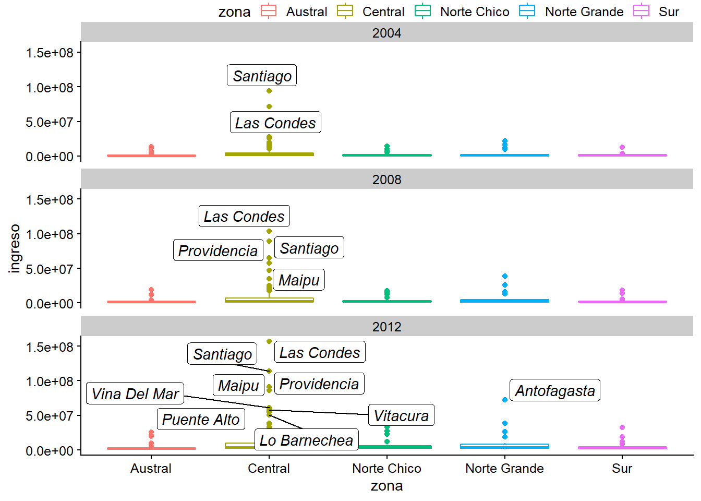
Otros paquetes: ggthemes y hrbrthemes
## install.packages("ggthemes")
## install.packages("hrbrthemes")
library(ggthemes)
library(hrbrthemes)ggthemes
plot_c +
theme_economist_white()
plot_c +
theme_solarized()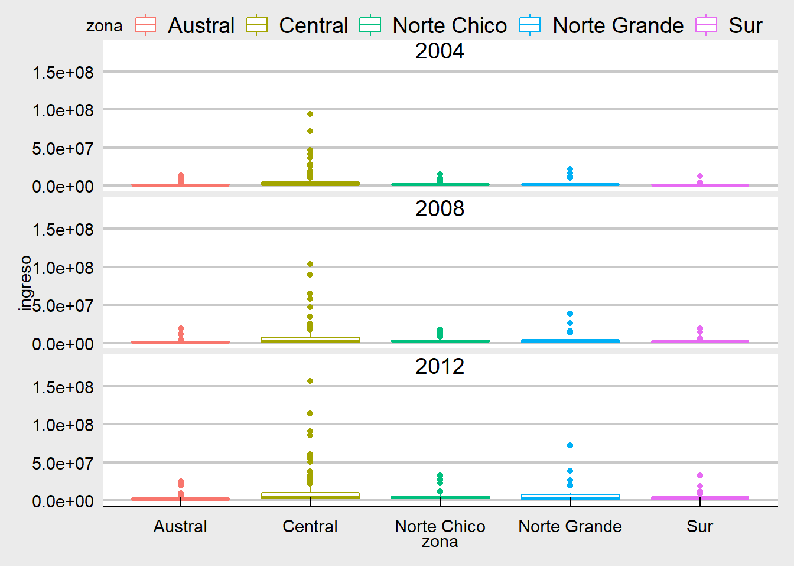
hrbrthemes
plot_c +
theme_tinyhand()
plot_c +
theme_modern_rc()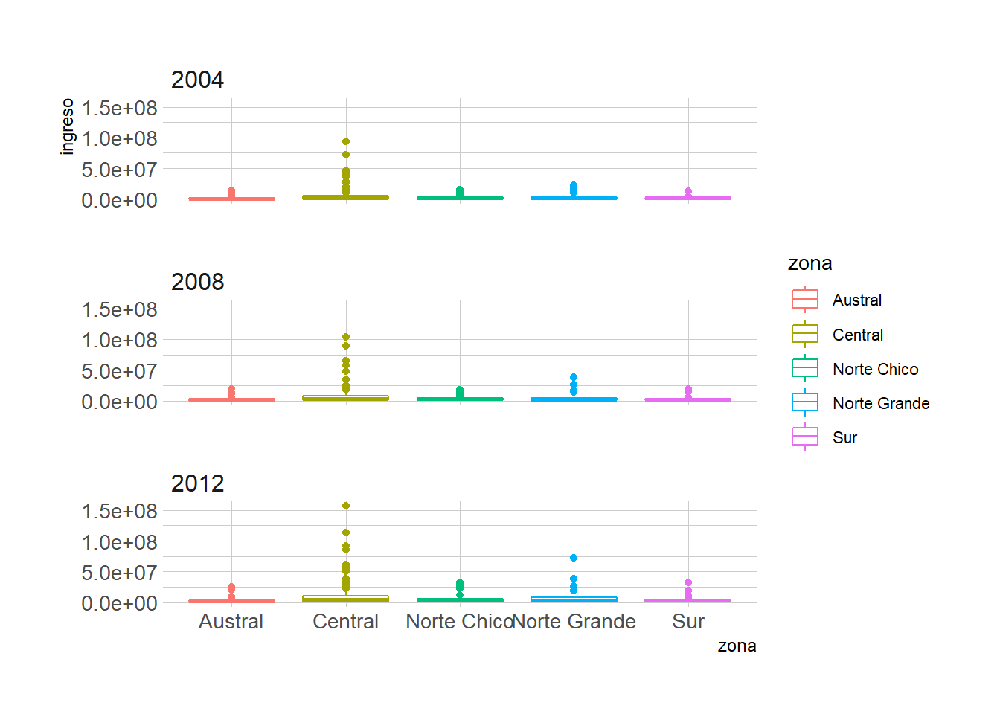
Ejercicio 3B
¿Qué pasa si ponemos bins = 15 de intervalos?
Gráfico original
ggplot(data = datos_municipales,
mapping = aes(x = ingreso)) +
geom_histogram(bins = 50) +
scale_x_continuous(labels = scales::dollar)
Cambiar tamaño de barras
ggplot(data = datos_municipales,
mapping = aes(x = ingreso)) +
geom_histogram(bins = 15) +
scale_x_continuous(labels = scales::dollar)
Ejercicio 3C
Ya hemos aprendido a hacer un histograma, sin embargo, los gráficos de densidad tienden a ser más utilizados para mirar la distribución de una variable. Usando las mismas variables, haz una gráfica de densidad con
geom_density()
ggplot(data = datos_municipales,
mapping = aes(x = ingreso)) +
geom_density() +
scale_x_continuous(labels = scales::dollar)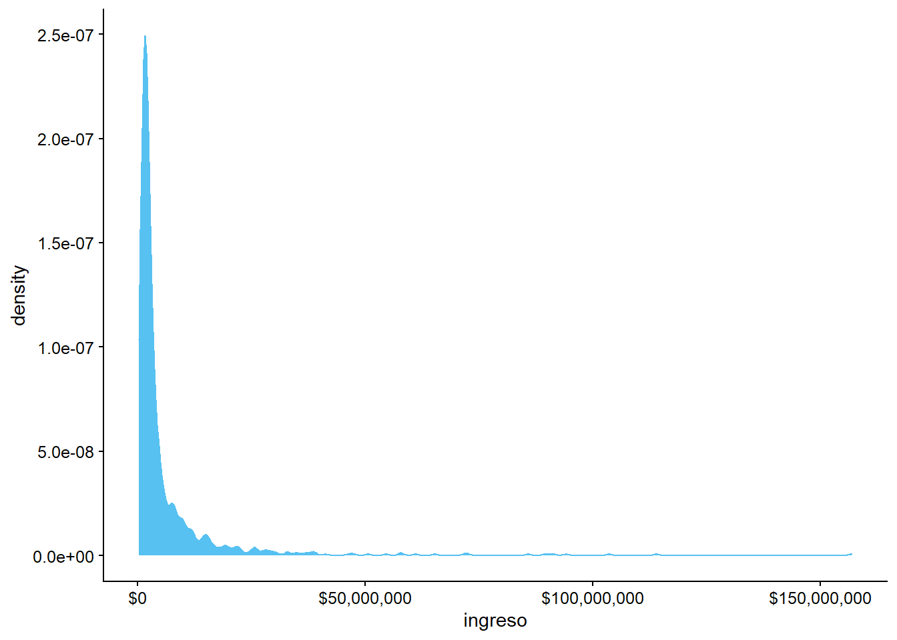
Ejercicio 3D
Normalmente, los gráficos de barras se presentan con la frecuencia o proporción dentro de la barra. También podemos hacer esto con el
ggplot2. Usandogeom_bar()ygeom_text(), apunta el número de alcaldes por área geográfica. Un consejo: tienes que hacer algunos cálculos con tidyverse antes de añadir esa información en la gráfica.
datos_municipales %>%
group_by(anio) %>%
count(zona)
## # A tibble: 15 x 3
## # Groups: anio [3]
## anio zona n
## <chr> <chr> <int>
## 1 2004 Austral 59
## 2 2004 Central 203
## 3 2004 Norte Chico 23
## # ... with 12 more rows
ggplot(datos_municipales %>%
group_by(anio) %>%
count(zona),
aes(x = zona, y = n)) +
geom_bar(stat = "identity") +
facet_grid(~ anio) +
geom_text(aes(label = n)) 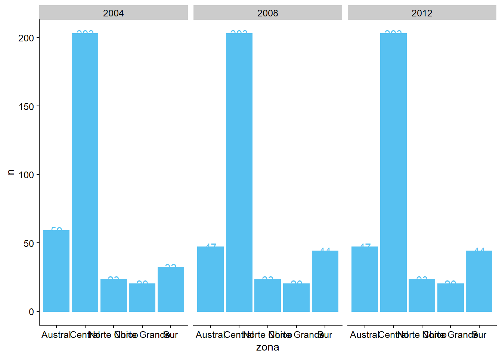
Mejoramos la presentación:
ggplot(datos_municipales %>%
group_by(anio) %>%
count(zona),
aes(x = zona, y = n)) +
geom_bar(stat = "identity") +
facet_grid(~ anio) +
geom_label(aes(label = n)) +
labs(title = "Cantidad de alcaldes por zona",
subtitle = "Chile",
y = "",
x = "") +
theme(axis.text.x = element_text(angle = 45, hjust = 1)) #Cambiar ángulo de etiquetas en eje x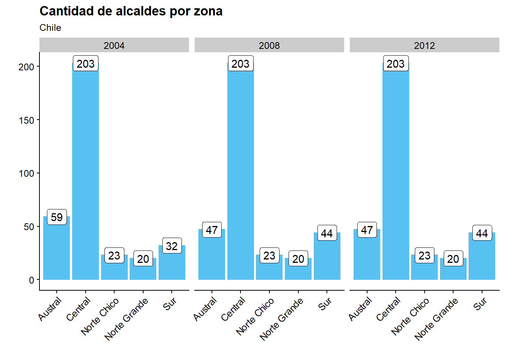
Ejercicio 3E
Escogiendo sólo un año, haz un gráfico de líneas con geom_smooth que indique la relación entre los ingresos y la tasa de pobreza. Ahora, con annotate, haz un gráfico de caja que contenga los municipios con mayor índice de pobreza y, encima de él, escribe el nombre del municipio correspondiente.
grafico1_3e <- ggplot(datos_municipales %>%
filter(anio == 2004),
aes(x = pobreza, y = log(ingreso))) +
geom_smooth(method = "lm", color = "#330066")
grafico1_3e
## Warning: Removed 40 rows containing non-finite values (stat_smooth).
Ahora pasaremos al gráfico de cajas con las municipalidades. Para este ejercicio no vamos a filtrar las observaciones para tener sólo un año, ya que necesitamos la variación en el tiempo para crear las cajas. Vayamos paso a paso!
En primer lugar, creamos el gráfico con las cajas que representan la pobreza de los municipios.
ggplot(datos_municipales,
aes(x = municipalidad, y = pobreza)) +
geom_boxplot()
## Warning: Removed 47 rows containing non-finite values (stat_boxplot).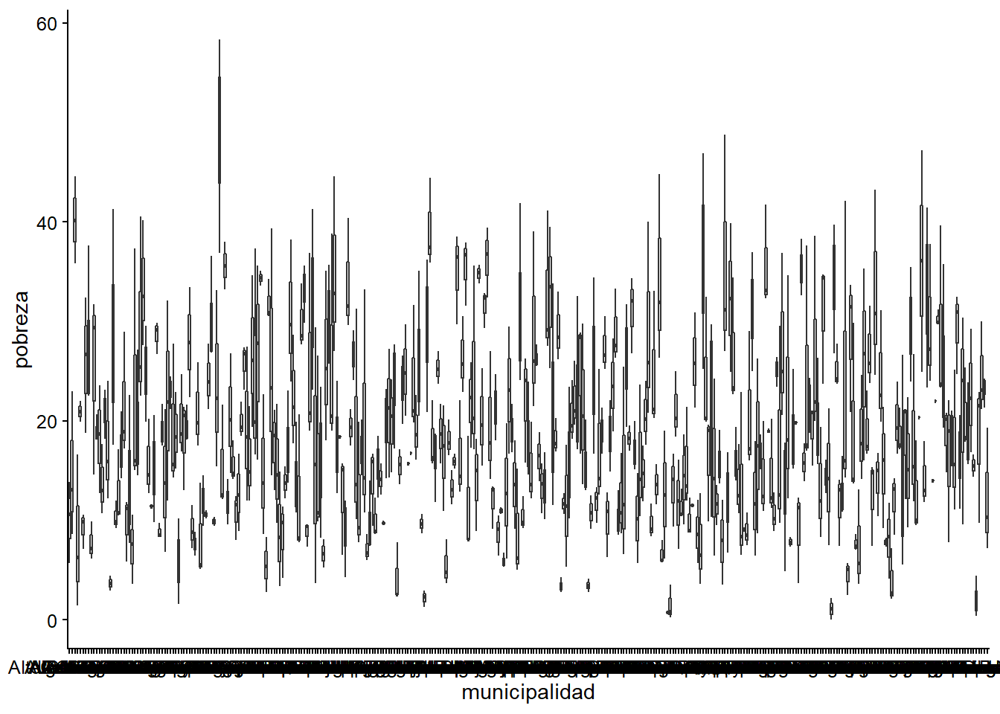
Vemos que no es muy legible, por lo que pasaremos a filtrar sólo aquellas observaciones en que el porcentaje de personas en situación de pobreza es mayor a 35%.
ggplot(datos_municipales %>%
filter(pobreza >= 35),
aes(x = municipalidad, y = pobreza)) +
geom_boxplot() 
Ahora va quedando mejor, sin embargo, las etiquetas en el eje x todavía no pueden leerse. A continuación verás dos opciones de lo que se podría hacer para mejorar el gráfico (recuerda que pueden haber otras formas de hacerlo, todo depende de lo que quieras hacer y mostrar!)
Alternativa 1
A continuación vamos a quitar todas las etiquetas del eje X (tanto el nombre del eje como los valores del mismo)
ggplot(datos_municipales %>%
filter(pobreza >= 35),
aes(x = municipalidad, y = pobreza)) +
geom_boxplot() +
theme(axis.title.x=element_blank(),
axis.text.x=element_blank(),
axis.ticks.x=element_blank())
Ahora le agregamos el nombre de la municipalidad a aquellas observaciones en donde la pobreza es mayor o igual al 40%
ggplot(datos_municipales %>%
filter(pobreza >= 35),
aes(x = municipalidad, y = pobreza)) +
geom_boxplot() +
theme(axis.title.x=element_blank(),
axis.text.x=element_blank(),
axis.ticks.x=element_blank()) +
geom_text_repel(data = datos_municipales %>%
filter(pobreza >= 40), aes(x = municipalidad, label = municipalidad))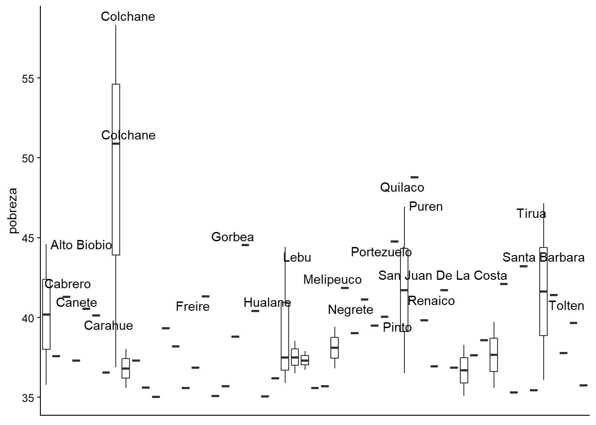
Alternativa 2
Ahora en vez de sacar la información del eje X, vamos a cambiar la orientación de las etiquetas en 45°:
ggplot(datos_municipales %>%
filter(pobreza >= 35),
aes(x = municipalidad, y = pobreza)) +
geom_boxplot() +
theme(axis.text.x = element_text(angle = 45, hjust = 1),
axis.title.x=element_blank()) 
Si quisieramos, podríamos agregarle neuvamente las etiquetas de aquellas municipalidades en donde la pobreza es igual o mayor al 40%
ggplot(datos_municipales %>%
filter(pobreza >= 35),
aes(x = municipalidad, y = pobreza)) +
geom_boxplot() +
theme(axis.text.x = element_text(angle = 45, hjust = 1),
axis.title.x=element_blank()) +
geom_text_repel(data = datos_municipales %>%
filter(pobreza >= 40), aes(x = municipalidad, label = municipalidad))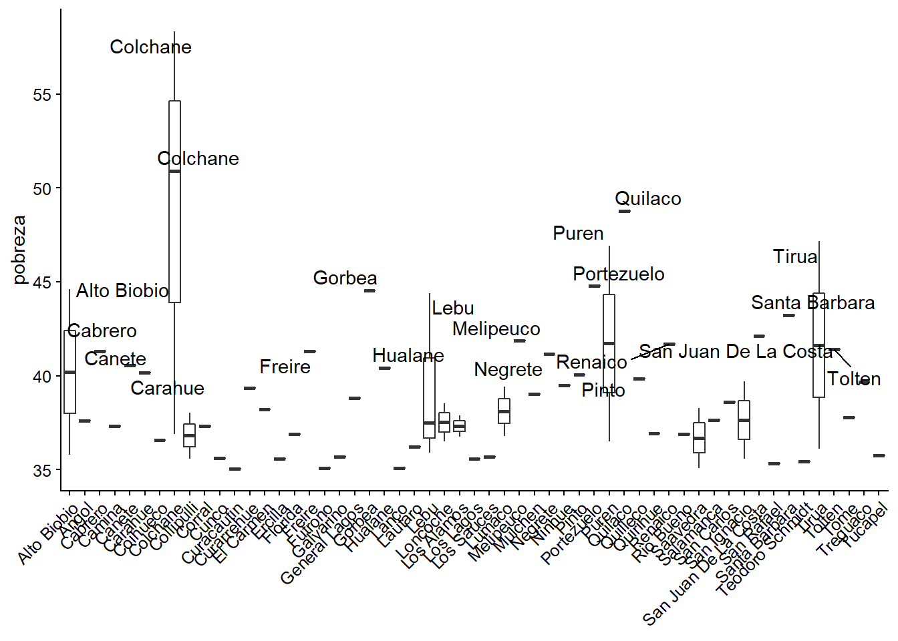
Capítulo 4: Carga de bases
Paquetes y carga de datos
library(tidyverse)
library(paqueteadp)
library(haven)
## install.packages("readxl")
library(readxl)
library(janitor)Ejercicio 4A
Desde la página web de Latinobarómetro, descarga la edición 2017 en formato SPSS (.sav) e impórtelas a R. Ten cuidado con las etiquetas
Este ejercicio puede tener distintos nombres, dependiendo del nombre de las carpetas, ordenador, etc.
getwd() #Este comando nos sirve para saber la direccion de la carpeta en la que trabajamos
## [1] "C:/Users/andres/Dropbox/Proyecto de libro/libroadp_es_v1"
df_latinobarometro2017_spss <- read_spss("00-archivos/ejercicios/capitulo 4/latinobarometro2017_sav/Latinobarometro2017Eng_v20180117.sav")
glimpse(df_latinobarometro2017_spss) # Notamos que hay etiquetas en las variables
## Rows: 20,200
## Columns: 324
## $ NUMINVES <dbl+lbl> 2017, 2017, 2017, 2017, 2017, 2017, 2017, 2017, ~
## $ IDENPA <dbl+lbl> 32, 32, 32, 32, 32, 32, 32, 32, 32, 32, 32, 32, ~
## $ NUMENTRE <dbl> 1, 2, 3, 4, 5, 6, 7, 8, 9, 10, 11, 12, 13, 14, 15, 1~
## $ REG <dbl+lbl> 32301, 32301, 32301, 32301, 32301, 32301, 32301,~
## $ CIUDAD <dbl+lbl> 3.2e+07, 3.2e+07, 3.2e+07, 3.2e+07, 3.2e+07, 3.2~
## $ TAMCIUD <dbl+lbl> 7, 7, 7, 7, 7, 7, 7, 7, 7, 7, 7, 7, 7, 7, 7, 7, ~
## $ COMDIST <dbl> 1, 1, 1, 1, 1, 1, 1, 1, 2, 2, 2, 2, 2, 2, 2, 2, 3, 3~
## $ CODIGO <dbl> 37, 43, 37, 43, 37, 43, 43, 37, 43, 37, 37, 43, 37, ~
## $ DIAREAL <dbl+lbl> 29, 29, 29, 29, 29, 29, 29, 29, 4, 4, 4, 4, ~
## $ MESREAL <dbl+lbl> 7, 7, 7, 7, 7, 7, 7, 7, 8, 8, 8, 8, 8, 8, 8, 8, ~
## $ INI <dbl> 1053, 1103, 1149, 1158, 1251, 1432, 1306, 1354, 1141~
## $ FIN <dbl> 1128, 1146, 1227, 1241, 1346, 1505, 1351, 1422, 1212~
## $ DURA <dbl> 35, 43, 38, 43, 55, 33, 45, 28, 31, 33, 27, 30, 37, ~
## $ TOTREVI <dbl> 0, 0, 1, 0, 0, 0, 2, 0, 0, 0, 0, 0, 1, 0, 0, 4, 0, 0~
## $ TOTCUOT <dbl+lbl> 0, 1, 5, 0, 1, 1, 4, 0, 0, 0, 0, 0, 0, 1, 1, 0, ~
## $ TOTRECH <dbl+lbl> 3, 1, 3, 1, 3, 0, 1, 0, 1, 0, 0, 0, 2, 1, 2, 3, ~
## $ TOTPERD <dbl+lbl> 0, 0, 0, 0, 0, 0, 0, 0, 0, 0, 0, 0, 0, 0, 0, 0, ~
## $ NUMCASA <dbl+lbl> 4, 2, 4, 2, 4, 1, 2, 1, 2, 1, 1, 1, 3, 2, 3, 4, ~
## $ CODSUPER <dbl+lbl> 1, 1, 1, 1, 1, 0, 1, 0, 0, 0, 0, 0, 0, 0, 0, 0, ~
## $ SUPERVVI <dbl+lbl> 1, 2, 1, 1, 2, 2, 1, 2, 2, 2, 2, 2, 2, 2, 2, 2, ~
## $ SUPERVEN <dbl+lbl> 0, 1, 1, 1, 1, 0, 0, 0, 0, 0, 0, 0, 0, 0, 0, 0, ~
## $ CODIF <dbl+lbl> 2, 2, 2, 2, 2, 2, 2, 2, 2, 2, 2, 2, 2, 2, 2, 2, ~
## $ DIGIT <dbl+lbl> 1, 1, 1, 1, 1, 1, 1, 1, 1, 1, 1, 1, 1, 1, 1, 1, ~
## $ WT <dbl+lbl> 1.58, 0.71, 1.00, 0.71, 0.71, 0.71, 0.71, 0.71, ~
## $ P1ST <dbl+lbl> 3, 3, 1, 2, 2, 3, 1, 1, 1, 1, 1, 1, 1, 1, 1, 3, ~
## $ P2ST <dbl+lbl> 2, 2, NA, 1, 1, 3, 1, 2, 1, 2, 2, 3, ~
## $ P3STGBS <dbl+lbl> 7, 25, 6, 13, 6, 6, 13, 6, 15, 25, 25, 7, ~
## $ P4STGBSC <dbl+lbl> 4, 3, 3, 4, 2, 4, 3, 3, 2, 4, 3, 4, 3, 5, 3, 4, ~
## $ P5STGBS <dbl+lbl> 4, 4, 2, 4, 3, 5, 4, 4, 3, 4, 4, 4, 4, 4, 2, 5, ~
## $ P6STICC1 <dbl+lbl> 2, 2, 2, 2, 3, 4, 1, 4, 4, 4, NA, NA, ~
## $ P7STGBS <dbl+lbl> 3, 3, 1, 2, 3, 2, 2, 3, 2, 2, 2, 3, ~
## $ P8STGBS <dbl+lbl> 2, 1, 1, 1, 1, 1, 1, 1, 3, 2, 3, 1, ~
## $ P9STGBSC.A <dbl+lbl> 3, 3, 1, 3, 2, 2, 3, 1, 4, 1, 3, 2, ~
## $ P9STGBS.B <dbl+lbl> 3, 4, 3, 3, 2, 4, 3, 4, 2, 3, 3, 3, 4, 4, 4, 3, ~
## $ P10ST <dbl+lbl> 1, 1, 2, NA, 1, 1, 2, 1, 2, 2, 1, 1, ~
## $ P11STGBSC <dbl+lbl> 1, 6, 8, 6, 7, 6, 10, 5, 8, 7, 5, 10, ~
## $ P12STC <dbl+lbl> 16, 16, 1, 1, 1, 2, 1, 3, 97, 1, 3, 97, ~
## $ P13STGBS <dbl+lbl> 2, 2, 2, 2, 2, 2, 2, 2, 2, 2, 2, 2, 2, 2, 2, 2, ~
## $ P14STGBS.A <dbl+lbl> 2, 4, 2, 1, 1, 3, 1, 3, 1, 3, 2, 2, 3, 3, 3, 3, ~
## $ P14STGBS.B <dbl+lbl> 2, 4, 2, 3, 3, 4, 2, 2, 4, 4, 3, 2, 4, 3, 3, 2, ~
## $ P14ST.C <dbl+lbl> NA, 3, 2, 1, 1, 1, 1, 1, 2, 2, 4, 2, ~
## $ P14ST.D <dbl+lbl> 2, 4, 3, 3, 3, 3, 3, 4, 4, 2, 1, 2, ~
## $ P14ST.E <dbl+lbl> 2, 4, 2, 1, 1, 4, 1, 2, 2, 4, 3, 3, 4, 4, 4, 4, ~
## $ P14ST.F <dbl+lbl> 2, 4, 2, 4, 1, 3, 2, 1, 4, 4, 2, 2, ~
## $ P14ST.G <dbl+lbl> 3, 3, 3, 4, 4, 4, 3, 4, 3, 4, 2, 2, 4, 4, 3, 3, ~
## $ P14ST.H <dbl+lbl> 2, 3, 2, 2, 3, 3, 1, 4, 4, 4, 3, 2, ~
## $ P15ST.A <dbl+lbl> 0, 0, 1, 1, 0, 0, 0, 0, 0, 1, 0, 1, 0, 1, 0, 1, ~
## $ P15ST.B <dbl+lbl> 0, 0, 0, 1, 0, 0, 0, 0, 0, 0, 0, 0, 0, 0, 0, 1, ~
## $ P15ST.C <dbl+lbl> 0, 0, 0, 1, 0, 0, 0, 0, 0, 0, 0, 0, 0, 0, 0, 0, ~
## $ P15ST.D <dbl+lbl> 0, 0, 0, 0, 0, 0, 0, 0, 0, 0, 1, 1, 0, 0, 0, 0, ~
## $ P15ST.E <dbl+lbl> 0, 0, 0, 1, 1, 0, 0, 0, 1, 0, 0, 0, 0, 0, 0, 1, ~
## $ P15ST.F <dbl+lbl> 0, 1, 0, 0, 1, 0, 0, 0, 0, 0, 0, 1, 0, 0, 0, 0, ~
## $ P15ST.G <dbl+lbl> 0, 0, 1, 1, 0, 0, 0, 1, 0, 0, 1, 1, 0, 0, 0, 0, ~
## $ P15ST.H <dbl+lbl> 0, 0, 0, 1, 0, 0, 0, 0, 0, 0, 0, 0, 0, 0, 0, 0, ~
## $ P15ST.I <dbl+lbl> 1, 1, 1, 1, 1, 1, 1, 1, 0, 0, 0, 0, 0, 1, 1, 1, ~
## $ P15ST.J <dbl+lbl> 0, 0, 0, 0, 0, 0, 0, 0, 0, 0, 0, 0, 0, 0, 0, 0, ~
## $ P15ST.K <dbl+lbl> 0, 0, 0, 0, 0, 0, 0, 0, 0, 0, 0, 0, 1, 0, 0, 0, ~
## $ P16STGBS <dbl+lbl> NA, 95, 32044, 32006, 32044, 32001, NA,~
## $ P16STGBS.A <dbl+lbl> NA, NA, 1, 1, 1, 2, NA, 2, 1, 2, NA, 2, ~
## $ PERPART <dbl+lbl> 4, 4, 1, 1, 1, 2, 4, 2, 1, 2, 4, 2, 4, 4, 2, 2, ~
## $ FAMPART <dbl+lbl> 0, 0, 30, 60, 30, 30, 0, 30, 30, 30, 0, 30, ~
## $ P17STGBSC <dbl+lbl> 2, 1, 1, 1, 1, 2, 1, 2, 1, 2, 2, 2, 2, 2, 2, 2, ~
## $ P18GBS <dbl+lbl> 3, 3, 2, 3, 2, 5, 2, 1, 4, 2, 3, 2, 2, 3, 3, 3, ~
## $ P19STC <dbl+lbl> 0, 5, 8, NA, 8, 4, 5, 5, 5, 8, 5, 6, ~
## $ P20ST <dbl+lbl> 3, 3, NA, 3, 3, 3, 3, 3, 2, 3, 1, 3, ~
## $ P21ST.A <dbl+lbl> 1, 2, 2, 2, NA, 1, 2, 3, 4, 2, 2, 2, ~
## $ P21ST.B <dbl+lbl> 2, 2, 3, 3, 4, 2, 3, 2, NA, 2, 1, 2, ~
## $ P21ST.C <dbl+lbl> 1, 3, 1, 1, 2, 2, 2, 1, NA, 2, 2, 1, ~
## $ P21ST.D <dbl+lbl> 2, 2, 1, 1, 3, 2, 3, 1, 1, 2, 3, 2, 2, 3, 2, 2, ~
## $ P21ST.E <dbl+lbl> 2, 3, 3, 1, 3, 3, 3, 3, 4, 2, 2, 3, 2, 3, 2, 2, ~
## $ P21ST.F <dbl+lbl> 2, 2, 2, 2, NA, 3, 2, 2, 2, 2, 2, 3, ~
## $ P21ST.G <dbl+lbl> 2, 2, 1, 2, 4, 2, 3, 4, 2, 2, 2, 2, ~
## $ P21ST.H <dbl+lbl> 2, 3, 1, 1, 4, 2, 3, 2, 1, 2, 1, 1, 1, 2, 2, 2, ~
## $ P22ST <dbl+lbl> 4, 3, 1, 1, 1, 2, 1, 2, 3, 2, 3, 2, 2, 4, 2, 2, ~
## $ P23STC <dbl+lbl> 1, 2, 1, 1, 1, 2, 1, 2, 1, 1, 2, 1, 1, 2, 1, 4, ~
## $ P24STC <dbl+lbl> 2, 2, 1, 1, 1, 1, 3, NA, 1, 2, 2, 1, ~
## $ P25STTI <dbl+lbl> 2, 1, 1, 1, 1, 1, 2, 1, 1, 2, 4, 1, 2, 3, 1, 1, ~
## $ P26ST <dbl+lbl> 2, 2, 4, 4, 2, 2, 4, 4, 1, 2, 2, 2, 4, 3, 2, 1, ~
## $ P27ST <dbl+lbl> 2, 2, 1, 3, 1, 2, 1, 2, 2, 2, 2, 2, ~
## $ P28N.A <dbl+lbl> 8, 8, 8, 8, 8, 2, 1, 2, 2, 8, 2, 8, 8, 2, 8, 8, ~
## $ P28N.B <dbl+lbl> 8, 8, 2, 2, 8, 2, 1, 2, 2, 8, 2, 8, ~
## $ P28N.C <dbl+lbl> 2, 8, 8, 8, 8, 2, 2, 8, 8, 8, 2, 8, 8, 1, 8, 8, ~
## $ P28N.D <dbl+lbl> 8, 8, 8, 8, 8, 2, 8, 2, 2, 8, 2, 8, ~
## $ P28N.E <dbl+lbl> 8, 1, 2, 2, 2, 2, 2, 2, 2, 8, 2, 8, ~
## $ P28N.F <dbl+lbl> 8, 8, 2, 2, 2, 2, 2, 2, 2, 8, 2, 8, ~
## $ P29NSPA <dbl+lbl> 0, 0, 0, 1, 1, 0, 0, 0, 1, 1, 1, 1, 0, 1, 1, 0, ~
## $ P29NSPB <dbl+lbl> 0, 0, 0, 1, 0, 0, 0, 0, 0, 0, 0, 0, 0, 0, 0, 1, ~
## $ P29NSPC <dbl+lbl> 0, 1, 0, 1, 0, 0, 0, 0, 1, 0, 0, 0, 0, 1, 0, 0, ~
## $ P29NSPD <dbl+lbl> 0, 0, 0, 1, 0, 0, 0, 1, 1, 0, 0, 0, 0, 0, 0, 0, ~
## $ P29NSPE <dbl+lbl> 0, 0, 0, 0, 0, 0, 0, 0, 0, 0, 0, 0, 0, 0, 0, 0, ~
## $ P29NSPF <dbl+lbl> 0, 0, 0, 0, 0, 0, 0, 0, 0, 0, 0, 0, 0, 0, 0, 0, ~
## $ P29NSPG <dbl+lbl> 0, 0, 0, 0, 0, 0, 0, 0, 0, 0, 0, 0, 0, 0, 0, 0, ~
## $ P29NSPH <dbl+lbl> 1, 1, 1, 1, 1, 1, 0, 1, 1, 0, 0, 0, 1, 1, 0, 0, ~
## $ P29NSPI <dbl+lbl> 0, 0, 0, 1, 0, 0, 1, 0, 1, 0, 0, 1, 0, 0, 1, 0, ~
## $ P29NSPJ <dbl+lbl> 0, 1, 1, 1, 0, 0, 0, 0, 1, 0, 0, 0, 0, 1, 0, 0, ~
## $ P29NSPZ <dbl+lbl> 0, 0, 0, 0, 0, 0, 0, 0, 0, 0, 0, 0, 0, 0, 0, 0, ~
## $ P29NSPX <dbl+lbl> 0, 0, 0, 0, 0, 0, 0, 0, 0, 0, 0, 0, 0, 0, 0, 0, ~
## $ P30NSP <dbl+lbl> 10, 10, 8, 1, 9, 10, 5, 1, 1, 10, 10, 1, ~
## $ P31NSP <dbl+lbl> NA, NA, 1, 1, 3, NA, 1, 1, 1, NA, NA, 1, ~
## $ P32NSP.A <dbl+lbl> NA, NA, 2, 1, 1, NA, 1, 1, 1, NA, NA, 6, ~
## $ P33NSP <dbl+lbl> NA, NA, 1, 1, 1, NA, 1, 1, 1, NA, NA, 2, ~
## $ P34NA <dbl+lbl> NA, NA, NA, 1, 9, NA, NA, 24, NA, NA, NA, 1, ~
## $ P34NB <dbl+lbl> 99, 99, 10, 0, 0, 99, 15, 0, 20, 99, 99, 0, ~
## $ P35NC <dbl+lbl> 1, 1, 3, 2, 0, 1, 1, 1, 0, 2, 0, 3, ~
## $ P36C <dbl+lbl> 2, 1, 2, 1, 1, 2, 2, 2, 2, 2, 2, 2, 2, 2, 2, 2, ~
## $ P37NC <dbl+lbl> NA, 2, 1, 2, 1, 1, 1, 1, 1, 2, 1, 1, ~
## $ P38ST <dbl+lbl> 4, 2, 1, 4, 1, 4, 2, 3, 2, 3, 1, 2, ~
## $ P39STTI <dbl+lbl> 3, 3, 4, 3, 4, 2, 3, 3, 4, 2, 2, 2, ~
## $ P40NC_A <dbl+lbl> 1, NA, 2, NA, 0, NA, 2, NA, 2, NA, 1, NA, ~
## $ P40NC_B <dbl+lbl> NA, 2, NA, 1, NA, 2, NA, 1, NA, 1, NA, 2, ~
## $ P41STC.A <dbl+lbl> 1, 5, 4, NA, 5, 5, 5, 4, 5, 4, 1, 4, ~
## $ P41STC.B <dbl+lbl> 2, 5, 4, NA, 5, 5, 3, 2, 5, 4, 1, 3, ~
## $ P41STC.C <dbl+lbl> 2, NA, 2, NA, 5, 5, 2, 2, 5, 4, 1, 3, ~
## $ P42NC.A <dbl+lbl> 5, 5, 7, 10, 7, 3, 7, 5, 10, 7, 6, 7, ~
## $ P42NC.B <dbl+lbl> 5, 6, 7, 4, 8, 1, 9, 5, 5, 6, 6, 8, ~
## $ P42NC.C <dbl+lbl> 2, 6, 8, 6, NA, 1, 9, 8, 2, 8, 0, 9, ~
## $ P42NC.D <dbl+lbl> 6, 6, 3, 10, 7, 10, 8, 5, 10, 8, 0, 8, ~
## $ P42NC.E <dbl+lbl> 6, 4, 5, 10, 8, 5, 4, 5, 10, 8, 0, 7, ~
## $ P42NC.F <dbl+lbl> 6, 4, 5, 10, 10, NA, 1, 7, 10, 7, 0, 7, ~
## $ P43ST.A <dbl+lbl> 2, 1, 1, 1, 1, 2, 1, 1, 4, 1, 1, 2, ~
## $ P43ST.B <dbl+lbl> 2, 1, 2, 1, 1, 2, 1, 1, 4, 1, 1, 2, ~
## $ P44N <dbl+lbl> 5, 3, 5, NA, 5, 5, 4, 2, 6, 3, 3, 5, ~
## $ P45ST.A <dbl+lbl> 2, 2, 2, 4, 2, 4, 3, 2, 2, 2, 2, 2, ~
## $ P45N.B <dbl+lbl> NA, 3, NA, NA, NA, NA, 3, NA, NA, NA, 2, NA, ~
## $ P45ST.C <dbl+lbl> 2, 2, 2, 2, 2, NA, 2, NA, 2, NA, 2, 2, ~
## $ P45ST.D <dbl+lbl> NA, NA, 1, 2, 2, NA, 1, NA, 3, NA, 2, NA, ~
## $ P45ST.E <dbl+lbl> NA, 2, 3, NA, NA, NA, 2, NA, 3, NA, 2, NA, ~
## $ P45N.F <dbl+lbl> 4, 3, NA, NA, NA, NA, 2, NA, 3, NA, 2, NA, ~
## $ P46ST.A <dbl+lbl> NA, 2, 2, 2, 1, 3, 2, NA, 2, 2, NA, 2, ~
## $ P46ST.B <dbl+lbl> NA, 3, NA, NA, 3, NA, 2, NA, NA, NA, NA, NA, ~
## $ P46ST.C <dbl+lbl> 2, 3, 2, NA, 2, NA, 1, NA, 2, NA, NA, NA, ~
## $ P46ST.D <dbl+lbl> 2, 3, 2, 2, 3, NA, 2, NA, 3, NA, NA, NA, ~
## $ P46STM.E <dbl+lbl> NA, 4, NA, NA, 3, NA, 3, NA, 3, NA, NA, NA, ~
## $ P47N <dbl+lbl> 2, 3, 1, 3, 2, 4, 1, 1, 1, 3, 3, 3, ~
## $ P48STM <dbl+lbl> 1, 1, 1, 2, 1, 1, 1, NA, 2, 2, NA, 1, ~
## $ P49STA.1 <dbl+lbl> 2, 1, 1, 1, 1, 2, 1, 2, 1, 2, 1, 1, 1, 2, 1, 2, ~
## $ P49STA.2 <dbl+lbl> 2, 2, 1, 2, 1, 2, 1, 2, 1, 2, 2, 2, 2, 2, 2, 2, ~
## $ P49STA.3 <dbl+lbl> 2, 2, 2, 2, 2, 2, 2, 2, 2, 2, 2, 2, 2, 2, 2, 2, ~
## $ P49STA.4 <dbl+lbl> 1, 1, 1, 1, 1, 2, 1, 2, 2, 2, 2, 2, 2, 2, 2, 2, ~
## $ P49STA.5 <dbl+lbl> 2, 2, 2, 2, 2, 1, 2, 2, 2, 2, 1, 2, 2, 2, 2, 2, ~
## $ P49STA.6 <dbl+lbl> 2, 2, 2, 2, 1, 2, 2, 2, 2, 2, 2, 2, 2, 2, 2, 2, ~
## $ P49STA.7 <dbl+lbl> 1, 1, 1, 1, 1, 1, 1, 2, 1, 2, 1, 1, 2, 2, 1, 2, ~
## $ P49STA.8 <dbl+lbl> 2, 1, 1, 1, 1, 2, 1, 2, 2, 2, 1, 2, 2, 2, 2, 2, ~
## $ P49STB.1 <dbl+lbl> NA, 2, 2, 3, 3, NA, 1, NA, 2, NA, 2, 1, ~
## $ P49STB.2 <dbl+lbl> NA, NA, 2, NA, 1, NA, 3, NA, 2, NA, NA, NA, ~
## $ P49STB.3 <dbl+lbl> NA, NA, NA, NA, NA, NA, NA, NA, NA, NA, NA, NA, ~
## $ P49STB.4 <dbl+lbl> 2, 2, NA, 3, 1, NA, 2, NA, NA, NA, NA, NA, ~
## $ P49STB.5 <dbl+lbl> NA, NA, NA, NA, NA, NA, NA, NA, NA, NA, 2, NA, ~
## $ P49STB.6 <dbl+lbl> NA, NA, NA, NA, 1, NA, NA, NA, NA, NA, NA, NA, ~
## $ P49STB.7 <dbl+lbl> 2, 4, 2, 4, 3, NA, 3, NA, 4, NA, 1, 2, ~
## $ P49STB.8 <dbl+lbl> NA, 4, 2, 4, 3, NA, 3, NA, NA, NA, 1, NA, ~
## $ P50STM <dbl+lbl> NA, 4, 1, 1, 2, 97, 4, NA, 7, NA, NA, NA, ~
## $ P51STMA <dbl+lbl> 0, 1, 0, 1, 1, 0, 0, 0, 1, 1, 0, 1, 0, 0, 0, 0, ~
## $ P51STMB <dbl+lbl> 1, 1, 1, 0, 1, 1, 1, 0, 1, 0, 1, 1, 1, 1, 0, 1, ~
## $ P51STMC <dbl+lbl> 0, 0, 1, 1, 1, 0, 1, 1, 1, 0, 0, 1, 0, 0, 0, 0, ~
## $ P51STMD <dbl+lbl> 0, 0, 1, 1, 1, 0, 0, 0, 1, 0, 0, 1, 0, 0, 0, 0, ~
## $ P51STME <dbl+lbl> 0, 0, 0, 1, 1, 0, 1, 0, 1, 0, 0, 1, 1, 0, 1, 0, ~
## $ P51STMF <dbl+lbl> 0, 0, 0, 1, 1, 0, 0, 0, 1, 0, 0, 1, 0, 1, 0, 0, ~
## $ P51STMG <dbl+lbl> 0, 0, 0, 1, 1, 1, 1, 0, 1, 0, 0, 1, 1, 1, 0, 0, ~
## $ P51STMH <dbl+lbl> 0, 0, 0, 1, 0, 0, 1, 0, 1, 0, 0, 1, 0, 0, 0, 0, ~
## $ P51STMI <dbl+lbl> 0, 0, 0, 1, 0, 0, 1, 0, 1, 0, 0, 1, 0, 0, 0, 0, ~
## $ P51STMJ <dbl+lbl> 0, 0, 1, 1, 0, 0, 1, 0, 1, 0, 0, 1, 0, 0, 0, 0, ~
## $ P51STMK <dbl+lbl> 0, 1, 0, 1, 0, 1, 1, 0, 1, 0, 0, 1, 0, 0, 0, 0, ~
## $ P51STMZ <dbl+lbl> 0, 0, 0, 0, 0, 0, 0, 0, 0, 0, 0, 0, 0, 0, 0, 0, ~
## $ P52NA <dbl+lbl> 1, 0, 1, 1, 0, 0, 1, 1, 0, 1, 1, 1, 1, 0, 1, 1, ~
## $ P52NB <dbl+lbl> 0, 1, 0, 0, 1, 1, 1, 0, 0, 0, 0, 0, 0, 0, 0, 0, ~
## $ P52NC <dbl+lbl> 0, 0, 0, 1, 0, 0, 0, 0, 0, 0, 0, 1, 0, 0, 0, 0, ~
## $ P52ND <dbl+lbl> 0, 0, 1, 0, 0, 0, 1, 0, 0, 0, 0, 0, 0, 0, 0, 0, ~
## $ P52NE <dbl+lbl> 0, 0, 0, 1, 0, 0, 1, 0, 1, 0, 0, 1, 0, 0, 0, 0, ~
## $ P52NF <dbl+lbl> 0, 0, 0, 0, 0, 0, 0, 0, 0, 0, 0, 1, 0, 0, 0, 0, ~
## $ P52NZ <dbl+lbl> 0, 0, 0, 0, 0, 0, 0, 0, 0, 0, 0, 0, 0, 1, 0, 0, ~
## $ P53ST.A <dbl+lbl> 2, 2, 2, 2, 1, 2, 1, 1, 2, 1, 1, 3, ~
## $ P53N.B <dbl+lbl> 2, 3, 1, 2, 2, 2, 3, 4, 1, 2, 2, 2, ~
## $ P53N.C <dbl+lbl> 2, 3, 3, NA, 4, 2, 3, 4, 3, 4, NA, 3, ~
## $ P53N.D <dbl+lbl> 1, 3, 3, 1, 2, 2, 4, 4, 3, 1, 4, 4, ~
## $ P53N.E <dbl+lbl> 2, 2, 2, 2, 1, 1, 1, 1, 2, 1, 2, 2, ~
## $ P53N.F <dbl+lbl> 2, 2, 1, 1, 2, 2, 3, 4, 2, 1, 2, 3, ~
## $ P53N.G <dbl+lbl> 2, 2, 1, 1, 2, 2, 3, 4, 2, 1, 2, 3, ~
## $ P53N.H <dbl+lbl> 1, 2, 1, 1, 1, 2, 1, 4, 1, 1, 2, 1, ~
## $ P53N.I <dbl+lbl> 1, 1, 1, 1, 1, 3, 1, 1, 1, 1, 4, 1, ~
## $ P54STMA <dbl+lbl> 0, 0, 0, 0, 0, 0, 0, 0, 0, 0, 1, 0, 0, 0, 0, 0, ~
## $ P54STMB <dbl+lbl> 0, 0, 1, 0, 1, 0, 0, 0, 0, 0, 0, 0, 0, 0, 0, 1, ~
## $ P54STMC <dbl+lbl> 0, 0, 0, 0, 0, 0, 0, 0, 0, 1, 0, 0, 0, 0, 1, 0, ~
## $ P54STMD <dbl+lbl> 0, 0, 0, 1, 0, 0, 0, 0, 0, 0, 0, 0, 0, 0, 0, 0, ~
## $ P54STME <dbl+lbl> 0, 0, 1, 0, 0, 0, 0, 0, 0, 0, 0, 0, 0, 0, 0, 0, ~
## $ P54STMF <dbl+lbl> 0, 0, 0, 1, 0, 0, 0, 0, 1, 0, 0, 0, 0, 0, 0, 0, ~
## $ P54STMG <dbl+lbl> 0, 0, 0, 0, 0, 0, 0, 0, 0, 0, 1, 0, 0, 0, 0, 0, ~
## $ P54STMH <dbl+lbl> 0, 0, 0, 0, 0, 0, 0, 0, 0, 0, 0, 0, 0, 0, 0, 0, ~
## $ P54STMI <dbl+lbl> 0, 1, 1, 0, 0, 0, 0, 0, 0, 0, 0, 0, 0, 0, 0, 0, ~
## $ P54STMJ <dbl+lbl> 0, 0, 0, 0, 1, 0, 0, 0, 0, 0, 0, 0, 0, 0, 0, 0, ~
## $ P54STMX <dbl+lbl> 1, 0, 0, 0, 0, 0, 1, 1, 0, 0, 0, 0, 0, 0, 0, 0, ~
## $ P54STMZ <dbl+lbl> 0, 0, 0, 0, 0, 1, 0, 0, 0, 0, 0, 1, 1, 1, 0, 0, ~
## $ P55N.A <dbl+lbl> 1, 2, 1, 2, 1, 2, 2, 2, 2, 2, 1, 2, ~
## $ P55N.B <dbl+lbl> 1, 2, 2, 2, 1, 2, 2, 2, 2, 2, 2, 2, 2, 2, 2, 2, ~
## $ P55N.C <dbl+lbl> 2, 2, 2, 2, 2, 2, 2, 2, 2, 2, 2, 2, 2, 2, 2, 2, ~
## $ P56N.A <dbl+lbl> 1, 2, 1, 1, 1, 3, 3, 4, 1, 1, 2, 2, 1, 1, 1, 1, ~
## $ P56N.B <dbl+lbl> 1, 2, 3, 1, 1, 1, 3, 4, 1, 1, 1, 3, 1, 1, 1, 1, ~
## $ P56N.C <dbl+lbl> 1, 2, 1, 1, 1, 2, 1, 1, 1, 2, 1, 1, 1, 1, 1, 1, ~
## $ P56N.D <dbl+lbl> 1, 2, 1, 2, 1, 2, 3, 1, 1, 1, 1, 1, ~
## $ P56N.E <dbl+lbl> 1, 2, 1, 1, 1, 1, 1, 4, 1, 1, 1, 2, 1, 1, 1, 4, ~
## $ P56N.F <dbl+lbl> 2, 2, 1, 2, 2, 2, 1, 1, 2, 1, 1, 2, ~
## $ P56N.G <dbl+lbl> 1, 3, 1, 2, 1, 2, NA, 1, 2, 2, 1, 3, ~
## $ P57N <dbl+lbl> 2, 1, 1, 2, 2, 2, 1, 2, 2, 2, 2, 2, 2, 2, 1, 2, ~
## $ P58N <dbl+lbl> 2, 2, 1, 2, 2, 2, 2, 1, 2, 2, 2, 2, 2, 2, 2, 2, ~
## $ P59N <dbl+lbl> NA, 1, 1, 1, 1, 2, 2, 1, 1, 1, 1, 1, ~
## $ P60N <dbl+lbl> 1, 1, 1, 1, 1, 2, 1, 2, 1, 2, 2, 1, ~
## $ P61ST.1 <dbl+lbl> NA, 5, 5, 4, NA, 1, 2, NA, 1, 8, -6, 8, ~
## $ P61ST.2 <dbl+lbl> 0, 4, 0, 0, 4, 0, 4, 8, 0, NA, NA, 2, ~
## $ P61ST.3 <dbl+lbl> 10, 7, 9, 9, 8, 10, 10, 10, 2, 8, NA, 10, ~
## $ P62NA <dbl+lbl> 0, 1, 1, 1, 0, 0, 1, 0, 0, 1, 1, 0, 1, 0, 0, 0, ~
## $ P62NB <dbl+lbl> 0, 0, 0, 1, 1, 0, 0, 0, 0, 1, 0, 0, 1, 1, 0, 0, ~
## $ P62NC <dbl+lbl> 0, 1, 0, 1, 1, 0, 1, 1, 1, 1, 0, 1, 1, 1, 1, 1, ~
## $ P62ND <dbl+lbl> 0, 0, 0, 1, 0, 0, 0, 0, 1, 1, 0, 0, 0, 0, 0, 0, ~
## $ P62NE <dbl+lbl> 0, 1, 0, 1, 1, 0, 1, 0, 1, 1, 0, 1, 0, 0, 0, 0, ~
## $ P62NF <dbl+lbl> 0, 0, 0, 1, 1, 0, 0, 0, 0, 1, 0, 0, 1, 1, 0, 0, ~
## $ P62NG <dbl+lbl> 0, 0, 0, 0, 1, 0, 1, 0, 1, 0, 0, 1, 1, 0, 0, 0, ~
## $ P62NH <dbl+lbl> 0, 1, 0, 0, 1, 0, 0, 0, 0, 0, 0, 0, 1, 0, 0, 0, ~
## $ P62NI <dbl+lbl> 0, 0, 0, 0, 0, 1, 1, 0, 0, 0, 0, 0, 0, 0, 0, 0, ~
## $ P62NJ <dbl+lbl> 1, 1, 1, 0, 0, 0, 1, 0, 1, 0, 0, 1, 0, 0, 0, 0, ~
## $ P62NK <dbl+lbl> 0, 0, 0, 0, 0, 1, 0, 0, 1, 0, 0, 1, 0, 0, 0, 0, ~
## $ P62NX <dbl+lbl> 0, 0, 0, 0, 0, 0, 0, 0, 0, 0, 0, 0, 0, 0, 0, 0, ~
## $ P62NY <dbl+lbl> 0, 0, 0, 0, 0, 0, 0, 0, 0, 0, 0, 0, 0, 0, 0, 0, ~
## $ P62NZ <dbl+lbl> 0, 0, 0, 0, 0, 0, 0, 0, 0, 0, 0, 0, 0, 0, 0, 0, ~
## $ P63A <dbl+lbl> 1, 0, 0, 0, 1, 0, 0, 0, 1, 0, 0, 0, 0, 0, 0, 0, ~
## $ P63B <dbl+lbl> 0, 1, 0, 0, 0, 1, 1, 0, 1, 0, 0, 0, 0, 0, 0, 0, ~
## $ P63C <dbl+lbl> 0, 0, 1, 0, 0, 0, 0, 0, 0, 0, 0, 0, 0, 0, 0, 1, ~
## $ P63D <dbl+lbl> 0, 0, 0, 0, 0, 0, 0, 0, 0, 0, 0, 0, 0, 0, 0, 0, ~
## $ P63E <dbl+lbl> 0, 0, 1, 0, 1, 1, 1, 1, 0, 0, 0, 0, 0, 1, 1, 0, ~
## $ P63F <dbl+lbl> 0, 0, 0, 0, 1, 0, 1, 0, 1, 0, 0, 0, 0, 0, 0, 0, ~
## $ P63G <dbl+lbl> 0, 0, 0, 0, 0, 0, 1, 0, 0, 0, 0, 0, 0, 0, 0, 0, ~
## $ P63H <dbl+lbl> 0, 0, 0, 0, 0, 0, 0, 0, 0, 0, 0, 0, 0, 0, 0, 0, ~
## $ P63I <dbl+lbl> 0, 0, 1, 0, 0, 0, 0, 0, 0, 0, 0, 0, 0, 0, 1, 0, ~
## $ P63J <dbl+lbl> 0, 0, 1, 0, 1, 0, 0, 1, 1, 0, 0, 0, 0, 0, 0, 0, ~
## $ P63K <dbl+lbl> 0, 0, 0, 1, 0, 0, 0, 0, 0, 0, 1, 1, 1, 0, 0, 0, ~
## $ P63X <dbl+lbl> 0, 0, 0, 0, 0, 0, 0, 0, 0, 0, 0, 0, 0, 0, 0, 0, ~
## $ P63Y <dbl+lbl> 0, 0, 0, 0, 0, 0, 0, 0, 0, 1, 0, 0, 0, 0, 0, 0, ~
## $ P63Z <dbl+lbl> 0, 0, 0, 0, 0, 0, 0, 0, 0, 0, 0, 0, 0, 0, 0, 0, ~
## $ P64STAA <dbl+lbl> 0, 1, 0, 0, 0, 0, 0, 0, 0, 0, 0, 1, 1, 1, 0, 0, ~
## $ P64STAB <dbl+lbl> 0, 0, 1, 1, 1, 1, 1, 0, 0, 0, 0, 1, 1, 1, 0, 0, ~
## $ P64STAC <dbl+lbl> 0, 0, 0, 1, 1, 1, 1, 0, 0, 0, 0, 1, 1, 1, 0, 1, ~
## $ P64STAD <dbl+lbl> 0, 1, 1, 1, 0, 0, 0, 1, 1, 0, 0, 1, 1, 1, 0, 1, ~
## $ P64STAE <dbl+lbl> 1, 0, 0, 1, 1, 1, 1, 1, 1, 0, 0, 1, 1, 0, 0, 0, ~
## $ P64STAF <dbl+lbl> 0, 0, 1, 1, 0, 1, 0, 1, 0, 0, 0, 1, 1, 1, 1, 1, ~
## $ P64STAG <dbl+lbl> 0, 1, 0, 1, 1, 0, 1, 1, 1, 1, 1, 1, 1, 0, 0, 0, ~
## $ P64STAH <dbl+lbl> 0, 0, 0, 1, 1, 0, 1, 0, 0, 0, 0, 1, 1, 0, 0, 0, ~
## $ P64STAZ <dbl+lbl> 0, 0, 0, 0, 0, 0, 0, 0, 0, 0, 0, 0, 0, 0, 0, 0, ~
## $ P64STBA <dbl+lbl> 1, 0, 0, 0, 1, 0, 0, 1, 0, 0, 0, 0, 0, 0, 0, 0, ~
## $ P64STBB <dbl+lbl> 1, 0, 0, 0, 0, 0, 0, 1, 0, 0, 0, 0, 0, 0, 0, 0, ~
## $ P64STBC <dbl+lbl> 1, 0, 0, 1, 0, 0, 0, 1, 0, 1, 0, 0, 0, 0, 0, 0, ~
## $ P64STBD <dbl+lbl> 1, 1, 1, 1, 1, 0, 1, 1, 1, 0, 1, 0, 0, 0, 1, 0, ~
## $ P64STBE <dbl+lbl> 1, 0, 0, 0, 0, 0, 0, 0, 0, 0, 0, 0, 0, 0, 0, 0, ~
## $ P64STBF <dbl+lbl> 1, 0, 0, 0, 1, 0, 0, 0, 0, 0, 0, 0, 0, 0, 0, 1, ~
## $ P64STBG <dbl+lbl> 1, 0, 0, 0, 0, 0, 0, 0, 0, 0, 0, 0, 0, 0, 0, 0, ~
## $ P64STBH <dbl+lbl> 1, 1, 0, 1, 1, 0, 0, 0, 0, 0, 0, 0, 0, 0, 0, 0, ~
## $ P64STBZ <dbl+lbl> 0, 0, 0, 0, 0, 1, 0, 0, 0, 0, 0, 1, 1, 1, 0, 0, ~
## $ P65ST.A <dbl+lbl> 4, 4, 1, 4, 4, 4, 1, 1, 2, 1, 4, 4, 4, 2, 4, 4, ~
## $ P65ST.B <dbl+lbl> 4, 4, 4, 4, 4, 4, 1, 4, 2, 4, 4, 4, 4, 2, 4, 4, ~
## $ P66ST <dbl+lbl> 1, 1, 1, 1, 1, 1, 2, 1, 1, 1, 4, 1, 1, 1, 1, 1, ~
## $ P67NBCS <dbl+lbl> 3, 3, 2, NA, 2, 2, 2, 4, NA, 1, 3, NA, ~
## $ P68NBCS <dbl+lbl> 1, 1, 2, 2, 1, 2, 2, 1, 2, 2, 2, 2, 1, 2, 1, 2, ~
## $ P69NBCS <dbl+lbl> 1, 1, 1, 1, 1, 1, 1, 1, 2, 1, 1, 3, 1, 4, 1, 2, ~
## $ P70N_A <dbl+lbl> 0, NA, 1, NA, 0, NA, 2, NA, 1, NA, 0, NA, ~
## $ P70N_B <dbl+lbl> NA, 0, NA, 2, NA, 1, NA, 1, NA, 0, NA, 3, ~
## $ P71N <dbl+lbl> 2, 2, 1, 1, 1, 2, 1, 2, 2, 2, 1, 1, ~
## $ P72NR <dbl+lbl> 1, 4, 2, 4, 1, 4, 2, 1, 5, 4, 4, 3, 4, 4, 4, 4, ~
## $ P73NR <dbl+lbl> 1, 4, 2, 4, 1, 4, 1, 1, 5, 4, 4, 2, ~
## $ P74NR <dbl+lbl> 1, 1, NA, 1, NA, 4, 1, 4, 5, 5, 4, 5, ~
## $ P75NR <dbl+lbl> 4, 4, 4, 4, 4, 4, 5, 5, 3, 4, 4, 5, ~
## $ P76NR <dbl+lbl> 3, 1, 3, 2, 3, 4, 1, 1, 3, 4, 4, 4, 4, 4, 4, 5, ~
## $ SEXO <dbl+lbl> 2, 1, 2, 2, 1, 1, 1, 2, 1, 2, 2, 2, 2, 2, 1, 2, ~
## $ S1 <dbl+lbl> 3, 4, 3, 4, 4, 5, 4, 3, 3, 3, 3, 4, 3, 3, 3, 3, ~
## $ EDAD <dbl> 61, 39, 38, 48, 67, 45, 48, 22, 42, 33, 22, 22, 26, ~
## $ S2 <dbl+lbl> 2, 2, 2, 1, 2, 1, 2, 1, 2, 1, 1, 1, 2, 1, 2, 2, ~
## $ S3 <dbl+lbl> 1, 1, 1, 1, 1, 1, 1, 1, 1, 1, 1, 1, 1, 1, 1, 1, ~
## $ S4 <dbl+lbl> 5, 2, 4, 4, 5, 2, 4, 5, 4, 2, 2, 1, 5, 5, 1, 5, ~
## $ S5 <dbl+lbl> 2, 2, 2, 3, 2, 4, 2, 2, 1, 2, 2, 3, 2, 4, 2, 2, ~
## $ S6 <dbl+lbl> 1, 1, 1, 3, 1, 1, 1, 1, 1, 1, 1, 1, 1, 1, 1, 2, ~
## $ S7 <dbl+lbl> 2e+07, 2e+07, 2e+07, 2e+07, 2e+07, 2e+07, 2e+07,~
## $ S8 <dbl+lbl> 1, 1, 1, 1, 1, 1, 1, 1, 1, 1, 1, 1, 1, 1, 1, 1, ~
## $ S9 <dbl+lbl> 12, 1, 97, 2, 1, 1, 1, 97, 1, 97, 97, 1, ~
## $ S9.A <dbl+lbl> NA, 4, NA, 2, 2, 2, 3, NA, 4, NA, NA, 2, ~
## $ S10 <dbl+lbl> 6, 6, 6, 6, 6, 6, 6, 6, 6, 6, 6, 6, 6, 6, 6, 6, ~
## $ S11 <dbl+lbl> NA, 2, 2, 1, 2, 2, 2, 2, 2, 2, 2, 2, ~
## $ S12 <dbl+lbl> 2, 1, 1, 1, 1, 1, 1, 2, 1, 2, 2, 2, 2, 2, 1, 2, ~
## $ S13 <dbl+lbl> 13, 30, 21, 16, 17, 35, 15, 19, 14, 21, NA, 22, ~
## $ S14 <dbl+lbl> 8, 13, 17, 9, 10, 13, 11, 12, 10, 13, 12, 17, ~
## $ REEDUC.1 <dbl+lbl> 3, 5, 7, 4, 4, 5, 4, 4, 4, 5, 4, 7, 5, 3, 5, 2, ~
## $ S15 <dbl+lbl> 1, 8, 10, NA, 3, 4, 13, 13, NA, 8, 1, 13, ~
## $ REEDUC.2 <dbl+lbl> 1, 3, 4, NA, 2, 2, 5, 5, NA, 3, 1, 5, ~
## $ REEDAD <dbl+lbl> 4, 2, 2, 3, 4, 3, 3, 1, 3, 2, 1, 1, 2, 1, 2, 1, ~
## $ S16M_A <dbl+lbl> 0, 1, 1, 1, 0, 0, 0, 1, 0, 1, 1, 1, 1, 0, 1, 1, ~
## $ S16M_B <dbl+lbl> 0, 0, 0, 0, 0, 0, 0, 0, 0, 0, 1, 0, 0, 0, 0, 0, ~
## $ S16M_C <dbl+lbl> 0, 1, 1, 1, 0, 0, 1, 0, 0, 0, 0, 1, 1, 1, 1, 0, ~
## $ S16M_D <dbl+lbl> 0, 0, 0, 0, 0, 0, 0, 0, 0, 0, 0, 0, 0, 0, 1, 0, ~
## $ S16M_E <dbl+lbl> 0, 1, 1, 1, 0, 0, 1, 1, 1, 1, 1, 1, 1, 1, 1, 1, ~
## $ S16M_F <dbl+lbl> 0, 0, 0, 0, 0, 0, 0, 0, 0, 0, 1, 0, 1, 1, 1, 0, ~
## $ S16M_G <dbl+lbl> 0, 0, 0, 0, 0, 0, 0, 0, 0, 0, 0, 0, 0, 0, 0, 0, ~
## $ S16M_H <dbl+lbl> 0, 0, 0, 0, 0, 0, 0, 0, 0, 0, 0, 0, 0, 0, 0, 0, ~
## $ S16M_I <dbl+lbl> 0, 0, 0, 0, 0, 0, 0, 0, 0, 0, 0, 0, 0, 0, 0, 0, ~
## $ S16M_K <dbl+lbl> 0, 0, 0, 0, 0, 0, 0, 0, 0, 0, 0, 0, 0, 0, 0, 0, ~
## $ S16M_J <dbl+lbl> 1, 0, 0, 0, 1, 1, 0, 0, 0, 0, 0, 0, 0, 0, 0, 0, ~
## $ S17.A <dbl+lbl> 2, 1, 1, 1, 1, 1, 1, 1, 1, 1, 2, 2, 1, 2, 1, 2, ~
## $ S17.B <dbl+lbl> 1, 1, 1, 2, 1, 1, 1, 1, 1, 2, 2, 2, 1, 1, 1, 1, ~
## $ S17.C <dbl+lbl> 2, 1, 1, 1, 2, 2, 1, 2, 2, 2, 1, 2, 1, 2, 1, 1, ~
## $ S17.E <dbl+lbl> 1, 1, 1, 2, 1, 1, 1, 1, 1, 1, 2, 2, 1, 1, 1, 1, ~
## $ S17.F <dbl+lbl> 2, 1, 1, 2, 1, 2, 1, 2, 1, 2, 2, 1, 1, 2, 1, 1, ~
## $ S17.G <dbl+lbl> 1, 1, 1, 1, 2, 1, 1, 1, 1, 1, 1, 1, 1, 1, 1, 1, ~
## $ S17.I <dbl+lbl> 2, 2, 1, 2, 2, 2, 1, 2, 1, 2, 2, 2, 1, 2, 1, 2, ~
## $ S17.J <dbl+lbl> 1, 1, 1, 2, 1, 2, 1, 1, 1, 2, 1, 1, 1, 2, 1, 1, ~
## $ S17.K <dbl+lbl> 1, 1, 2, 2, 1, 1, 1, 2, 1, 1, 2, 1, 1, 1, 1, 1, ~
## $ S17.L <dbl+lbl> 1, 1, 1, 1, 1, 1, 1, 1, 1, 1, 1, 1, 1, 1, 1, 1, ~
## $ S17.M <dbl+lbl> 1, 1, 1, 1, 1, 1, 1, 1, 1, 1, 2, 1, 1, 1, 1, 1, ~
## $ S17.N <dbl+lbl> 1, 2, 1, 2, 2, 2, 2, 1, 2, 1, 1, 2, 1, 2, 1, 1, ~
## $ S18.A <dbl+lbl> 6, 3, 2, 1, 5, 1, 1, 6, 1, 1, 1, 2, 6, 6, 3, 4, ~
## $ S18.B <dbl+lbl> NA, NA, NA, NA, 7, NA, NA, NA, NA, NA, NA, NA, ~
## $ S19 <dbl+lbl> NA, 7, 5, 4, NA, 4, 2, NA, 4, 4, 4, 5, ~
## $ S20 <dbl+lbl> 9, NA, NA, NA, NA, NA, NA, 25, NA, 12, 20, NA, ~
## $ S20.A <dbl+lbl> 5, NA, NA, NA, NA, NA, NA, 3, NA, 1, 3, 2, ~
## $ S20.B <dbl+lbl> 8, NA, NA, NA, NA, NA, NA, NA, NA, NA, NA, NA, ~
## $ S21 <dbl+lbl> NA, NA, NA, NA, NA, NA, NA, 5, NA, 4, 8, 7, ~
## $ S22 <dbl+lbl> 3, 3, 1, 4, 2, 4, 2, 2, 5, 3, 4, 2, 1, 4, 2, 5, ~
## $ S23 <dbl+lbl> 1, 1, 1, 1, 1, 1, 1, 1, 1, 1, 1, 1, 1, 1, 1, 1, ~
## $ S24.A <dbl+lbl> 1, 1, 1, 1, 1, 1, 1, 1, 1, 1, 1, 1, 1, 1, 1, 1, ~
## $ S24.B <dbl+lbl> 1, 1, 1, 1, 1, 1, 1, 1, 1, 1, 1, 1, 1, 1, 1, 1, ~
df_latinobarometro2017_spss_2 <- df_latinobarometro2017_spss %>% clean_names()Ejercicio 4B
Ahora, repite el proceso de descarga de la base de datos de Stata (.dta).
df_latinobarometro2017_stata <- read_stata("00-archivos/ejercicios/capitulo 4/latinobarometro2017_dta/Latinobarometro2017Eng_v20180117.dta")
glimpse(df_latinobarometro2017_stata) # Notamos que hay etiquetas en las variables
## Rows: 20,200
## Columns: 324
## $ numinves <dbl+lbl> 2017, 2017, 2017, 2017, 2017, 2017, 2017, 2017, ~
## $ idenpa <dbl+lbl> 32, 32, 32, 32, 32, 32, 32, 32, 32, 32, 32, 32, ~
## $ numentre <dbl> 1, 2, 3, 4, 5, 6, 7, 8, 9, 10, 11, 12, 13, 14, 15, 1~
## $ reg <dbl+lbl> 32301, 32301, 32301, 32301, 32301, 32301, 32301,~
## $ ciudad <dbl+lbl> 3.2e+07, 3.2e+07, 3.2e+07, 3.2e+07, 3.2e+07, 3.2~
## $ tamciud <dbl+lbl> 7, 7, 7, 7, 7, 7, 7, 7, 7, 7, 7, 7, 7, 7, 7, 7, ~
## $ comdist <dbl> 1, 1, 1, 1, 1, 1, 1, 1, 2, 2, 2, 2, 2, 2, 2, 2, 3, 3~
## $ codigo <dbl> 37, 43, 37, 43, 37, 43, 43, 37, 43, 37, 37, 43, 37, ~
## $ diareal <dbl+lbl> 29, 29, 29, 29, 29, 29, 29, 29, 4, 4, 4, 4, ~
## $ mesreal <dbl+lbl> 7, 7, 7, 7, 7, 7, 7, 7, 8, 8, 8, 8, 8, 8, 8, 8, ~
## $ ini <dbl> 1053, 1103, 1149, 1158, 1251, 1432, 1306, 1354, 1141~
## $ fin <dbl> 1128, 1146, 1227, 1241, 1346, 1505, 1351, 1422, 1212~
## $ dura <dbl> 35, 43, 38, 43, 55, 33, 45, 28, 31, 33, 27, 30, 37, ~
## $ totrevi <dbl> 0, 0, 1, 0, 0, 0, 2, 0, 0, 0, 0, 0, 1, 0, 0, 4, 0, 0~
## $ totcuot <dbl+lbl> 0, 1, 5, 0, 1, 1, 4, 0, 0, 0, 0, 0, 0, 1, 1, 0, ~
## $ totrech <dbl+lbl> 3, 1, 3, 1, 3, 0, 1, 0, 1, 0, 0, 0, 2, 1, 2, 3, ~
## $ totperd <dbl+lbl> 0, 0, 0, 0, 0, 0, 0, 0, 0, 0, 0, 0, 0, 0, 0, 0, ~
## $ numcasa <dbl+lbl> 4, 2, 4, 2, 4, 1, 2, 1, 2, 1, 1, 1, 3, 2, 3, 4, ~
## $ codsuper <dbl+lbl> 1, 1, 1, 1, 1, 0, 1, 0, 0, 0, 0, 0, 0, 0, 0, 0, ~
## $ supervvi <dbl+lbl> 1, 2, 1, 1, 2, 2, 1, 2, 2, 2, 2, 2, 2, 2, 2, 2, ~
## $ superven <dbl+lbl> 0, 1, 1, 1, 1, 0, 0, 0, 0, 0, 0, 0, 0, 0, 0, 0, ~
## $ codif <dbl+lbl> 2, 2, 2, 2, 2, 2, 2, 2, 2, 2, 2, 2, 2, 2, 2, 2, ~
## $ digit <dbl+lbl> 1, 1, 1, 1, 1, 1, 1, 1, 1, 1, 1, 1, 1, 1, 1, 1, ~
## $ wt <dbl+lbl> 1.58, 0.71, 1.00, 0.71, 0.71, 0.71, 0.71, 0.71, ~
## $ P1ST <dbl+lbl> 3, 3, 1, 2, 2, 3, 1, 1, 1, 1, 1, 1, 1, 1, 1, 3, ~
## $ P2ST <dbl+lbl> 2, 2, -1, 1, 1, 3, 1, 2, 1, 2, 2, 3, ~
## $ P3STGBS <dbl+lbl> 7, 25, 6, 13, 6, 6, 13, 6, 15, 25, 25, 7, ~
## $ P4STGBSC <dbl+lbl> 4, 3, 3, 4, 2, 4, 3, 3, 2, 4, 3, 4, 3, 5, 3, 4, ~
## $ P5STGBS <dbl+lbl> 4, 4, 2, 4, 3, 5, 4, 4, 3, 4, 4, 4, 4, 4, 2, 5, ~
## $ P6STICC1 <dbl+lbl> 2, 2, 2, 2, 3, 4, 1, 4, 4, 4, -1, -1, ~
## $ P7STGBS <dbl+lbl> 3, 3, 1, 2, 3, 2, 2, 3, 2, 2, 2, 3, ~
## $ P8STGBS <dbl+lbl> 2, 1, 1, 1, 1, 1, 1, 1, 3, 2, 3, 1, ~
## $ P9STGBSC_A <dbl+lbl> 3, 3, 1, 3, 2, 2, 3, 1, 4, 1, 3, 2, ~
## $ P9STGBS_B <dbl+lbl> 3, 4, 3, 3, 2, 4, 3, 4, 2, 3, 3, 3, 4, 4, 4, 3, ~
## $ P10ST <dbl+lbl> 1, 1, 2, -1, 1, 1, 2, 1, 2, 2, 1, 1, ~
## $ P11STGBSC <dbl+lbl> 1, 6, 8, 6, 7, 6, 10, 5, 8, 7, 5, 10, ~
## $ P12STC <dbl+lbl> 16, 16, 1, 1, 1, 2, 1, 3, 97, 1, 3, 97, ~
## $ P13STGBS <dbl+lbl> 2, 2, 2, 2, 2, 2, 2, 2, 2, 2, 2, 2, 2, 2, 2, 2, ~
## $ P14STGBS_A <dbl+lbl> 2, 4, 2, 1, 1, 3, 1, 3, 1, 3, 2, 2, 3, 3, 3, 3, ~
## $ P14STGBS_B <dbl+lbl> 2, 4, 2, 3, 3, 4, 2, 2, 4, 4, 3, 2, 4, 3, 3, 2, ~
## $ P14ST_C <dbl+lbl> -1, 3, 2, 1, 1, 1, 1, 1, 2, 2, 4, 2, ~
## $ P14ST_D <dbl+lbl> 2, 4, 3, 3, 3, 3, 3, 4, 4, 2, 1, 2, ~
## $ P14ST_E <dbl+lbl> 2, 4, 2, 1, 1, 4, 1, 2, 2, 4, 3, 3, 4, 4, 4, 4, ~
## $ P14ST_F <dbl+lbl> 2, 4, 2, 4, 1, 3, 2, 1, 4, 4, 2, 2, ~
## $ P14ST_G <dbl+lbl> 3, 3, 3, 4, 4, 4, 3, 4, 3, 4, 2, 2, 4, 4, 3, 3, ~
## $ P14ST_H <dbl+lbl> 2, 3, 2, 2, 3, 3, 1, 4, 4, 4, 3, 2, ~
## $ P15ST_A <dbl+lbl> 0, 0, 1, 1, 0, 0, 0, 0, 0, 1, 0, 1, 0, 1, 0, 1, ~
## $ P15ST_B <dbl+lbl> 0, 0, 0, 1, 0, 0, 0, 0, 0, 0, 0, 0, 0, 0, 0, 1, ~
## $ P15ST_C <dbl+lbl> 0, 0, 0, 1, 0, 0, 0, 0, 0, 0, 0, 0, 0, 0, 0, 0, ~
## $ P15ST_D <dbl+lbl> 0, 0, 0, 0, 0, 0, 0, 0, 0, 0, 1, 1, 0, 0, 0, 0, ~
## $ P15ST_E <dbl+lbl> 0, 0, 0, 1, 1, 0, 0, 0, 1, 0, 0, 0, 0, 0, 0, 1, ~
## $ P15ST_F <dbl+lbl> 0, 1, 0, 0, 1, 0, 0, 0, 0, 0, 0, 1, 0, 0, 0, 0, ~
## $ P15ST_G <dbl+lbl> 0, 0, 1, 1, 0, 0, 0, 1, 0, 0, 1, 1, 0, 0, 0, 0, ~
## $ P15ST_H <dbl+lbl> 0, 0, 0, 1, 0, 0, 0, 0, 0, 0, 0, 0, 0, 0, 0, 0, ~
## $ P15ST_I <dbl+lbl> 1, 1, 1, 1, 1, 1, 1, 1, 0, 0, 0, 0, 0, 1, 1, 1, ~
## $ P15ST_J <dbl+lbl> 0, 0, 0, 0, 0, 0, 0, 0, 0, 0, 0, 0, 0, 0, 0, 0, ~
## $ P15ST_K <dbl+lbl> 0, 0, 0, 0, 0, 0, 0, 0, 0, 0, 0, 0, 1, 0, 0, 0, ~
## $ P16STGBS <dbl+lbl> -1, 95, 32044, 32006, 32044, 32001, -1,~
## $ P16STGBS_A <dbl+lbl> -1, -1, 1, 1, 1, 2, -1, 2, 1, 2, -1, 2, ~
## $ perpart <dbl+lbl> 4, 4, 1, 1, 1, 2, 4, 2, 1, 2, 4, 2, 4, 4, 2, 2, ~
## $ fampart <dbl+lbl> 0, 0, 30, 60, 30, 30, 0, 30, 30, 30, 0, 30, ~
## $ P17STGBSC <dbl+lbl> 2, 1, 1, 1, 1, 2, 1, 2, 1, 2, 2, 2, 2, 2, 2, 2, ~
## $ P18GBS <dbl+lbl> 3, 3, 2, 3, 2, 5, 2, 1, 4, 2, 3, 2, 2, 3, 3, 3, ~
## $ P19STC <dbl+lbl> 0, 5, 8, -2, 8, 4, 5, 5, 5, 8, 5, 6, ~
## $ P20ST <dbl+lbl> 3, 3, -1, 3, 3, 3, 3, 3, 2, 3, 1, 3, ~
## $ P21ST_A <dbl+lbl> 1, 2, 2, 2, -1, 1, 2, 3, 4, 2, 2, 2, ~
## $ P21ST_B <dbl+lbl> 2, 2, 3, 3, 4, 2, 3, 2, -1, 2, 1, 2, ~
## $ P21ST_C <dbl+lbl> 1, 3, 1, 1, 2, 2, 2, 1, -1, 2, 2, 1, ~
## $ P21ST_D <dbl+lbl> 2, 2, 1, 1, 3, 2, 3, 1, 1, 2, 3, 2, 2, 3, 2, 2, ~
## $ P21ST_E <dbl+lbl> 2, 3, 3, 1, 3, 3, 3, 3, 4, 2, 2, 3, 2, 3, 2, 2, ~
## $ P21ST_F <dbl+lbl> 2, 2, 2, 2, -1, 3, 2, 2, 2, 2, 2, 3, ~
## $ P21ST_G <dbl+lbl> 2, 2, 1, 2, 4, 2, 3, 4, 2, 2, 2, 2, ~
## $ P21ST_H <dbl+lbl> 2, 3, 1, 1, 4, 2, 3, 2, 1, 2, 1, 1, 1, 2, 2, 2, ~
## $ P22ST <dbl+lbl> 4, 3, 1, 1, 1, 2, 1, 2, 3, 2, 3, 2, 2, 4, 2, 2, ~
## $ P23STC <dbl+lbl> 1, 2, 1, 1, 1, 2, 1, 2, 1, 1, 2, 1, 1, 2, 1, 4, ~
## $ P24STC <dbl+lbl> 2, 2, 1, 1, 1, 1, 3, -1, 1, 2, 2, 1, ~
## $ P25STTI <dbl+lbl> 2, 1, 1, 1, 1, 1, 2, 1, 1, 2, 4, 1, 2, 3, 1, 1, ~
## $ P26ST <dbl+lbl> 2, 2, 4, 4, 2, 2, 4, 4, 1, 2, 2, 2, 4, 3, 2, 1, ~
## $ P27ST <dbl+lbl> 2, 2, 1, 3, 1, 2, 1, 2, 2, 2, 2, 2, ~
## $ P28N_A <dbl+lbl> 8, 8, 8, 8, 8, 2, 1, 2, 2, 8, 2, 8, 8, 2, 8, 8, ~
## $ P28N_B <dbl+lbl> 8, 8, 2, 2, 8, 2, 1, 2, 2, 8, 2, 8, ~
## $ P28N_C <dbl+lbl> 2, 8, 8, 8, 8, 2, 2, 8, 8, 8, 2, 8, 8, 1, 8, 8, ~
## $ P28N_D <dbl+lbl> 8, 8, 8, 8, 8, 2, 8, 2, 2, 8, 2, 8, ~
## $ P28N_E <dbl+lbl> 8, 1, 2, 2, 2, 2, 2, 2, 2, 8, 2, 8, ~
## $ P28N_F <dbl+lbl> 8, 8, 2, 2, 2, 2, 2, 2, 2, 8, 2, 8, ~
## $ P29NSPA <dbl+lbl> 0, 0, 0, 1, 1, 0, 0, 0, 1, 1, 1, 1, 0, 1, 1, 0, ~
## $ P29NSPB <dbl+lbl> 0, 0, 0, 1, 0, 0, 0, 0, 0, 0, 0, 0, 0, 0, 0, 1, ~
## $ P29NSPC <dbl+lbl> 0, 1, 0, 1, 0, 0, 0, 0, 1, 0, 0, 0, 0, 1, 0, 0, ~
## $ P29NSPD <dbl+lbl> 0, 0, 0, 1, 0, 0, 0, 1, 1, 0, 0, 0, 0, 0, 0, 0, ~
## $ P29NSPE <dbl+lbl> 0, 0, 0, 0, 0, 0, 0, 0, 0, 0, 0, 0, 0, 0, 0, 0, ~
## $ P29NSPF <dbl+lbl> 0, 0, 0, 0, 0, 0, 0, 0, 0, 0, 0, 0, 0, 0, 0, 0, ~
## $ P29NSPG <dbl+lbl> 0, 0, 0, 0, 0, 0, 0, 0, 0, 0, 0, 0, 0, 0, 0, 0, ~
## $ P29NSPH <dbl+lbl> 1, 1, 1, 1, 1, 1, 0, 1, 1, 0, 0, 0, 1, 1, 0, 0, ~
## $ P29NSPI <dbl+lbl> 0, 0, 0, 1, 0, 0, 1, 0, 1, 0, 0, 1, 0, 0, 1, 0, ~
## $ P29NSPJ <dbl+lbl> 0, 1, 1, 1, 0, 0, 0, 0, 1, 0, 0, 0, 0, 1, 0, 0, ~
## $ P29NSPZ <dbl+lbl> 0, 0, 0, 0, 0, 0, 0, 0, 0, 0, 0, 0, 0, 0, 0, 0, ~
## $ P29NSPX <dbl+lbl> 0, 0, 0, 0, 0, 0, 0, 0, 0, 0, 0, 0, 0, 0, 0, 0, ~
## $ P30NSP <dbl+lbl> 10, 10, 8, 1, 9, 10, 5, 1, 1, 10, 10, 1, ~
## $ P31NSP <dbl+lbl> -3, -3, 1, 1, 3, -3, 1, 1, 1, -3, -3, 1, ~
## $ P32NSP_A <dbl+lbl> -3, -3, 2, 1, 1, -3, 1, 1, 1, -3, -3, 6, ~
## $ P33NSP <dbl+lbl> -3, -3, 1, 1, 1, -3, 1, 1, 1, -3, -3, 2, ~
## $ P34NA <dbl+lbl> -3, -3, -2, 1, 9, -3, -2, 24, -2, -3, -3, 1, ~
## $ P34NB <dbl+lbl> 99, 99, 10, 0, 0, 99, 15, 0, 20, 99, 99, 0, ~
## $ P35NC <dbl+lbl> 1, 1, 3, 2, 0, 1, 1, 1, 0, 2, 0, 3, ~
## $ P36C <dbl+lbl> 2, 1, 2, 1, 1, 2, 2, 2, 2, 2, 2, 2, 2, 2, 2, 2, ~
## $ P37NC <dbl+lbl> -1, 2, 1, 2, 1, 1, 1, 1, 1, 2, 1, 1, ~
## $ P38ST <dbl+lbl> 4, 2, 1, 4, 1, 4, 2, 3, 2, 3, 1, 2, ~
## $ P39STTI <dbl+lbl> 3, 3, 4, 3, 4, 2, 3, 3, 4, 2, 2, 2, ~
## $ P40NC_A <dbl+lbl> 1, -3, 2, -3, 0, -3, 2, -3, 2, -3, 1, -3, ~
## $ P40NC_B <dbl+lbl> -3, 2, -3, 1, -3, 2, -3, 1, -3, 1, -3, 2, ~
## $ P41STC_A <dbl+lbl> 1, 5, 4, -1, 5, 5, 5, 4, 5, 4, 1, 4, ~
## $ P41STC_B <dbl+lbl> 2, 5, 4, -1, 5, 5, 3, 2, 5, 4, 1, 3, ~
## $ P41STC_C <dbl+lbl> 2, -1, 2, -1, 5, 5, 2, 2, 5, 4, 1, 3, ~
## $ P42NC_A <dbl+lbl> 5, 5, 7, 10, 7, 3, 7, 5, 10, 7, 6, 7, ~
## $ P42NC_B <dbl+lbl> 5, 6, 7, 4, 8, 1, 9, 5, 5, 6, 6, 8, ~
## $ P42NC_C <dbl+lbl> 2, 6, 8, 6, -1, 1, 9, 8, 2, 8, 0, 9, ~
## $ P42NC_D <dbl+lbl> 6, 6, 3, 10, 7, 10, 8, 5, 10, 8, 0, 8, ~
## $ P42NC_E <dbl+lbl> 6, 4, 5, 10, 8, 5, 4, 5, 10, 8, 0, 7, ~
## $ P42NC_F <dbl+lbl> 6, 4, 5, 10, 10, -1, 1, 7, 10, 7, 0, 7, ~
## $ P43ST_A <dbl+lbl> 2, 1, 1, 1, 1, 2, 1, 1, 4, 1, 1, 2, ~
## $ P43ST_B <dbl+lbl> 2, 1, 2, 1, 1, 2, 1, 1, 4, 1, 1, 2, ~
## $ P44N <dbl+lbl> 5, 3, 5, -1, 5, 5, 4, 2, 6, 3, 3, 5, ~
## $ P45ST_A <dbl+lbl> 2, 2, 2, 4, 2, 4, 3, 2, 2, 2, 2, 2, ~
## $ P45N_B <dbl+lbl> -1, 3, -1, -1, -1, -1, 3, -1, -1, -1, 2, -1, ~
## $ P45ST_C <dbl+lbl> 2, 2, 2, 2, 2, -1, 2, -1, 2, -1, 2, 2, ~
## $ P45ST_D <dbl+lbl> -1, -1, 1, 2, 2, -1, 1, -1, 3, -1, 2, -1, ~
## $ P45ST_E <dbl+lbl> -1, 2, 3, -1, -1, -1, 2, -1, 3, -1, 2, -1, ~
## $ P45N_F <dbl+lbl> 4, 3, -1, -1, -1, -1, 2, -1, 3, -1, 2, -1, ~
## $ P46ST_A <dbl+lbl> -1, 2, 2, 2, 1, 3, 2, -1, 2, 2, -1, 2, ~
## $ P46ST_B <dbl+lbl> -1, 3, -1, -1, 3, -1, 2, -1, -1, -1, -1, -1, ~
## $ P46ST_C <dbl+lbl> 2, 3, 2, -1, 2, -1, 1, -1, 2, -1, -1, -1, ~
## $ P46ST_D <dbl+lbl> 2, 3, 2, 2, 3, -1, 2, -1, 3, -1, -1, -1, ~
## $ P46STM_E <dbl+lbl> -1, 4, -1, -1, 3, -1, 3, -1, 3, -1, -1, -1, ~
## $ P47N <dbl+lbl> 2, 3, 1, 3, 2, 4, 1, 1, 1, 3, 3, 3, ~
## $ P48STM <dbl+lbl> 1, 1, 1, 2, 1, 1, 1, -1, 2, 2, -1, 1, ~
## $ P49STA_1 <dbl+lbl> 2, 1, 1, 1, 1, 2, 1, 2, 1, 2, 1, 1, 1, 2, 1, 2, ~
## $ P49STA_2 <dbl+lbl> 2, 2, 1, 2, 1, 2, 1, 2, 1, 2, 2, 2, 2, 2, 2, 2, ~
## $ P49STA_3 <dbl+lbl> 2, 2, 2, 2, 2, 2, 2, 2, 2, 2, 2, 2, 2, 2, 2, 2, ~
## $ P49STA_4 <dbl+lbl> 1, 1, 1, 1, 1, 2, 1, 2, 2, 2, 2, 2, 2, 2, 2, 2, ~
## $ P49STA_5 <dbl+lbl> 2, 2, 2, 2, 2, 1, 2, 2, 2, 2, 1, 2, 2, 2, 2, 2, ~
## $ P49STA_6 <dbl+lbl> 2, 2, 2, 2, 1, 2, 2, 2, 2, 2, 2, 2, 2, 2, 2, 2, ~
## $ P49STA_7 <dbl+lbl> 1, 1, 1, 1, 1, 1, 1, 2, 1, 2, 1, 1, 2, 2, 1, 2, ~
## $ P49STA_8 <dbl+lbl> 2, 1, 1, 1, 1, 2, 1, 2, 2, 2, 1, 2, 2, 2, 2, 2, ~
## $ P49STB_1 <dbl+lbl> -1, 2, 2, 3, 3, -1, 1, -1, 2, -1, 2, 1, ~
## $ P49STB_2 <dbl+lbl> -1, -1, 2, -1, 1, -1, 3, -1, 2, -1, -1, -1, ~
## $ P49STB_3 <dbl+lbl> -1, -1, -1, -1, -1, -1, -1, -1, -1, -1, -1, -1, ~
## $ P49STB_4 <dbl+lbl> 2, 2, -1, 3, 1, -1, 2, -1, -1, -1, -1, -1, ~
## $ P49STB_5 <dbl+lbl> -1, -1, -1, -1, -1, -1, -1, -1, -1, -1, 2, -1, ~
## $ P49STB_6 <dbl+lbl> -1, -1, -1, -1, 1, -1, -1, -1, -1, -1, -1, -1, ~
## $ P49STB_7 <dbl+lbl> 2, 4, 2, 4, 3, -1, 3, -1, 4, -1, 1, 2, ~
## $ P49STB_8 <dbl+lbl> -1, 4, 2, 4, 3, -1, 3, -1, -1, -1, 1, -1, ~
## $ P50STM <dbl+lbl> -1, 4, 1, 1, 2, 97, 4, -1, 7, -1, -1, -1, ~
## $ P51STMA <dbl+lbl> 0, 1, 0, 1, 1, 0, 0, 0, 1, 1, 0, 1, 0, 0, 0, 0, ~
## $ P51STMB <dbl+lbl> 1, 1, 1, 0, 1, 1, 1, 0, 1, 0, 1, 1, 1, 1, 0, 1, ~
## $ P51STMC <dbl+lbl> 0, 0, 1, 1, 1, 0, 1, 1, 1, 0, 0, 1, 0, 0, 0, 0, ~
## $ P51STMD <dbl+lbl> 0, 0, 1, 1, 1, 0, 0, 0, 1, 0, 0, 1, 0, 0, 0, 0, ~
## $ P51STME <dbl+lbl> 0, 0, 0, 1, 1, 0, 1, 0, 1, 0, 0, 1, 1, 0, 1, 0, ~
## $ P51STMF <dbl+lbl> 0, 0, 0, 1, 1, 0, 0, 0, 1, 0, 0, 1, 0, 1, 0, 0, ~
## $ P51STMG <dbl+lbl> 0, 0, 0, 1, 1, 1, 1, 0, 1, 0, 0, 1, 1, 1, 0, 0, ~
## $ P51STMH <dbl+lbl> 0, 0, 0, 1, 0, 0, 1, 0, 1, 0, 0, 1, 0, 0, 0, 0, ~
## $ P51STMI <dbl+lbl> 0, 0, 0, 1, 0, 0, 1, 0, 1, 0, 0, 1, 0, 0, 0, 0, ~
## $ P51STMJ <dbl+lbl> 0, 0, 1, 1, 0, 0, 1, 0, 1, 0, 0, 1, 0, 0, 0, 0, ~
## $ P51STMK <dbl+lbl> 0, 1, 0, 1, 0, 1, 1, 0, 1, 0, 0, 1, 0, 0, 0, 0, ~
## $ P51STMZ <dbl+lbl> 0, 0, 0, 0, 0, 0, 0, 0, 0, 0, 0, 0, 0, 0, 0, 0, ~
## $ P52NA <dbl+lbl> 1, 0, 1, 1, 0, 0, 1, 1, 0, 1, 1, 1, 1, 0, 1, 1, ~
## $ P52NB <dbl+lbl> 0, 1, 0, 0, 1, 1, 1, 0, 0, 0, 0, 0, 0, 0, 0, 0, ~
## $ P52NC <dbl+lbl> 0, 0, 0, 1, 0, 0, 0, 0, 0, 0, 0, 1, 0, 0, 0, 0, ~
## $ P52ND <dbl+lbl> 0, 0, 1, 0, 0, 0, 1, 0, 0, 0, 0, 0, 0, 0, 0, 0, ~
## $ P52NE <dbl+lbl> 0, 0, 0, 1, 0, 0, 1, 0, 1, 0, 0, 1, 0, 0, 0, 0, ~
## $ P52NF <dbl+lbl> 0, 0, 0, 0, 0, 0, 0, 0, 0, 0, 0, 1, 0, 0, 0, 0, ~
## $ P52NZ <dbl+lbl> 0, 0, 0, 0, 0, 0, 0, 0, 0, 0, 0, 0, 0, 1, 0, 0, ~
## $ P53ST_A <dbl+lbl> 2, 2, 2, 2, 1, 2, 1, 1, 2, 1, 1, 3, ~
## $ P53N_B <dbl+lbl> 2, 3, 1, 2, 2, 2, 3, 4, 1, 2, 2, 2, ~
## $ P53N_C <dbl+lbl> 2, 3, 3, -1, 4, 2, 3, 4, 3, 4, -1, 3, ~
## $ P53N_D <dbl+lbl> 1, 3, 3, 1, 2, 2, 4, 4, 3, 1, 4, 4, ~
## $ P53N_E <dbl+lbl> 2, 2, 2, 2, 1, 1, 1, 1, 2, 1, 2, 2, ~
## $ P53N_F <dbl+lbl> 2, 2, 1, 1, 2, 2, 3, 4, 2, 1, 2, 3, ~
## $ P53N_G <dbl+lbl> 2, 2, 1, 1, 2, 2, 3, 4, 2, 1, 2, 3, ~
## $ P53N_H <dbl+lbl> 1, 2, 1, 1, 1, 2, 1, 4, 1, 1, 2, 1, ~
## $ P53N_I <dbl+lbl> 1, 1, 1, 1, 1, 3, 1, 1, 1, 1, 4, 1, ~
## $ P54STMA <dbl+lbl> 0, 0, 0, 0, 0, 0, 0, 0, 0, 0, 1, 0, 0, 0, 0, 0, ~
## $ P54STMB <dbl+lbl> 0, 0, 1, 0, 1, 0, 0, 0, 0, 0, 0, 0, 0, 0, 0, 1, ~
## $ P54STMC <dbl+lbl> 0, 0, 0, 0, 0, 0, 0, 0, 0, 1, 0, 0, 0, 0, 1, 0, ~
## $ P54STMD <dbl+lbl> 0, 0, 0, 1, 0, 0, 0, 0, 0, 0, 0, 0, 0, 0, 0, 0, ~
## $ P54STME <dbl+lbl> 0, 0, 1, 0, 0, 0, 0, 0, 0, 0, 0, 0, 0, 0, 0, 0, ~
## $ P54STMF <dbl+lbl> 0, 0, 0, 1, 0, 0, 0, 0, 1, 0, 0, 0, 0, 0, 0, 0, ~
## $ P54STMG <dbl+lbl> 0, 0, 0, 0, 0, 0, 0, 0, 0, 0, 1, 0, 0, 0, 0, 0, ~
## $ P54STMH <dbl+lbl> 0, 0, 0, 0, 0, 0, 0, 0, 0, 0, 0, 0, 0, 0, 0, 0, ~
## $ P54STMI <dbl+lbl> 0, 1, 1, 0, 0, 0, 0, 0, 0, 0, 0, 0, 0, 0, 0, 0, ~
## $ P54STMJ <dbl+lbl> 0, 0, 0, 0, 1, 0, 0, 0, 0, 0, 0, 0, 0, 0, 0, 0, ~
## $ P54STMX <dbl+lbl> 1, 0, 0, 0, 0, 0, 1, 1, 0, 0, 0, 0, 0, 0, 0, 0, ~
## $ P54STMZ <dbl+lbl> 0, 0, 0, 0, 0, 1, 0, 0, 0, 0, 0, 1, 1, 1, 0, 0, ~
## $ P55N_A <dbl+lbl> 1, 2, 1, 2, 1, 2, 2, 2, 2, 2, 1, 2, ~
## $ P55N_B <dbl+lbl> 1, 2, 2, 2, 1, 2, 2, 2, 2, 2, 2, 2, 2, 2, 2, 2, ~
## $ P55N_C <dbl+lbl> 2, 2, 2, 2, 2, 2, 2, 2, 2, 2, 2, 2, 2, 2, 2, 2, ~
## $ P56N_A <dbl+lbl> 1, 2, 1, 1, 1, 3, 3, 4, 1, 1, 2, 2, 1, 1, 1, 1, ~
## $ P56N_B <dbl+lbl> 1, 2, 3, 1, 1, 1, 3, 4, 1, 1, 1, 3, 1, 1, 1, 1, ~
## $ P56N_C <dbl+lbl> 1, 2, 1, 1, 1, 2, 1, 1, 1, 2, 1, 1, 1, 1, 1, 1, ~
## $ P56N_D <dbl+lbl> 1, 2, 1, 2, 1, 2, 3, 1, 1, 1, 1, 1, ~
## $ P56N_E <dbl+lbl> 1, 2, 1, 1, 1, 1, 1, 4, 1, 1, 1, 2, 1, 1, 1, 4, ~
## $ P56N_F <dbl+lbl> 2, 2, 1, 2, 2, 2, 1, 1, 2, 1, 1, 2, ~
## $ P56N_G <dbl+lbl> 1, 3, 1, 2, 1, 2, -1, 1, 2, 2, 1, 3, ~
## $ P57N <dbl+lbl> 2, 1, 1, 2, 2, 2, 1, 2, 2, 2, 2, 2, 2, 2, 1, 2, ~
## $ P58N <dbl+lbl> 2, 2, 1, 2, 2, 2, 2, 1, 2, 2, 2, 2, 2, 2, 2, 2, ~
## $ P59N <dbl+lbl> -1, 1, 1, 1, 1, 2, 2, 1, 1, 1, 1, 1, ~
## $ P60N <dbl+lbl> 1, 1, 1, 1, 1, 2, 1, 2, 1, 2, 2, 1, ~
## $ P61ST_1 <dbl+lbl> -1, 5, 5, 4, -1, 1, 2, -1, 1, 8, -6, 8, ~
## $ P61ST_2 <dbl+lbl> 0, 4, 0, 0, 4, 0, 4, 8, 0, -6, -1, 2, ~
## $ P61ST_3 <dbl+lbl> 10, 7, 9, 9, 8, 10, 10, 10, 2, 8, -6, 10, ~
## $ P62NA <dbl+lbl> 0, 1, 1, 1, 0, 0, 1, 0, 0, 1, 1, 0, 1, 0, 0, 0, ~
## $ P62NB <dbl+lbl> 0, 0, 0, 1, 1, 0, 0, 0, 0, 1, 0, 0, 1, 1, 0, 0, ~
## $ P62NC <dbl+lbl> 0, 1, 0, 1, 1, 0, 1, 1, 1, 1, 0, 1, 1, 1, 1, 1, ~
## $ P62ND <dbl+lbl> 0, 0, 0, 1, 0, 0, 0, 0, 1, 1, 0, 0, 0, 0, 0, 0, ~
## $ P62NE <dbl+lbl> 0, 1, 0, 1, 1, 0, 1, 0, 1, 1, 0, 1, 0, 0, 0, 0, ~
## $ P62NF <dbl+lbl> 0, 0, 0, 1, 1, 0, 0, 0, 0, 1, 0, 0, 1, 1, 0, 0, ~
## $ P62NG <dbl+lbl> 0, 0, 0, 0, 1, 0, 1, 0, 1, 0, 0, 1, 1, 0, 0, 0, ~
## $ P62NH <dbl+lbl> 0, 1, 0, 0, 1, 0, 0, 0, 0, 0, 0, 0, 1, 0, 0, 0, ~
## $ P62NI <dbl+lbl> 0, 0, 0, 0, 0, 1, 1, 0, 0, 0, 0, 0, 0, 0, 0, 0, ~
## $ P62NJ <dbl+lbl> 1, 1, 1, 0, 0, 0, 1, 0, 1, 0, 0, 1, 0, 0, 0, 0, ~
## $ P62NK <dbl+lbl> 0, 0, 0, 0, 0, 1, 0, 0, 1, 0, 0, 1, 0, 0, 0, 0, ~
## $ P62NX <dbl+lbl> 0, 0, 0, 0, 0, 0, 0, 0, 0, 0, 0, 0, 0, 0, 0, 0, ~
## $ P62NY <dbl+lbl> 0, 0, 0, 0, 0, 0, 0, 0, 0, 0, 0, 0, 0, 0, 0, 0, ~
## $ P62NZ <dbl+lbl> 0, 0, 0, 0, 0, 0, 0, 0, 0, 0, 0, 0, 0, 0, 0, 0, ~
## $ P63A <dbl+lbl> 1, 0, 0, 0, 1, 0, 0, 0, 1, 0, 0, 0, 0, 0, 0, 0, ~
## $ P63B <dbl+lbl> 0, 1, 0, 0, 0, 1, 1, 0, 1, 0, 0, 0, 0, 0, 0, 0, ~
## $ P63C <dbl+lbl> 0, 0, 1, 0, 0, 0, 0, 0, 0, 0, 0, 0, 0, 0, 0, 1, ~
## $ P63D <dbl+lbl> 0, 0, 0, 0, 0, 0, 0, 0, 0, 0, 0, 0, 0, 0, 0, 0, ~
## $ P63E <dbl+lbl> 0, 0, 1, 0, 1, 1, 1, 1, 0, 0, 0, 0, 0, 1, 1, 0, ~
## $ P63F <dbl+lbl> 0, 0, 0, 0, 1, 0, 1, 0, 1, 0, 0, 0, 0, 0, 0, 0, ~
## $ P63G <dbl+lbl> 0, 0, 0, 0, 0, 0, 1, 0, 0, 0, 0, 0, 0, 0, 0, 0, ~
## $ P63H <dbl+lbl> 0, 0, 0, 0, 0, 0, 0, 0, 0, 0, 0, 0, 0, 0, 0, 0, ~
## $ P63I <dbl+lbl> 0, 0, 1, 0, 0, 0, 0, 0, 0, 0, 0, 0, 0, 0, 1, 0, ~
## $ P63J <dbl+lbl> 0, 0, 1, 0, 1, 0, 0, 1, 1, 0, 0, 0, 0, 0, 0, 0, ~
## $ P63K <dbl+lbl> 0, 0, 0, 1, 0, 0, 0, 0, 0, 0, 1, 1, 1, 0, 0, 0, ~
## $ P63X <dbl+lbl> 0, 0, 0, 0, 0, 0, 0, 0, 0, 0, 0, 0, 0, 0, 0, 0, ~
## $ P63Y <dbl+lbl> 0, 0, 0, 0, 0, 0, 0, 0, 0, 1, 0, 0, 0, 0, 0, 0, ~
## $ P63Z <dbl+lbl> 0, 0, 0, 0, 0, 0, 0, 0, 0, 0, 0, 0, 0, 0, 0, 0, ~
## $ P64STAA <dbl+lbl> 0, 1, 0, 0, 0, 0, 0, 0, 0, 0, 0, 1, 1, 1, 0, 0, ~
## $ P64STAB <dbl+lbl> 0, 0, 1, 1, 1, 1, 1, 0, 0, 0, 0, 1, 1, 1, 0, 0, ~
## $ P64STAC <dbl+lbl> 0, 0, 0, 1, 1, 1, 1, 0, 0, 0, 0, 1, 1, 1, 0, 1, ~
## $ P64STAD <dbl+lbl> 0, 1, 1, 1, 0, 0, 0, 1, 1, 0, 0, 1, 1, 1, 0, 1, ~
## $ P64STAE <dbl+lbl> 1, 0, 0, 1, 1, 1, 1, 1, 1, 0, 0, 1, 1, 0, 0, 0, ~
## $ P64STAF <dbl+lbl> 0, 0, 1, 1, 0, 1, 0, 1, 0, 0, 0, 1, 1, 1, 1, 1, ~
## $ P64STAG <dbl+lbl> 0, 1, 0, 1, 1, 0, 1, 1, 1, 1, 1, 1, 1, 0, 0, 0, ~
## $ P64STAH <dbl+lbl> 0, 0, 0, 1, 1, 0, 1, 0, 0, 0, 0, 1, 1, 0, 0, 0, ~
## $ P64STAZ <dbl+lbl> 0, 0, 0, 0, 0, 0, 0, 0, 0, 0, 0, 0, 0, 0, 0, 0, ~
## $ P64STBA <dbl+lbl> 1, 0, 0, 0, 1, 0, 0, 1, 0, 0, 0, 0, 0, 0, 0, 0, ~
## $ P64STBB <dbl+lbl> 1, 0, 0, 0, 0, 0, 0, 1, 0, 0, 0, 0, 0, 0, 0, 0, ~
## $ P64STBC <dbl+lbl> 1, 0, 0, 1, 0, 0, 0, 1, 0, 1, 0, 0, 0, 0, 0, 0, ~
## $ P64STBD <dbl+lbl> 1, 1, 1, 1, 1, 0, 1, 1, 1, 0, 1, 0, 0, 0, 1, 0, ~
## $ P64STBE <dbl+lbl> 1, 0, 0, 0, 0, 0, 0, 0, 0, 0, 0, 0, 0, 0, 0, 0, ~
## $ P64STBF <dbl+lbl> 1, 0, 0, 0, 1, 0, 0, 0, 0, 0, 0, 0, 0, 0, 0, 1, ~
## $ P64STBG <dbl+lbl> 1, 0, 0, 0, 0, 0, 0, 0, 0, 0, 0, 0, 0, 0, 0, 0, ~
## $ P64STBH <dbl+lbl> 1, 1, 0, 1, 1, 0, 0, 0, 0, 0, 0, 0, 0, 0, 0, 0, ~
## $ P64STBZ <dbl+lbl> 0, 0, 0, 0, 0, 1, 0, 0, 0, 0, 0, 1, 1, 1, 0, 0, ~
## $ P65ST_A <dbl+lbl> 4, 4, 1, 4, 4, 4, 1, 1, 2, 1, 4, 4, 4, 2, 4, 4, ~
## $ P65ST_B <dbl+lbl> 4, 4, 4, 4, 4, 4, 1, 4, 2, 4, 4, 4, 4, 2, 4, 4, ~
## $ P66ST <dbl+lbl> 1, 1, 1, 1, 1, 1, 2, 1, 1, 1, 4, 1, 1, 1, 1, 1, ~
## $ P67NBCS <dbl+lbl> 3, 3, 2, -1, 2, 2, 2, 4, -1, 1, 3, -1, ~
## $ P68NBCS <dbl+lbl> 1, 1, 2, 2, 1, 2, 2, 1, 2, 2, 2, 2, 1, 2, 1, 2, ~
## $ P69NBCS <dbl+lbl> 1, 1, 1, 1, 1, 1, 1, 1, 2, 1, 1, 3, 1, 4, 1, 2, ~
## $ P70N_A <dbl+lbl> 0, -3, 1, -3, 0, -3, 2, -3, 1, -3, 0, -3, ~
## $ P70N_B <dbl+lbl> -3, 0, -3, 2, -3, 1, -3, 1, -3, 0, -3, 3, ~
## $ P71N <dbl+lbl> 2, 2, 1, 1, 1, 2, 1, 2, 2, 2, 1, 1, ~
## $ P72NR <dbl+lbl> 1, 4, 2, 4, 1, 4, 2, 1, 5, 4, 4, 3, 4, 4, 4, 4, ~
## $ P73NR <dbl+lbl> 1, 4, 2, 4, 1, 4, 1, 1, 5, 4, 4, 2, ~
## $ P74NR <dbl+lbl> 1, 1, -1, 1, -1, 4, 1, 4, 5, 5, 4, 5, ~
## $ P75NR <dbl+lbl> 4, 4, 4, 4, 4, 4, 5, 5, 3, 4, 4, 5, ~
## $ P76NR <dbl+lbl> 3, 1, 3, 2, 3, 4, 1, 1, 3, 4, 4, 4, 4, 4, 4, 5, ~
## $ sexo <dbl+lbl> 2, 1, 2, 2, 1, 1, 1, 2, 1, 2, 2, 2, 2, 2, 1, 2, ~
## $ S1 <dbl+lbl> 3, 4, 3, 4, 4, 5, 4, 3, 3, 3, 3, 4, 3, 3, 3, 3, ~
## $ edad <dbl> 61, 39, 38, 48, 67, 45, 48, 22, 42, 33, 22, 22, 26, ~
## $ S2 <dbl+lbl> 2, 2, 2, 1, 2, 1, 2, 1, 2, 1, 1, 1, 2, 1, 2, 2, ~
## $ S3 <dbl+lbl> 1, 1, 1, 1, 1, 1, 1, 1, 1, 1, 1, 1, 1, 1, 1, 1, ~
## $ S4 <dbl+lbl> 5, 2, 4, 4, 5, 2, 4, 5, 4, 2, 2, 1, 5, 5, 1, 5, ~
## $ S5 <dbl+lbl> 2, 2, 2, 3, 2, 4, 2, 2, 1, 2, 2, 3, 2, 4, 2, 2, ~
## $ S6 <dbl+lbl> 1, 1, 1, 3, 1, 1, 1, 1, 1, 1, 1, 1, 1, 1, 1, 2, ~
## $ S7 <dbl+lbl> 2e+07, 2e+07, 2e+07, 2e+07, 2e+07, 2e+07, 2e+07,~
## $ S8 <dbl+lbl> 1, 1, 1, 1, 1, 1, 1, 1, 1, 1, 1, 1, 1, 1, 1, 1, ~
## $ S9 <dbl+lbl> 12, 1, 97, 2, 1, 1, 1, 97, 1, 97, 97, 1, ~
## $ S9_A <dbl+lbl> -3, 4, -3, 2, 2, 2, 3, -3, 4, -3, -3, 2, ~
## $ S10 <dbl+lbl> 6, 6, 6, 6, 6, 6, 6, 6, 6, 6, 6, 6, 6, 6, 6, 6, ~
## $ S11 <dbl+lbl> -1, 2, 2, 1, 2, 2, 2, 2, 2, 2, 2, 2, ~
## $ S12 <dbl+lbl> 2, 1, 1, 1, 1, 1, 1, 2, 1, 2, 2, 2, 2, 2, 1, 2, ~
## $ S13 <dbl+lbl> 13, 30, 21, 16, 17, 35, 15, 19, 14, 21, -7, 22, ~
## $ S14 <dbl+lbl> 8, 13, 17, 9, 10, 13, 11, 12, 10, 13, 12, 17, ~
## $ REEDUC_1 <dbl+lbl> 3, 5, 7, 4, 4, 5, 4, 4, 4, 5, 4, 7, 5, 3, 5, 2, ~
## $ S15 <dbl+lbl> 1, 8, 10, -1, 3, 4, 13, 13, -1, 8, 1, 13, ~
## $ REEDUC_2 <dbl+lbl> 1, 3, 4, -2, 2, 2, 5, 5, -2, 3, 1, 5, ~
## $ reedad <dbl+lbl> 4, 2, 2, 3, 4, 3, 3, 1, 3, 2, 1, 1, 2, 1, 2, 1, ~
## $ S16M_A <dbl+lbl> 0, 1, 1, 1, 0, 0, 0, 1, 0, 1, 1, 1, 1, 0, 1, 1, ~
## $ S16M_B <dbl+lbl> 0, 0, 0, 0, 0, 0, 0, 0, 0, 0, 1, 0, 0, 0, 0, 0, ~
## $ S16M_C <dbl+lbl> 0, 1, 1, 1, 0, 0, 1, 0, 0, 0, 0, 1, 1, 1, 1, 0, ~
## $ S16M_D <dbl+lbl> 0, 0, 0, 0, 0, 0, 0, 0, 0, 0, 0, 0, 0, 0, 1, 0, ~
## $ S16M_E <dbl+lbl> 0, 1, 1, 1, 0, 0, 1, 1, 1, 1, 1, 1, 1, 1, 1, 1, ~
## $ S16M_F <dbl+lbl> 0, 0, 0, 0, 0, 0, 0, 0, 0, 0, 1, 0, 1, 1, 1, 0, ~
## $ S16M_G <dbl+lbl> 0, 0, 0, 0, 0, 0, 0, 0, 0, 0, 0, 0, 0, 0, 0, 0, ~
## $ S16M_H <dbl+lbl> 0, 0, 0, 0, 0, 0, 0, 0, 0, 0, 0, 0, 0, 0, 0, 0, ~
## $ S16M_I <dbl+lbl> 0, 0, 0, 0, 0, 0, 0, 0, 0, 0, 0, 0, 0, 0, 0, 0, ~
## $ S16M_K <dbl+lbl> 0, 0, 0, 0, 0, 0, 0, 0, 0, 0, 0, 0, 0, 0, 0, 0, ~
## $ S16M_J <dbl+lbl> 1, 0, 0, 0, 1, 1, 0, 0, 0, 0, 0, 0, 0, 0, 0, 0, ~
## $ S17_A <dbl+lbl> 2, 1, 1, 1, 1, 1, 1, 1, 1, 1, 2, 2, 1, 2, 1, 2, ~
## $ S17_B <dbl+lbl> 1, 1, 1, 2, 1, 1, 1, 1, 1, 2, 2, 2, 1, 1, 1, 1, ~
## $ S17_C <dbl+lbl> 2, 1, 1, 1, 2, 2, 1, 2, 2, 2, 1, 2, 1, 2, 1, 1, ~
## $ S17_E <dbl+lbl> 1, 1, 1, 2, 1, 1, 1, 1, 1, 1, 2, 2, 1, 1, 1, 1, ~
## $ S17_F <dbl+lbl> 2, 1, 1, 2, 1, 2, 1, 2, 1, 2, 2, 1, 1, 2, 1, 1, ~
## $ S17_G <dbl+lbl> 1, 1, 1, 1, 2, 1, 1, 1, 1, 1, 1, 1, 1, 1, 1, 1, ~
## $ S17_I <dbl+lbl> 2, 2, 1, 2, 2, 2, 1, 2, 1, 2, 2, 2, 1, 2, 1, 2, ~
## $ S17_J <dbl+lbl> 1, 1, 1, 2, 1, 2, 1, 1, 1, 2, 1, 1, 1, 2, 1, 1, ~
## $ S17_K <dbl+lbl> 1, 1, 2, 2, 1, 1, 1, 2, 1, 1, 2, 1, 1, 1, 1, 1, ~
## $ S17_L <dbl+lbl> 1, 1, 1, 1, 1, 1, 1, 1, 1, 1, 1, 1, 1, 1, 1, 1, ~
## $ S17_M <dbl+lbl> 1, 1, 1, 1, 1, 1, 1, 1, 1, 1, 2, 1, 1, 1, 1, 1, ~
## $ S17_N <dbl+lbl> 1, 2, 1, 2, 2, 2, 2, 1, 2, 1, 1, 2, 1, 2, 1, 1, ~
## $ S18_A <dbl+lbl> 6, 3, 2, 1, 5, 1, 1, 6, 1, 1, 1, 2, 6, 6, 3, 4, ~
## $ S18_B <dbl+lbl> -3, -3, -3, -3, 7, -3, -3, -3, -3, -3, -3, -3, ~
## $ S19 <dbl+lbl> -3, 7, 5, 4, -3, 4, 2, -3, 4, 4, 4, 5, ~
## $ S20 <dbl+lbl> 9, -3, -3, -3, -3, -3, -3, 25, -3, 12, 20, -7, ~
## $ S20_A <dbl+lbl> 5, -3, -3, -3, -3, -3, -3, 3, -3, 1, 3, 2, ~
## $ S20_B <dbl+lbl> 8, -3, -3, -3, -3, -3, -3, -3, -3, -3, -3, -3, ~
## $ S21 <dbl+lbl> -3, -3, -3, -3, -3, -3, -3, 5, -3, 4, 8, 7, ~
## $ S22 <dbl+lbl> 3, 3, 1, 4, 2, 4, 2, 2, 5, 3, 4, 2, 1, 4, 2, 5, ~
## $ S23 <dbl+lbl> 1, 1, 1, 1, 1, 1, 1, 1, 1, 1, 1, 1, 1, 1, 1, 1, ~
## $ S24_A <dbl+lbl> 1, 1, 1, 1, 1, 1, 1, 1, 1, 1, 1, 1, 1, 1, 1, 1, ~
## $ S24_B <dbl+lbl> 1, 1, 1, 1, 1, 1, 1, 1, 1, 1, 1, 1, 1, 1, 1, 1, ~
df_latinobarometro2017_stata_2 <- df_latinobarometro2017_stata %>% clean_names()Capítulo 5: Modelos lineales
Paquetes y carga de datos
library(tidyverse)
library(paqueteadp)
library(skimr)
library(car)
## install.packages("ggcorrplot")
library(ggcorrplot)
## install.packages("texreg")
library(texreg)
## install.packages("prediction")
library(prediction)
## install.packages("lmtest")
library(lmtest)
## install.packages("sandwich")
library(sandwich)
## install.packages("miceadds")
library(miceadds)
data("bienestar")Ejercicio 5A
Imagina que ahora estamos interesados en el efecto de la Inversión Extranjera Directa
inversion_extranjeraen la desigualdad económica (Gini). Analiza la distribución de esta variable y haga un gráfico para evaluar la relación entre esta variable y nuestra variable independiente (gini), ¿Hay algún signo de correlación entre las variables? ¿Cuál es la dirección (positiva/negativa) de la relación?
ggplot(bienestar, aes(x = inversion_extranjera)) +
geom_histogram(binwidth = 1) +
labs(x = "Inversión Extranjera Directa",
y = "Frecuencia")
Interpretación: Del gráfico se aprecia que los datos se concentran entre -10 y 15% de la Inversión Extranjera Directa, en el eje X. La curva estálevemente sesgada hacia la izquierda, con una alta frecuencia de observaciones cuando la IED es pequeña (aproximadamente entre 0 y 5%). Se pueden ver también valores atípicos, uno cercano al -60% y otro al 40% de la IED.
ggplot(bienestar, aes(x = inversion_extranjera, y = gini)) +
geom_point() +
labs(x = "Inversión Extranjera Directa",
y = "Gini")
## Warning: Removed 665 rows containing missing values (geom_point).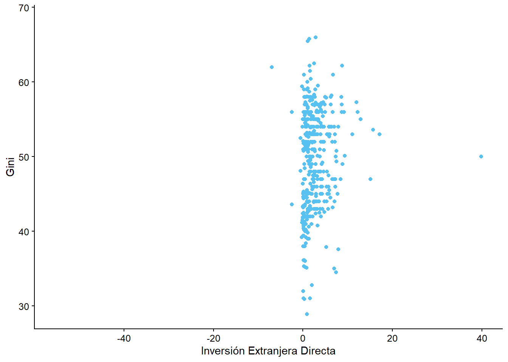
Interpretación: Es difícil ver una correlación clara entre las variables de desigualdad económica e inversión extranjera directa. Esto, debido a que los puntos están repartidos verticualmente cerca del valor 0 del eje X.
Ejercicio 5B
Utilizando los mismos datos, estima un modelo donde la variable independiente es Inversión Extranjera Directa (inversion_extranjera) y la variable dependiente es Desigualdad (gini) y exportarlo a un archivo .doc. ¿Es el efecto estadísticamente significativo?
modelo_ied <- lm(gini ~ 1 + inversion_extranjera, data = bienestar)screenreg(modelo_ied,
file = "modelo_1.doc",
custom.header = list("Gini" = 1),
custom.model.names = "Modelo 1",
custom.coef.names = c("Constante", "Inversión extranjera directa"),
custom.gof.names = c("R^2", "R^2 Ajustado", "Nro. Observaciones"),
doctype = T)| Gini | |
|---|---|
| Modelo 1 | |
| Constante | 48.75*** |
| (0.42) | |
| Inversión extranjera directa | 0.26** |
| (0.10) | |
| R^2 | 0.02 |
| R^2 Ajustado | 0.01 |
| Nro. Observaciones | 409 |
| ***p < 0.001; **p < 0.01; *p < 0.05 | |
El efecto de la inversión extranjera directa sobre el Gini es estadísticamente significativo, a un nivel de confianza de 99%. Esto implicaría que un aumento en 1% de la IED tendría como efecto el aumento de 0.26 puntos en el índice de Gini de un país.
Ejercicio 5C
Recuerda: incluir el 1 no es necesario para estimar el modelo (lo colocamos ahí sólo para recordarte que también estamos estimando la intercepción). Intente probar el modelo sin él, y verá que los resultados no cambian.
Modelo original
modelo_2 <- lm(gini ~ 1 + gasto_educ + inversion_extranjera + gasto_salud + gasto_segsocial +
poblacion + dualismo_sectorial + diversidad_etnica + pib +
factor(tipo_regimen) + bal_legislativo,
data = bienestar_no_na)Modelo sin + 1
modelo_2_v2 <- lm(gini ~ gasto_educ + inversion_extranjera + gasto_salud + gasto_segsocial +
poblacion + dualismo_sectorial + diversidad_etnica + pib +
factor(tipo_regimen) + bal_legislativo,
data = bienestar_no_na)Si vemos ambos modelos en una misma tabla notamos que todos los valores coinciden!
screenreg(list(modelo_2, modelo_2_v2),
custom.header = list("Gini" = 1:2),
custom.model.names = c("Modelo original", "Modelo sin +1"),
custom.coef.names = c("Constante", "Gasto educación", "Inversión extranjera directa", "Gasto Salud", "Gasto seguridad social", "Población joven", "Dualismo en economía", "Diversidad étnica", "PIB p/c", "Régimen democrático", "Régimen mixto", "Régimen Autoritario", "Balance poderes estado"),
custom.gof.names = c("R^2", "R^2 Ajustado", "Nro. Observaciones"))| Gini | ||
|---|---|---|
| Modelo original | Modelo sin +1 | |
| Constante | 85.94*** | 85.94*** |
| (8.73) | (8.73) | |
| Gasto educación | 1.59*** | 1.59*** |
| (0.45) | (0.45) | |
| Inversión extranjera directa | 0.24 | 0.24 |
| (0.18) | (0.18) | |
| Gasto Salud | -0.83** | -0.83** |
| (0.26) | (0.26) | |
| Gasto seguridad social | -0.83*** | -0.83*** |
| (0.20) | (0.20) | |
| Población joven | -0.93*** | -0.93*** |
| (0.17) | (0.17) | |
| Dualismo en economía | -0.17*** | -0.17*** |
| (0.03) | (0.03) | |
| Diversidad étnica | 3.68*** | 3.68*** |
| (1.04) | (1.04) | |
| PIB p/c | -0.00** | -0.00** |
| (0.00) | (0.00) | |
| Régimen democrático | -2.29 | -2.29 |
| (4.75) | (4.75) | |
| Régimen mixto | -2.90 | -2.90 |
| (4.70) | (4.70) | |
| Régimen Autoritario | -5.14 | -5.14 |
| (4.62) | (4.62) | |
| Balance poderes estado | -10.40*** | -10.40*** |
| (2.22) | (2.22) | |
| R^2 | 0.59 | 0.59 |
| R^2 Ajustado | 0.56 | 0.56 |
| Nro. Observaciones | 167 | 167 |
| ***p < 0.001; **p < 0.01; *p < 0.05 | ||
Ejercicio 5D
Exporta la tabla con ambos modelos (con y sin controles) a un archivo .doc, te esperamos.
modelo_1 <- lm(gini ~ 1 + gasto_educ, data = bienestar)
modelos <- list(modelo_1, modelo_2)screenreg(modelos,
custom.model.names = c("Modelo 1", "Modelo 2"),
custom.coef.names = c(
"Constante", "Gasto en educación", "IED",
"Gasto en salud", "Gasto en seg. social",
"Población jóven", "Dualismo en economía",
"División étnica", "PBI pc", "Reg. democrático", "Reg. mixto",
"Reg. autoritario", "Balance entre poderes"),
file = "modelos_capitulo5.doc", doctype = T)| Modelo 1 | Modelo 2 | |
|---|---|---|
| Constante | 44.81*** | 85.94*** |
| (1.02) | (8.73) | |
| Gasto en educación | 1.23*** | 1.59*** |
| (0.25) | (0.45) | |
| IED | 0.24 | |
| (0.18) | ||
| Gasto en salud | -0.83** | |
| (0.26) | ||
| Gasto en seg. social | -0.83*** | |
| (0.20) | ||
| Población jóven | -0.93*** | |
| (0.17) | ||
| Dualismo en economía | -0.17*** | |
| (0.03) | ||
| División étnica | 3.68*** | |
| (1.04) | ||
| PBI pc | -0.00** | |
| (0.00) | ||
| Reg. democrático | -2.29 | |
| (4.75) | ||
| Reg. mixto | -2.90 | |
| (4.70) | ||
| Reg. autoritario | -5.14 | |
| (4.62) | ||
| Balance entre poderes | -10.40*** | |
| (2.22) | ||
| R2 | 0.06 | 0.59 |
| Adj. R2 | 0.06 | 0.56 |
| Num. obs. | 356 | 167 |
| ***p < 0.001; **p < 0.01; *p < 0.05 | ||
Ejercicio 5E
Estime un modelo en el que excluya el gasto en salud (
gasto_salud) y el gasto en seguridad social (gasto_segsocial), y compare su capacidad explicativa con el modelo completo. De acuerdo con los resultados, ¿deberíamos excluir estas variables del modelo?
modelo_2restringido <- lm(gini ~ gasto_educ + inversion_extranjera +
poblacion + dualismo_sectorial + diversidad_etnica + pib +
factor(tipo_regimen) + bal_legislativo,
data = bienestar_no_na)
anova(modelo_2, modelo_2restringido)
## Analysis of Variance Table
##
## Model 1: gini ~ 1 + gasto_educ + inversion_extranjera + gasto_salud +
## gasto_segsocial + poblacion + dualismo_sectorial + diversidad_etnica +
## pib + factor(tipo_regimen) + bal_legislativo
## Model 2: gini ~ gasto_educ + inversion_extranjera + poblacion + dualismo_sectorial +
## diversidad_etnica + pib + factor(tipo_regimen) + bal_legislativo
## Res.Df RSS Df Sum of Sq F Pr(>F)
## 1 154 3148
## 2 156 3928 -2 -780 19.1 4e-08 ***
## ---
## Signif. codes: 0 '***' 0.001 '**' 0.01 '*' 0.05 '.' 0.1 ' ' 1screenreg(list(modelo_2, modelo_2restringido),
custom.model.names = c("Modelo 1", "Modelo 2 restringido"),
custom.coef.names = c(
"Constante", "Gasto en educación", "IED",
"Gasto en salud", "Gasto en seg. social",
"Población jóven", "Dualismo en economía",
"División étnica", "PBI pc", "Reg. democrático", "Reg. mixto",
"Reg. autoritario", "Balance entre poderes"))| Modelo 2 | Modelo 2 restringido | |
|---|---|---|
| Constante | 85.94*** | 54.43*** |
| (8.73) | (6.55) | |
| Gasto en educación | 1.59*** | 0.88 |
| (0.45) | (0.46) | |
| IED | 0.24 | 0.49* |
| (0.18) | (0.19) | |
| Gasto en salud | -0.83** | |
| (0.26) | ||
| Gasto en seg. social | -0.83*** | |
| (0.20) | ||
| Población jóven | -0.93*** | -0.28* |
| (0.17) | (0.11) | |
| Dualismo en economía | -0.17*** | -0.20*** |
| (0.03) | (0.04) | |
| División étnica | 3.68*** | 5.92*** |
| (1.04) | (1.08) | |
| PBI pc | -0.00** | -0.00 |
| (0.00) | (0.00) | |
| Reg. democrático | -2.29 | -0.77 |
| (4.75) | (5.23) | |
| Reg. mixto | -2.90 | -0.78 |
| (4.70) | (5.20) | |
| Reg. autoritario | -5.14 | -4.00 |
| (4.62) | (5.12) | |
| Balance entre poderes | -10.40*** | -7.45** |
| (2.22) | (2.40) | |
| R2 | 0.59 | 0.49 |
| Adj. R2 | 0.56 | 0.46 |
| Num. obs. | 167 | 167 |
| ***p < 0.001; **p < 0.01; *p < 0.05 | ||
Según los resultados, podemos ver que el excluir las variables del gasto en salud y en seguridad social disminuye el poder explicativo del modelo, por lo que se deberían mantener. Esto, debido a que con el comando anova se aprecia que se rechaza la hipótesis nula del test F. En la tabla se identifica que el modelo restringido tiene una bondad de ajuste menor que el modelo original, lo que implicaría que la variabilidad de la variable dependiente es explicada en menor manera que en el modelo original.
Ejercicio 5F
Antes de pasar al siguiente capítulo, haz un gráfico de dispersión de la relación entre la variable
giniy la variableinversion_extranjera. Añade el nombre del país a cada observación.
ggplot(bienestar, aes(x = inversion_extranjera, y = gini)) +
geom_point() +
labs(x = "Inversión Extranjera Directa",
y = "Gini") +
geom_label_repel(aes(label = pais))
## Warning: Removed 665 rows containing missing values (geom_point).
## Warning: Removed 665 rows containing missing values (geom_label_repel).
Podemos notar que añadir el nombre o código del país a las observaciones hace que el gráfico sea ilegible, por lo que sería mejor quedarnos con el gráfico sin etiquetas, o hacer un filtro y asignarla a algunos valores. Por ejemplo, podríamos querer ver aquellos países donde el índice de Gini es mayor a 60 y menor a 35:
ggplot(bienestar, aes(x = inversion_extranjera, y = gini)) +
geom_point() +
labs(x = "Inversión Extranjera Directa",
y = "Gini") +
geom_label_repel(data = bienestar %>% filter(gini > 60 | gini < 35),
aes(label = pais))
Para el modelo 1, añade la variable
inversion_extranjeracomo control e interpreta su coeficiente.
modelo_1_v2 <- lm(gini ~ 1 + gasto_educ + inversion_extranjera, data = bienestar)
summary(modelo_1_v2)
##
## Call:
## lm(formula = gini ~ 1 + gasto_educ + inversion_extranjera, data = bienestar)
##
## Residuals:
## Min 1Q Median 3Q Max
## -21.583 -5.392 0.601 4.726 15.961
##
## Coefficients:
## Estimate Std. Error t value Pr(>|t|)
## (Intercept) 44.173 1.022 43.22 < 2e-16 ***
## gasto_educ 1.157 0.270 4.29 2.4e-05 ***
## inversion_extranjera 0.400 0.174 2.29 0.022 *
## ---
## Signif. codes: 0 '***' 0.001 '**' 0.01 '*' 0.05 '.' 0.1 ' ' 1
##
## Residual standard error: 6.6 on 339 degrees of freedom
## (732 observations deleted due to missingness)
## Multiple R-squared: 0.094, Adjusted R-squared: 0.0887
## F-statistic: 17.6 on 2 and 339 DF, p-value: 5.41e-08En el modelo 1, la inversión extranjera tiene un coeficiente de 0.3995, y es significativa a un nivel de confianza de 95%. Esto quiere decir que, manteniendo todas las demás variables constantes, el aumentar en un 1% la inversión extranjera tendrá como efecto el aumento de aproximadamente 0.4 puntos del coeficiente Gini.
Haz las pruebas correspondientes para comprobar que no se violan las suposiciones del MCO
- Linealidad de los parámetros
ggplot(mapping = aes(x = modelo_1_v2$fitted.values, y = modelo_1_v2$residuals)) +
labs(x = "Valores predichos", y = "Residuos", title = "Prueba de linealidad en valores predichos", subtitle = "Modelo 1 con inversioón extranjera como control") +
geom_point() +
geom_hline(mapping = aes(yintercept = 0), color = "red")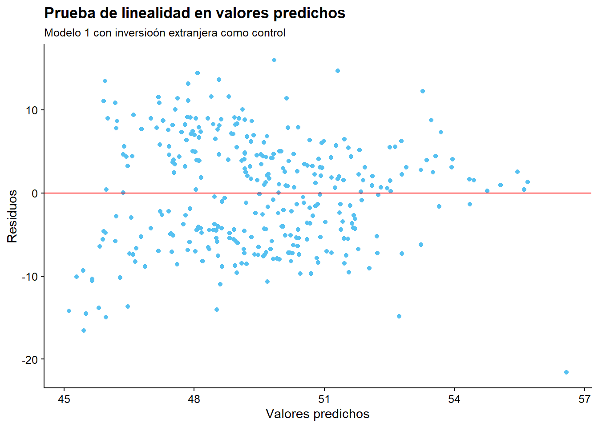
Del gráfico podemos ver que los residuos se encuentran distribuidos aleatoriamente por sobre y debajo de cero, por lo que no habría un problema de linealidad.
library(car)
crPlots(modelo_1_v2)
Se repite lo que ya se había visto en el capítulo respecto al gasto en educación. La relación entonces entre el índice de Gini y el gasto en educación podría ser cuadrática. Respecto a la inversión extranjera, se observa que si bien al principio está separada de la linea punteada, un poco más allá de 0 se alinea casi perfectamente con esta. Por esto, es posible que no deberíamos hacerle ninguna transformación a esta variable.
Pasemos a hacer el test RESET y F:
library(lmtest)
resettest(modelo_1, power = 2, type = "fitted", data = bienestar)
##
## RESET test
##
## data: modelo_1
## RESET = 9, df1 = 1, df2 = 353, p-value = 0.004Como se vio en el capítulo, se rechaza la hipótesis nula de que añadir un término cuadrático al gasto en educación no mejora la especificación del modelo.
Multicolinealidad
Primero vemos la relación entre las variables:
library(ggcorrplot)
corr_modelo1 <- bienestar %>%
select(gini, gasto_educ, inversion_extranjera) %>%
cor(use = "pairwise") %>%
round(1)
ggcorrplot(corr_modelo1, type = "lower", lab = T, show.legend = F)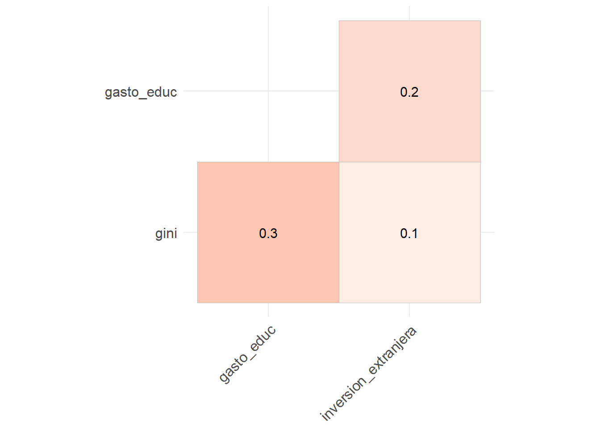
Las correlaciones son mas bien bajas, siendo positivas pero no superando 0.5. Ahora pasemos a hacer el test VIF
- Test VIF
vif(modelo_1_v2)
## gasto_educ inversion_extranjera
## 1.1 1.1
sqrt(vif(modelo_1_v2)) > 2
## gasto_educ inversion_extranjera
## FALSE FALSETanto el test VIF como la raíz cuadrada de este nos mostrarían que la varianza de ambas variables no es alta, y no habría problemas de multicolinealidad.
- Homocedasticidad
plot(modelo_1_v2, which = 1)
Los valores predichos no se distribuyen aleatoria e igualmente alrededor del eje X, por lo que se estaría violando el supuesto de homocedasticidad. La línea roja no coincide con la línea horizontal punteada, por lo que nuestro modelo presentaría heterocedasticidad.
car::residualPlots(modelo_1_v2)
## Test stat Pr(>|Test stat|)
## gasto_educ -2.52 0.012 *
## inversion_extranjera -0.99 0.322
## Tukey test -2.07 0.038 *
## ---
## Signif. codes: 0 '***' 0.001 '**' 0.01 '*' 0.05 '.' 0.1 ' ' 1
Ahora pasaremos a hacer el test estadístico de Breusch-Pagan:
bptest(modelo_1_v2, studentize = T)
##
## studentized Breusch-Pagan test
##
## data: modelo_1_v2
## BP = 18, df = 2, p-value = 1e-04Debido a que el valor p es menor a 0.05, rechazamos la hipótesis nula, por lo que el modelo 1 que incluye la IED como control presentaría heterocedasticidad.
library(lmtest)
library(sandwich)
modelo_1_v2_robust_0 <- coeftest(modelo_1_v2, vcov = vcovHC(modelo_1_v2, "HC0"))
modelo_1_v2_robust_1 <- coeftest(modelo_1_v2, vcov = vcovHC(modelo_1_v2, "HC1"))
modelo_1_v2_robust_3 <- coeftest(modelo_1_v2, vcov = vcovHC(modelo_1_v2, "HC3"))
modelos_robustos <- list(modelo_1_v2, modelo_1_v2_robust_0, modelo_1_v2_robust_1,
modelo_1_v2_robust_3)
screenreg(modelos_robustos,
custom.model.names = c("sin ES robustos",
"robustos HC0", "robustos HC1", "robustos HC3"))
##
## ===============================================================================
## sin ES robustos robustos HC0 robustos HC1 robustos HC3
## -------------------------------------------------------------------------------
## (Intercept) 44.17 *** 44.17 *** 44.17 *** 44.17 ***
## (1.02) (1.31) (1.31) (1.33)
## gasto_educ 1.16 *** 1.16 *** 1.16 *** 1.16 ***
## (0.27) (0.33) (0.33) (0.33)
## inversion_extranjera 0.40 * 0.40 * 0.40 * 0.40 *
## (0.17) (0.16) (0.16) (0.16)
## -------------------------------------------------------------------------------
## R^2 0.09
## Adj. R^2 0.09
## Num. obs. 342
## ===============================================================================
## *** p < 0.001; ** p < 0.01; * p < 0.05Tanto los coeficientes como los errores son similares, por lo que aún haciendo más exigente a los errores, igualmente en los modelos robustos de HC0 y HC1 los coeficientes siguen siendo estadísticamente significativos.
- Normalidad en distribución del error
qqPlot(modelo_1_v2$residuals)
## 596 98
## 194 54
También podemos ver que los residuos se salen de las líneas punteadas, por lo que la distribución de estos no sería normal. Veamos cómo se ve en un gráfico de densidad:
library(ggpubr)
ggdensity(modelo_1_v2$residuals, main = "Gráfico de densidad de los residuos")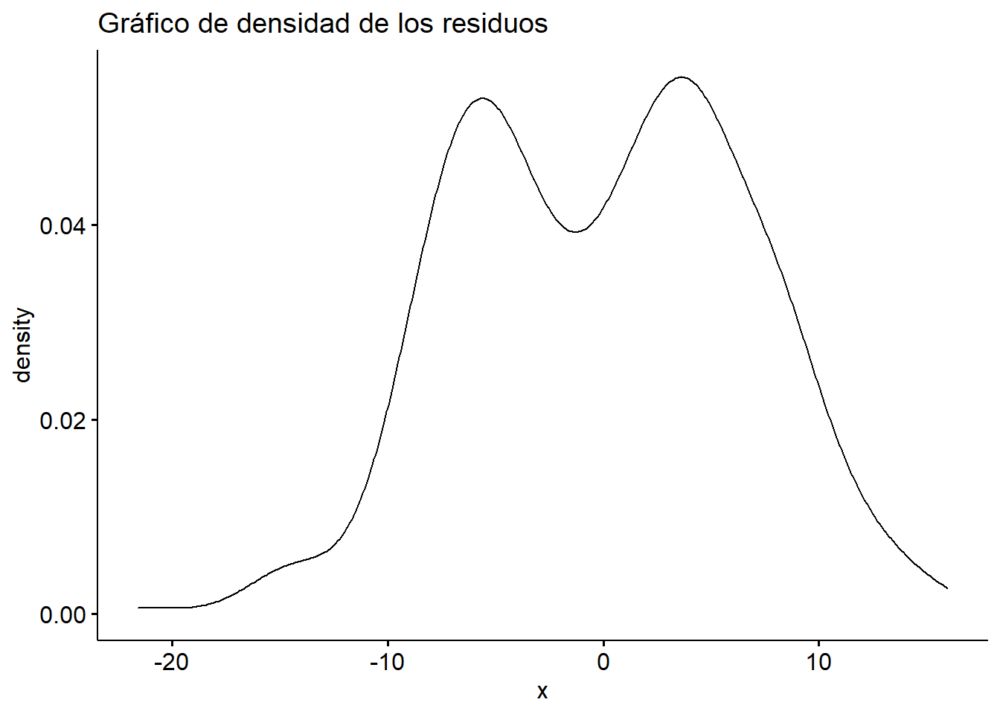
Notamos que la distribución no es normal en forma acampanada, sino bimodal, con dos peaks alrededor de los valors 5 y -5 del eje X.
En conclusión, nuestro modelo viola el supuesto de homocedasticidad y de distribución normal del error, por lo que sería útil pensar en otras variables que podrían afectar al Gini más allá del gasto en educación y la IED como variable de control.
Usando htmlreg, exporta la tabla de regresión a Word
screenreg(modelo_1_v2,
file = "modelo_1_v2.doc",
custom.header = list("Gini" = 1),
custom.model.names = "Modelo 1",
custom.coef.names = c("Constante", "Gasto educación", "Inversión extranjera directa"),
custom.gof.names = c("R^2", "R^2 Ajustado", "Nro. Observaciones"),
doctype = T)Capítulo 6: Selección de casos basada en regresiones
Paquetes y carga de datos
library(tidyverse)
library(paqueteadp)
## install.packages("broom")
library(broom)
data("bienestar")Primero crearemos el modelo:
bienestar_sinna <- bienestar %>%
drop_na(gini, gasto_educ, inversion_extranjera, gasto_salud, gasto_segsocial,
poblacion, dualismo_sectorial, diversidad_etnica, pib, tipo_regimen,
bal_legislativo, represion)
modelo_2 <- lm(gini ~ 1 + gasto_educ + inversion_extranjera + gasto_salud + gasto_segsocial +
poblacion + dualismo_sectorial + diversidad_etnica + pib + tipo_regimen +
bal_legislativo + represion,
data = bienestar_sinna)
modelo_aug <- augment(modelo_2, data = bienestar_sinna)
modelo_aug
## # A tibble: 167 x 21
## pais codigo_pais anio poblacion gini dualismo_sector~ pib
## <chr> <chr> <dbl> <dbl> <dbl> <dbl> <dbl>
## 1 Arge~ ARG 1982 30.8 40.2 9.50 7711.
## 2 Arge~ ARG 1983 30.9 40.4 8.36 7907.
## 3 Arge~ ARG 1990 30.7 43.1 7.72 6823.
## # ... with 164 more rows, and 14 more variablesEjercicio 6A
Seleccione los casos extremos para la variable independiente Inversión Extranjera Directa
inversion_extranjera.
Vemos la distribución de la variable independiente (IED)
ggplot(bienestar_sinna, aes(x = inversion_extranjera)) +
geom_histogram(binwidth = 1,color="black", fill="white") +
labs(
title = "Ingresos netos de IED como % del PIB",
x = "Inversión Extranjera Directa",
y = "Frecuencia"
)
Luego pasamos a calcular la diferencia entre el valor de cada observación y la media muestral de la IED:
mean(modelo_aug$inversion_extranjera, na.rm = T)
## [1] 2.5
modelo_aug <- modelo_aug %>%
mutate(dif_csied = abs(inversion_extranjera - mean(modelo_aug$inversion_extranjera, na.rm = T)))
modelo_aug %>%
top_n(3, dif_csied) %>%
arrange(-dif_csied) %>%
select(pais, anio, inversion_extranjera, dif_csied)
## # A tibble: 3 x 4
## pais anio inversion_extranjera dif_csied
## <chr> <dbl> <dbl> <dbl>
## 1 Panamá 1997 12.9 10.4
## 2 Chile 1999 12.0 9.52
## 3 Panamá 1998 11.0 8.52Por último graficamos:
ggplot(data = modelo_aug,
mapping = aes(x = .fitted, y = dif_csied)) +
geom_point() +
geom_text(data = modelo_aug %>% top_n(3, dif_csied),
mapping = aes(label = pais))
Tanto Panamá como Chile están bastante más arriba que la media (2.47).
Ejercicio 6B
Seleccione pares de casos más similares tomando la Inversión Extranjera Directa
inversion_extranjeracomo una variable independiente (tratamiento).
El primer paso es crear la variable dcotómica/dummy de tratamiento para la IED:
bienestar_sinna <- bienestar_sinna %>%
mutate(tratamiento_ied = if_else(inversion_extranjera > mean(inversion_extranjera), 1, 0))Luego pasamos a crear los modelos de logit y los valores aumentados:
modelo_puntuacion_propension <- glm(tratamiento_ied ~ dualismo_sectorial + gasto_educ +
pib + poblacion + diversidad_etnica + tipo_regimen +
tipo_regimen * gasto_segsocial + gasto_salud +
gasto_segsocial + bal_legislativo + represion,
data = bienestar_sinna,
family = binomial(link = logit),
na.action = na.exclude)
puntuaciones_propension <- augment(modelo_puntuacion_propension, data = bienestar_sinna,
type.predict = "response") %>%
select(puntuaciones_propension = .fitted, pais, tratamiento_ied, anio, gini)Por último, vemos los casos con puntuaciones de propensión bajas, en el grupo de países con inversiones superiores e inferiores a la media de la muestra:
puntuaciones_propension %>%
filter(tratamiento_ied == 1) %>%
arrange(puntuaciones_propension) %>%
select(pais, anio, puntuaciones_propension) %>%
slice(1:2)
## # A tibble: 2 x 3
## pais anio puntuaciones_propension
## <chr> <dbl> <dbl>
## 1 Colombia 1985 0.0678
## 2 Venezuela 1996 0.0849
puntuaciones_propension %>%
filter(tratamiento_ied == 0) %>%
arrange(puntuaciones_propension) %>%
select(pais, anio, puntuaciones_propension) %>%
slice(1:2)
## # A tibble: 2 x 3
## pais anio puntuaciones_propension
## <chr> <dbl> <dbl>
## 1 Barbados 1981 0.000254
## 2 Bahamas 1989 0.0116De acuerdo a los resultados, podríamos comparar Colombia o Venezuela con Barbados o Bahamas.
Ejercicio 6C
Estime de un modelo donde la variable dependiente es la puntuación de Gini (gini) y el gasto en educación de los independientes (gasto_educ), gasto en salud (gasto_salud), gasto en seguridad social (gasto_segsocial), PIB (pib), e inversión extranjera directa (inversion_extranjera).
library(texreg)
modelo_6c <- lm(gini ~ gasto_educ + gasto_salud + gasto_segsocial + pib + inversion_extranjera,
data = bienestar_sinna)
modelo_6c_aug <- augment(modelo_6c, data = bienestar_sinna)screenreg(modelo_6c,
custom.header = list("Gini" = 1),
custom.model.names = "Modelo 6C",
custom.coef.names = c("Constante", "Gasto educación", "Gasto salud", "Gasto seguridad social", "PIB", "Inversión extranjera directa"),
custom.gof.names = c("R^2", "R^2 Ajustado", "Nro. Observaciones"))| Gini | |
|---|---|
| Modelo 6C | |
| Constante | 53.64*** |
| (2.28) | |
| Gasto educación | 0.72 |
| (0.52) | |
| Gasto salud | -1.21*** |
| (0.30) | |
| Gasto seguridad social | -0.30* |
| (0.13) | |
| PIB | -0.00*** |
| (0.00) | |
| Inversión extranjera directa | 0.72*** |
| (0.21) | |
| R^2 | 0.30 |
| R^2 Ajustado | 0.27 |
| Nro. Observaciones | 167 |
| ***p < 0.001; **p < 0.01; *p < 0.05 | |
Seleccione los casos típicos, atípicos e influyentes para este modelo. ¿Qué variables pueden ser importantes para entender los valores atípicos?
## Casos típicos
library(ggrepel)
ggplot(data = modelo_6c_aug, mapping = aes(x = .fitted, y = .resid)) +
geom_point() +
geom_hline(aes(yintercept = 0)) +
geom_label_repel(data = modelo_6c_aug %>%
mutate(.resid_abs = abs(.resid)) %>%
top_n(-4, .resid_abs),
mapping = aes(label = pais)) +
labs(title = "Casos típicos",
y = "Residuales",
x = "Predichos")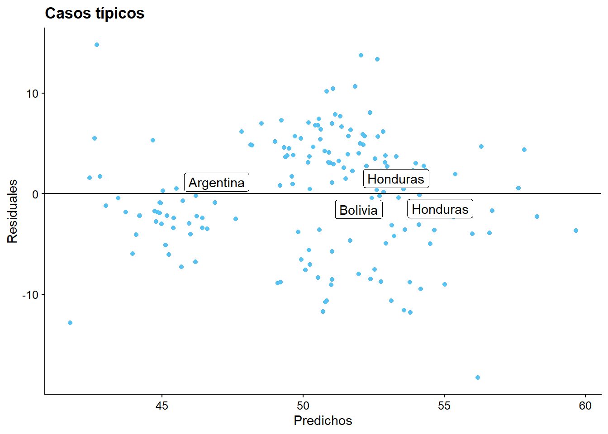
## Casos atípicos
ggplot(data = modelo_6c_aug,
mapping = aes(x = .fitted, y = .resid)) +
geom_point() +
geom_hline(aes(yintercept = 0)) +
geom_label_repel(data = modelo_6c_aug %>%
mutate(.resid_abs = abs(.resid)) %>%
top_n(4, .resid_abs),
mapping = aes(label = pais)) +
labs(title = "Casos atípicos",
y = "Residuales",
x = "Predichos")
## Casos influyentes
ggplot(data = modelo_6c_aug,
mapping = aes(x = .fitted, y = .cooksd)) +
geom_point() +
geom_label_repel(data = modelo_6c_aug %>% top_n(3, .cooksd),
mapping = aes(label = pais)) +
labs(title = "Casos influyentes",
y = "Distancia de Cook",
x = "Predichos")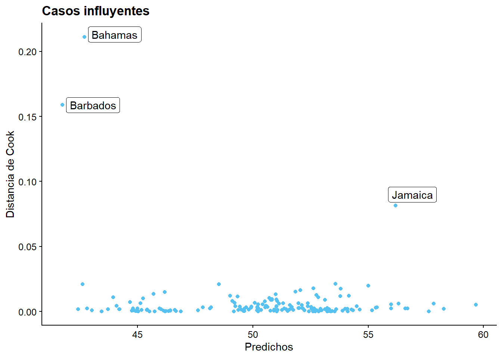
Tanto en los casos atípicos como influyentes se repiten los países de Jamaica y Barbados. Una variable que podría ser analizada es cómo influye el hecho de ser una colonia británica en el Gini.
Ahora, supongamos que su variable de interés independiente es la Inversión Extranjera Directa. Seleccione los casos extremos en x, los casos extremos en y, los casos más similares y más diferentes.
Vamos a repetir los pasos hechos en el Ejercicio 6A
ggplot(bienestar_sinna, aes(x = inversion_extranjera)) +
geom_histogram(binwidth = 1,color="black", fill="white") +
labs(
title = "Ingresos netos de IED como % del PIB",
x = "Inversión Extranjera Directa",
y = "Frecuencia"
)
## Casos extremos en x
modelo_6c_aug <- modelo_6c_aug %>%
mutate(dif_csied = abs(inversion_extranjera - mean(inversion_extranjera, na.rm = T)))
ggplot(data = modelo_6c_aug,
mapping = aes(x = .fitted, y = dif_csied)) +
geom_point() +
geom_text_repel(data = modelo_6c_aug %>% top_n(3, dif_csied),
mapping = aes(label = pais)) +
labs(title = "Casos extremos en X",
x = "Predichos")
Al igual que en el ejercicio 6A, Chile y Panamá son casos extremos en X, es decir, en la variable de inversión extranjera.
## Casos extremos en Y
modelo_6c_aug <- modelo_6c_aug %>%
mutate(dif_gini = abs(gini - mean(gini, na.rm = T)))
ggplot(data = modelo_6c_aug,
mapping = aes(x = .fitted, y = dif_gini)) +
geom_point() +
geom_text_repel(data = modelo_6c_aug %>% top_n(2, dif_gini),
mapping = aes(label = pais)) +
labs(title = "Casos extremos en Y",
x = "Predichos")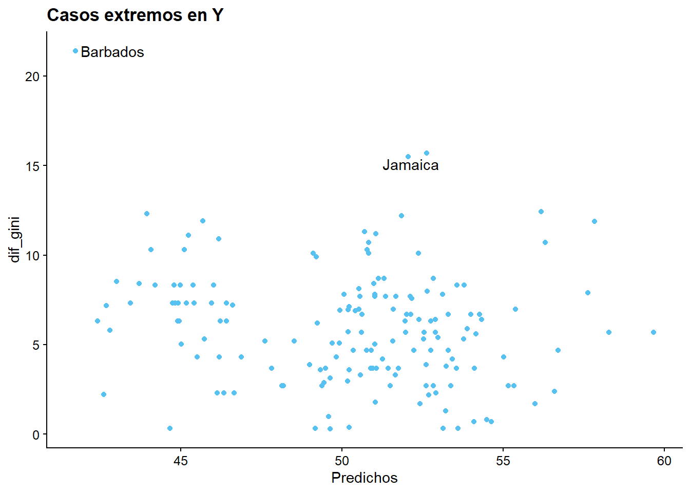
Barbados y Jamaica nuevamente aparecen como posibles casos para analizar, ya que se presentan como observaciones que tienen valores extremos en la variable dependiente del Gini.
Para los casos mas diferentes, ya creamos la variable de tratamiento de la IED en el primer paso del ejercicio 6B.
## Casos mas diferentes
lm(gini ~ gasto_educ + gasto_salud + gasto_segsocial + pib + inversion_extranjera,
data = bienestar_sinna)
##
## Call:
## lm(formula = gini ~ gasto_educ + gasto_salud + gasto_segsocial +
## pib + inversion_extranjera, data = bienestar_sinna)
##
## Coefficients:
## (Intercept) gasto_educ gasto_salud
## 53.636292 0.715726 -1.211135
## gasto_segsocial pib inversion_extranjera
## -0.302074 -0.000444 0.718265
modelo6c_puntuacion_propension <- glm(tratamiento_ied ~ gasto_educ + gasto_salud +
gasto_segsocial + pib ,
data = bienestar_sinna,
family = binomial(link = logit),
na.action = na.exclude)
puntuaciones_propension_6c <- augment(modelo6c_puntuacion_propension, data = bienestar_sinna,
type.predict = "response") %>%
select(puntuaciones_propension = .fitted, pais, tratamiento_ied, anio, gini) %>%
mutate(gini = if_else(gini > mean(gini, na.rm = T), 1, 0))Ahora pasamos a ver los casos con puntuaciones de propensión más bajas y altas:
puntuaciones_propension_6c %>%
filter(gini == 1 & tratamiento_ied == 0) %>%
arrange(puntuaciones_propension) %>%
select(pais, anio, puntuaciones_propension) %>%
slice(1:2)
## # A tibble: 2 x 3
## pais anio puntuaciones_propension
## <chr> <dbl> <dbl>
## 1 Ecuador 2000 0.113
## 2 Brasil 1986 0.120
puntuaciones_propension_6c %>%
filter(gini == 1 & tratamiento_ied == 0) %>%
arrange(-puntuaciones_propension) %>%
select(pais, anio, puntuaciones_propension) %>%
slice(1:2)
## # A tibble: 2 x 3
## pais anio puntuaciones_propension
## <chr> <dbl> <dbl>
## 1 Bolivia 1993 0.735
## 2 Panamá 1989 0.673Los resultados indican que podríamos comparar Ecuador o Brasil con Bolivia o Panamá si quisieramos ver casos muy diferentes.
Capítulo 7: Modelos de panel
Paquetes y carga de datos
library(tidyverse)
library(paqueteadp)
## install.packages("unvotes")
library(unvotes)
## install.packages("lubridate")
library(lubridate)
library(ggcorrplot)
## install.packages("plm")
library(plm)
library(lmtest)
data("bienestar")Ejercicio 7A
Usando la base de datos del capítulo de MCO (Latin America Welfare Dataset, 1960-2014, Huber et al. 2006), grafica el comportamiento del Índice de Gini (
gini_slc) en América Latina a lo largo del tiempo.
Alternativa 1: Gráfico de líneas
ggplot(data = bienestar) +
geom_line(aes(x = anio, y = gini, color = pais, linetype = pais, group = pais)) +
labs(x = "Anio",
y = "Gini", color = "", linetype = "")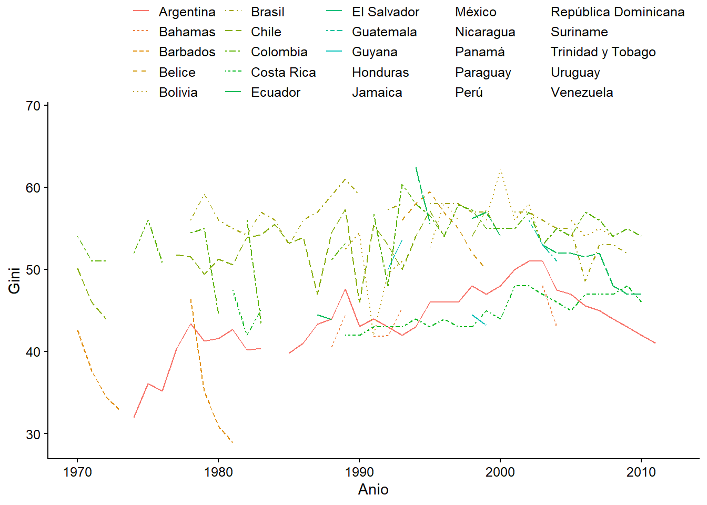
Alternativa 2: Gráfico de cajas (boxplot)
ggplot(bienestar, aes(x = factor(anio), y = gini)) +
geom_boxplot() +
scale_x_discrete(breaks = seq(1970, 2007, by = 5)) +
labs(x = "Año", y = "Gini")
Del gráfico de líneas podemos ver que el índice de Gini no es uniforme entre los países de América Latina. De hecho, hay una gran cantidad de datos perdidos, sobre todo en países caribeños y centroamericanos. Esto también se refleja en el gráfico de cajas, se puede apreciar que las cajas son bastante largas, por lo que habría gran variación entre las observaciones. Esto tiende a disminuir con el tiempo, a partir de la década de los 90 las cajas y los bigotes empiezan a ser más cortos.
Ahora que hemos visto el comportamiento del índice de Gini, pasaremos a ver nuestra variable independiente: el gasto en educación (gasto_educ). Recordemos que estamos siguiendo el ejemplo del Capítulo 5.
ggplot(bienestar, aes(x = anio, y = gasto_educ)) +
geom_line() +
facet_wrap(~pais, nrow = 5) +
labs(x = "Año", y = "Gasto en educación") +
theme(axis.text.x = element_text(angle = 45, vjust = 0.7)) #Le cambiamos el ángulo y la separación a las etiquetas del eje X para que sea más fácil leerlas
Se repite nuevamente que faltan algunos datos para los países.
Ejercicio 7B
Utilice la base de datos del capítulo de la MCO (Latin America Welfare Dataset, 1960-2014, de Evelyne Huber y John D. Stephens) para estimar un modelo de efectos fijos y otro de efectos aleatorios en el que su variable dependiente sea el índice de Gini (gini).
A continuación, realice un test de especificación de Hausman.
Modelo de efectos fijos
##Alternativa 1: crearlo manualmente con comando lm
modelo7b_manual_fe <- lm(gini ~ gasto_educ + factor(pais), data = bienestar)
summary(modelo7b_manual_fe)
##
## Call:
## lm(formula = gini ~ gasto_educ + factor(pais), data = bienestar)
##
## Residuals:
## Min 1Q Median 3Q Max
## -18.340 -2.101 -0.092 2.262 20.783
##
## Coefficients:
## Estimate Std. Error t value Pr(>|t|)
## (Intercept) 41.030 1.120 36.62 < 2e-16 ***
## gasto_educ 0.645 0.238 2.70 0.00720 **
## factor(pais)Bahamas 3.516 1.500 2.34 0.01963 *
## factor(pais)Barbados -6.163 1.803 -3.42 0.00071 ***
## [ reached getOption("max.print") -- omitted 18 rows ]
## ---
## Signif. codes: 0 '***' 0.001 '**' 0.01 '*' 0.05 '.' 0.1 ' ' 1
##
## Residual standard error: 4.6 on 334 degrees of freedom
## (718 observations deleted due to missingness)
## Multiple R-squared: 0.588, Adjusted R-squared: 0.562
## F-statistic: 22.7 on 21 and 334 DF, p-value: <2e-16
##Alternativa 2: crear el modelo ocupando plm
modelo7b_fe <- plm(gini ~ gasto_educ, data = bienestar, index = c("pais", "anio"))
summary(modelo7b_fe)
## Oneway (individual) effect Within Model
##
## Call:
## plm(formula = gini ~ gasto_educ, data = bienestar, index = c("pais",
## "anio"))
##
## Unbalanced Panel: n = 21, T = 1-34, N = 356
##
## Residuals:
## Min. 1st Qu. Median 3rd Qu. Max.
## -18.3401 -2.1010 -0.0915 2.2625 20.7830
##
## Coefficients:
## Estimate Std. Error t-value Pr(>|t|)
## gasto_educ 0.645 0.238 2.7 0.0072 **
## ---
## Signif. codes: 0 '***' 0.001 '**' 0.01 '*' 0.05 '.' 0.1 ' ' 1
##
## Total Sum of Squares: 7150
## Residual Sum of Squares: 7000
## R-Squared: 0.0214
## Adj. R-Squared: -0.0401
## F-statistic: 7.31195 on 1 and 334 DF, p-value: 0.0072Modelo de efectos aleatorios
modelo7b_re <- plm(gini ~ gasto_educ, data = bienestar, index = c("pais", "anio"),
model = "random")
summary(modelo7b_re)
## Oneway (individual) effect Random Effect Model
## (Swamy-Arora's transformation)
##
## Call:
## plm(formula = gini ~ gasto_educ, data = bienestar, model = "random",
## index = c("pais", "anio"))
##
## Unbalanced Panel: n = 21, T = 1-34, N = 356
##
## Effects:
## var std.dev share
## idiosyncratic 20.96 4.58 0.45
## individual 25.82 5.08 0.55
## theta:
## Min. 1st Qu. Median Mean 3rd Qu. Max.
## 0.33 0.78 0.82 0.80 0.84 0.85
##
## Residuals:
## Min. 1st Qu. Median Mean 3rd Qu. Max.
## -17.97 -2.41 0.30 0.03 2.54 20.02
##
## Coefficients:
## Estimate Std. Error z-value Pr(>|z|)
## (Intercept) 46.953 1.483 31.67 <2e-16 ***
## gasto_educ 0.654 0.230 2.85 0.0044 **
## ---
## Signif. codes: 0 '***' 0.001 '**' 0.01 '*' 0.05 '.' 0.1 ' ' 1
##
## Total Sum of Squares: 10500
## Residual Sum of Squares: 7510
## R-Squared: 0.288
## Adj. R-Squared: 0.286
## Chisq: 8.09928 on 1 DF, p-value: 0.00443Test de Hausman
phtest(modelo7b_fe, modelo7b_re)
##
## Hausman Test
##
## data: gini ~ gasto_educ
## chisq = 0.02, df = 1, p-value = 0.9
## alternative hypothesis: one model is inconsistentViendo el valor-p, no podemos rechazar la hipótesis nula de que los efectos fijos está siendo modelados adecuadamente, por lo que deberíamos ocupar el modelo de efectos aleatorios.
Ejercicio 7C
Utiliza el Latin America Welfare Dataset para crear variables rezagadas en t-1 y t-10 del Índice Gini (
gini).
Incorpore ambas variables en tu modelo y diagnostica las raíces unitarias.
NOTA: El comando para hacer el test de raíces unitarias no funciona bien cuando hay valores perdidos, por lo que no presentamos la respuesta de este ejercicio.
Tests para detectar raíces unitarias
##Test de Lavin et al. (2002)
purtest(gini ~ 1, data = bienestar,
index = c("pais", "anio"), pmax = 10, test = "levinlin",
lags = "AIC", exo = "intercept")Cuando ejecutamos lo anterior nos da error, por lo que filtraremos la base para no tener valores perdidos en la variable dependiente (puedes revisar el capítulo 5, en que se realiza esta operación):
bienestar_sin_na_ejercicio7 <- bienestar %>%
drop_na(gini, gasto_educ) %>%
ungroup()
## purtest(gini ~ 1, data = bienestar_sin_na_ejercicio7,
## index = c("pais", "anio"), pmax = 5, test = "ips",
## lags = "AIC", exo = "intercept")
## purtest(gini ~ 1, data = bienestar_sin_na_ejercicio7,
## index = c("pais", "anio"), pmax = 10, test = "levinlin",
## lags = "AIC", exo = "intercept")
## purtest(gasto_educ ~ 1, data = bienestar_sin_na_ejercicio7,
## index = c("pais", "anio"), pmax = 10, test = "levinlin",
## lags = "AIC", exo = "intercept")Creación de variables rezagadas (lagged)
bienestar_sin_na_ejercicio7 <- bienestar_sin_na_ejercicio7 %>%
arrange(pais, anio) %>%
group_by(pais) %>%
mutate(gini_lag1 = dplyr::lag(gini, 1),
gini_lag10 = dplyr::lag(gini, 10),
gasto_educ_lag1 = dplyr::lag(gasto_educ, 1),
gasto_educ_lag10 = dplyr::lag(gasto_educ, 10)) %>%
ungroup()Estimación de modelo con variables rezagadas
##Modelo dinámico
modelo7c_lag <- plm(gini ~ gini_lag1 + gini_lag10 + gasto_educ,
data = bienestar_sin_na_ejercicio7, index = c("pais", "anio"),
model = "random")
summary(modelo7c_lag)
## Oneway (individual) effect Random Effect Model
## (Swamy-Arora's transformation)
##
## Call:
## plm(formula = gini ~ gini_lag1 + gini_lag10 + gasto_educ, data = bienestar_sin_na_ejercicio7,
## model = "random", index = c("pais", "anio"))
##
## Unbalanced Panel: n = 16, T = 1-24, N = 171
##
## Effects:
## var std.dev share
## idiosyncratic 14.67 3.83 1
## individual 0.00 0.00 0
## theta:
## Min. 1st Qu. Median Mean 3rd Qu. Max.
## 0 0 0 0 0 0
##
## Residuals:
## Min. 1st Qu. Median 3rd Qu. Max.
## -13.0907 -1.9174 -0.0954 2.0603 19.8746
##
## Coefficients:
## Estimate Std. Error z-value Pr(>|z|)
## (Intercept) 11.5534 2.7153 4.25 2.1e-05 ***
## gini_lag1 0.5068 0.0641 7.90 2.7e-15 ***
## gini_lag10 0.2661 0.0551 4.83 1.4e-06 ***
## gasto_educ 0.0298 0.2820 0.11 0.92
## ---
## Signif. codes: 0 '***' 0.001 '**' 0.01 '*' 0.05 '.' 0.1 ' ' 1
##
## Total Sum of Squares: 6590
## Residual Sum of Squares: 2920
## R-Squared: 0.556
## Adj. R-Squared: 0.548
## Chisq: 209.512 on 3 DF, p-value: <2e-16Al estimar el modelo dinámico con la variable de Gini rezagada en t-1 y t-10 vemos que el coeficiente de gasto en educación pierde significancia.
Pasemos a hacer el test Wooldridge de errores AR(1)
## pwartest(modelo7c_lag)Ejercicio 7D
En el modelo que estimaste en el ejercicio anterior, calcula los errores estándar corregidos para panel.
coeftest(modelo7c_lag, vcov. = function(x){vcovHC(x, type = "sss")})
##
## t test of coefficients:
##
## Estimate Std. Error t value Pr(>|t|)
## (Intercept) 11.5534 2.9297 3.94 0.00012 ***
## gini_lag1 0.5068 0.0894 5.67 6.1e-08 ***
## gini_lag10 0.2661 0.0470 5.66 6.5e-08 ***
## gasto_educ 0.0298 0.3059 0.10 0.92250
## ---
## Signif. codes: 0 '***' 0.001 '**' 0.01 '*' 0.05 '.' 0.1 ' ' 1
## coeftest(modelo7c_lag, vcov. = NULL)
summary(modelo7c_lag)
## Oneway (individual) effect Random Effect Model
## (Swamy-Arora's transformation)
##
## Call:
## plm(formula = gini ~ gini_lag1 + gini_lag10 + gasto_educ, data = bienestar_sin_na_ejercicio7,
## model = "random", index = c("pais", "anio"))
##
## Unbalanced Panel: n = 16, T = 1-24, N = 171
##
## Effects:
## var std.dev share
## idiosyncratic 14.67 3.83 1
## individual 0.00 0.00 0
## theta:
## Min. 1st Qu. Median Mean 3rd Qu. Max.
## 0 0 0 0 0 0
##
## Residuals:
## Min. 1st Qu. Median 3rd Qu. Max.
## -13.0907 -1.9174 -0.0954 2.0603 19.8746
##
## Coefficients:
## Estimate Std. Error z-value Pr(>|z|)
## (Intercept) 11.5534 2.7153 4.25 2.1e-05 ***
## gini_lag1 0.5068 0.0641 7.90 2.7e-15 ***
## gini_lag10 0.2661 0.0551 4.83 1.4e-06 ***
## gasto_educ 0.0298 0.2820 0.11 0.92
## ---
## Signif. codes: 0 '***' 0.001 '**' 0.01 '*' 0.05 '.' 0.1 ' ' 1
##
## Total Sum of Squares: 6590
## Residual Sum of Squares: 2920
## R-Squared: 0.556
## Adj. R-Squared: 0.548
## Chisq: 209.512 on 3 DF, p-value: <2e-16summary(modelo7c_lag)
## Oneway (individual) effect Random Effect Model
## (Swamy-Arora's transformation)
##
## Call:
## plm(formula = gini ~ gini_lag1 + gini_lag10 + gasto_educ, data = bienestar_sin_na_ejercicio7,
## model = "random", index = c("pais", "anio"))
##
## Unbalanced Panel: n = 16, T = 1-24, N = 171
##
## Effects:
## var std.dev share
## idiosyncratic 14.67 3.83 1
## individual 0.00 0.00 0
## theta:
## Min. 1st Qu. Median Mean 3rd Qu. Max.
## 0 0 0 0 0 0
##
## Residuals:
## Min. 1st Qu. Median 3rd Qu. Max.
## -13.0907 -1.9174 -0.0954 2.0603 19.8746
##
## Coefficients:
## Estimate Std. Error z-value Pr(>|z|)
## (Intercept) 11.5534 2.7153 4.25 2.1e-05 ***
## gini_lag1 0.5068 0.0641 7.90 2.7e-15 ***
## gini_lag10 0.2661 0.0551 4.83 1.4e-06 ***
## gasto_educ 0.0298 0.2820 0.11 0.92
## ---
## Signif. codes: 0 '***' 0.001 '**' 0.01 '*' 0.05 '.' 0.1 ' ' 1
##
## Total Sum of Squares: 6590
## Residual Sum of Squares: 2920
## R-Squared: 0.556
## Adj. R-Squared: 0.548
## Chisq: 209.512 on 3 DF, p-value: <2e-16coeftest(modelo7c_lag, vcov = vcovBK, type = "HC1", cluster = "time")
##
## t test of coefficients:
##
## Estimate Std. Error t value Pr(>|t|)
## (Intercept) 11.5534 3.1098 3.72 0.00028 ***
## gini_lag1 0.5068 0.0979 5.18 6.4e-07 ***
## gini_lag10 0.2661 0.0778 3.42 0.00078 ***
## gasto_educ 0.0298 0.2737 0.11 0.91342
## ---
## Signif. codes: 0 '***' 0.001 '**' 0.01 '*' 0.05 '.' 0.1 ' ' 1Capítulo 8: Modelos logísticos
Paquetes y carga de datos
library(tidyverse)
library(paqueteadp)
## install.packages("ggcorrplot")
library(ggcorrplot)
## install.packages("margins")
library(margins)
## install.packages("prediction")
library(prediction)
library(texreg)
## install.packages("jtools")
library(jtools)
library(skimr)
## install.packages("pscl")
library(pscl)
## install.packages("DescTools")
library(DescTools)
library(broom)
## install.packages("plotROC")
library(plotROC)
## install.packages("separationplot")
library(separationplot)Ejercicio 8A
Tomate un minuto para hacer un ejercicio antes de continuar.
- Abre la base de datos
latinobarometrodel paquete del libro: data (latinobarometro). Esta es una encuesta de 2018 de la opinión pública latinoamericana sobre temas políticos.
data(latinobarometro)
latinobarometro
## pais edad ideol ingresos educ pos_socioec pro_dem
## 1 32 46 4 3 8 4 0
## 2 32 79 5 3 8 3 1
## [ reached 'max' / getOption("max.print") -- omitted 14473 rows ]
- La variable
pro_demes 1 si la persona cree que la democracia es, a pesar de sus problemas, la mejor forma de gobierno existente. Calcula cuánto cambia la probabilidad de que esta respuesta sea 1 dependiendo de los años de educación del encuestado (educ).
modelo_8a <- glm(pro_dem ~ educ,
data = latinobarometro,
family = binomial("logit"))
summary(modelo_8a)
##
## Call:
## glm(formula = pro_dem ~ educ, family = binomial("logit"), data = latinobarometro)
##
## Deviance Residuals:
## Min 1Q Median 3Q Max
## -1.677 -1.423 0.806 0.887 1.084
##
## Coefficients:
## Estimate Std. Error z value Pr(>|z|)
## (Intercept) 0.1671 0.0464 3.6 0.00031 ***
## educ 0.0564 0.0042 13.4 < 2e-16 ***
## ---
## Signif. codes: 0 '***' 0.001 '**' 0.01 '*' 0.05 '.' 0.1 ' ' 1
##
## (Dispersion parameter for binomial family taken to be 1)
##
## Null deviance: 18163 on 14474 degrees of freedom
## Residual deviance: 17982 on 14473 degrees of freedom
## AIC: 17986
##
## Number of Fisher Scoring iterations: 4El modelo binomial nos indica que la variable educ es estadísticamente significativa con un valor p menor a 2.2e-16 para explicar los sentimientos positivos hacia la democracia. Debido a que el coeficiente es positivo, mayor educación llevaría a mejores visiones de la democracia. Sin embargo, es importante recalcar que el coeficiente es bastante pequeño (0.05), por lo que el efecto no es muy grande.
- ¿Cuál es el odds ratio de un año más de educación? ¿En qué país es mayor el efecto, en Brasil o en México?
Recordemos cómo calcular el odds ratio:
$$ ln ({p p-1})=_0 + _1 x_1
$$
$$ = {e^{_0 + _1 x_1} + e^{_0 + _1 x_1}}
$$
Ahora calculamos el primer \(\hat{p}\) para \(x=1\) y \(x = 2\). Si reemplazamos con los valores calculados del modelo:
\[ \hat{p_1} = {e^{0.167 + 0.056*1}\over 1 + e^{{0.167 + 0.056*1}}} \]
\[ \hat{p_1} = {e^{0.223}\over 1+e^{0.223}} \] \[\hat{p_1} = {1.25 \over 1+1.25} = 0.556 \]
\[ \hat{p_2} = {e^{0.167 + 0.056*2}\over 1 + e^{{0.167 + 0.056*2}}} \]
\[ \hat{p_2} = {e^{0.279}\over 1+e^{0.279}} \] \[ \hat{p_2}= {1.32\over 1 + 1.32} = 0.569 \]
Ya calculamos las probabilidades, ahora calculemos los odds ratio:
\[ {0.556 \over 0.569} = 0.977\]
El resultado es menor a 1, por lo que el cambio entre tener un año más de educación y estar a favor de la democracia es negativo.
¿En qué país es mayor el efecto, en Brasil o en México?
Ahora bien, para calcular la diferencia entre México y Brasil debemos obtener los promedios de años de eduación para ambos países (el capítulo 2 de este libro hace una buena introducción a cómo utilizar las funciones de dplyr para el manejo de datos):
unique(latinobarometro$pais)
## [1] 32 68 76 170 188 152 218 222 320 340 484 558 591 600 604 214 858
## [18] 862
latinobarometro %>%
filter(pais %in% c(76, 484)) %>%
group_by(pais) %>%
summarise(mean_educ = mean(educ))
## # A tibble: 2 x 2
## pais mean_educ
## <int> <dbl>
## 1 76 9.89
## 2 484 9.64Ahora ocuparemos estos promedios en vez de la \(x\) en la fórmula para obtener \(\hat{p}\):
\[ \hat{p}_B = {e^{0.167 + 0.056*9.885}\over 1 + e^{{0.167 + 0.056*9.885}}} \]
\[ \hat{p}_B = {e^{0.72}\over 1 + e^{{0.72}}} = {2.054 \over 1+2.054} = 0.673 \]
\[ \hat{p}_M = {e^{0.167 + 0.056*9.638}\over 1 + e^{{0.167 + 0.056*9.638}}} \]
\[ \hat{p}_M = {e^{0.707}\over 1 + e^{{0.707}}} = {2.028 \over 1+2.028} = 0.669 \] \[ {0.673 \over 0.669} = 1.006\]
El odds ratio es ligeramente superior a uno, por lo que nos indicaría que hay un cambio positivo entre Brasil y México. El resultado de 1.006 nos dice que al comparar Brasil con México, en el primer país es 0.6% más probable que las personas tengan sentimientos más positivos a la democracia que en México.
Ejercicio 8B
Usando la base de datos del Latinobarometro, escoge tres variables que creas que pueden predecir
pro_deme interpreta el modelo consummary. Si te atreves, crea tablas contexreg. Las variables disponibles son:edad(edad del encuestado),ideol(donde 1 es la extrema izquierda y 10 la extrema derecha),educ(años de educación del encuestado) ypos_socioec(1, muy bueno - 5, muy malo).
modelo_8b <- glm(pro_dem ~ educ + ingresos + pos_socioec,
data = latinobarometro,
family = binomial("logit"))
summary(modelo_8b)
##
## Call:
## glm(formula = pro_dem ~ educ + ingresos + pos_socioec, family = binomial("logit"),
## data = latinobarometro)
##
## Deviance Residuals:
## Min 1Q Median 3Q Max
## -1.775 -1.394 0.803 0.891 1.197
##
## Coefficients:
## Estimate Std. Error z value Pr(>|z|)
## (Intercept) 0.73022 0.09504 7.68 1.6e-14 ***
## educ 0.04720 0.00444 10.64 < 2e-16 ***
## ingresos -0.11905 0.02134 -5.58 2.4e-08 ***
## pos_socioec -0.06938 0.02275 -3.05 0.0023 **
## ---
## Signif. codes: 0 '***' 0.001 '**' 0.01 '*' 0.05 '.' 0.1 ' ' 1
##
## (Dispersion parameter for binomial family taken to be 1)
##
## Null deviance: 18163 on 14474 degrees of freedom
## Residual deviance: 17931 on 14471 degrees of freedom
## AIC: 17939
##
## Number of Fisher Scoring iterations: 4
tabla8b <- htmlreg(modelo_8b,
custom.model.names = c("Modelo 1"),
custom.coef.names = c("Intercepto",
"Educación",
"Ingresos",
"Posición Socioeconómica"),
override.coef = exp(coef(modelo_8b)),
override.se = odds_se(modelo_8b),
override.pvalues = odds_pvalues(modelo_8b),
omit.coef = "Inter")
htmltools::HTML(tabla8b)| Modelo 1 | |
|---|---|
| Educación | 1.05*** |
| (0.00) | |
| Ingresos | 0.89*** |
| (0.02) | |
| Posición Socioeconómica | 0.93*** |
| (0.02) | |
| AIC | 17939.27 |
| BIC | 17969.59 |
| Log Likelihood | -8965.63 |
| Deviance | 17931.27 |
| Num. obs. | 14475 |
| ***p < 0.001; **p < 0.01; *p < 0.05 | |
Ejercicio 8C
Con las regresiones que has corrido usando los datos del Latinobarometro, crea tres gráficos para visualizar los efectos, ya sean probabilidades predichas, efectos marginales o coeficientes expresados como odds ratios. ¿Sus hallazgos tienen una significancia sustantiva?
Probabilidades predichas para modelo 8B
cdat <- cplot(modelo_8b, "pos_socioec", what = "prediction",
main = "Pr(Pro Democracia)", draw = F)
ggplot(cdat, aes(x = xvals)) +
geom_line(aes(y = yvals)) +
geom_line(aes(y = upper), linetype = 2)+
geom_line(aes(y = lower), linetype = 2) +
geom_hline(yintercept = 0) +
labs(title = "Pr. Pro Democracia",
x = "Posición Socioeconómica", y = "Prob. predicha")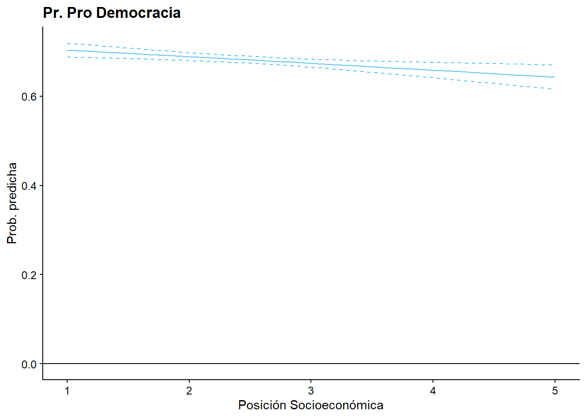
Efectos marginales para modelo 8A
marginal_ef <- margins(modelo_8a)
plot(marginal_ef,
labels = c("Educación"),
ylab = "AME")
Odds ratios
## install.packages("ggstance")
## install.packages("huxtable")
## install.packages("broom.mixed")
nombres_modelos <- c("Modelo 8A", "Modelo 8B")
odds_ratios <- plot_summs(modelo_8a, modelo_8b,
exp=T,
scale = F,
inner_ci_level = .9,
coefs = c("Educación" = "educ",
"Ingresos" = "ingresos",
"Posición Socioeconómica" = "pos_socioec"),
model.names = nombres_modelos)
odds_ratios + labs(x = "Coeficientes exponenciados", y = NULL)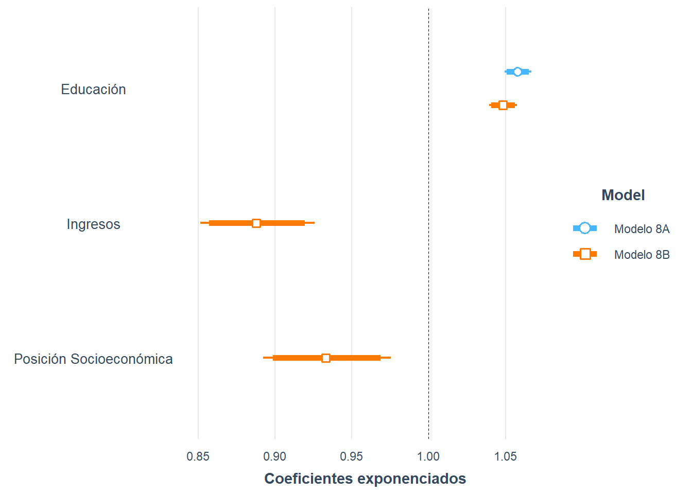
La educación parece ser un factor importante en la visión positiva de la democracia.
Ejercicio 8D
- Usa la base de datos latinobarometro del paquete del libro:
data(latinobarometro).
- La variable
pro_demasume 1 si la persona cree que la democracia es, a pesar de sus problemas, la mejor forma de gobierno existente. Dependiendo de los años de educación del encuestadoeduc, calcula cuánto cambia la probabilidad de que esta respuesta sea 1.
- Estima un modelo que prediga, lo mejor que puedas, la variable dependiente.
- Traza la curva ROC del modelo.
Este ejercicio es muy parecido al 8A, por lo que se procederá a ilustrar la curva ROC del modelo 8A:
pred_modelo_8a <- bind_rows(augment(modelo_8a, response.type = "pred") %>%
mutate(model = "Modelo 1"))
roc <- ggplot(pred_modelo_8a, aes(d = pro_dem,
m = .fitted,
color = model)) +
geom_roc(n.cuts = 0) +
geom_abline(slope = 1) +
labs(x = "1 - especificidad", y = "Sensibilidad")
roc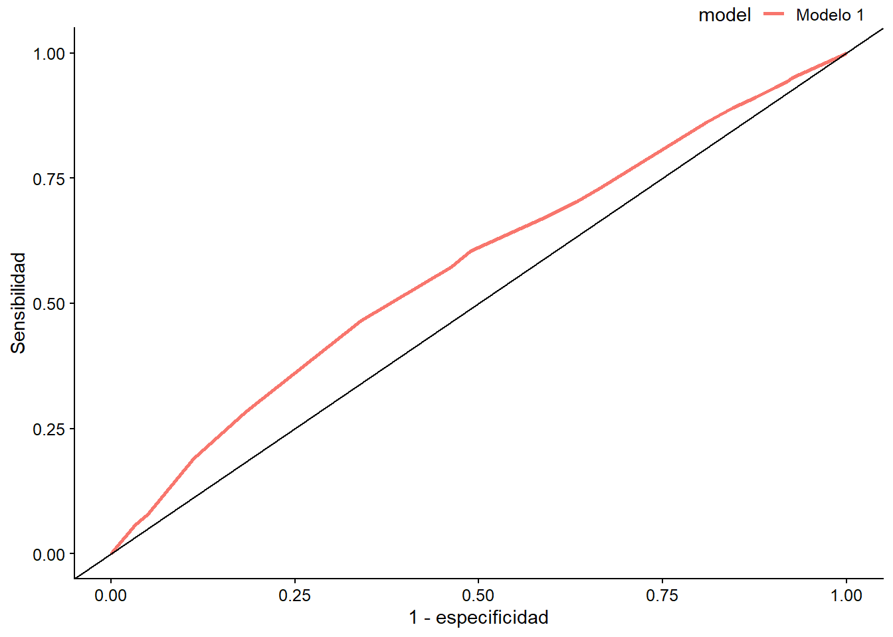
Ejercicio 8E
- Añade dos variables independientes al modelo 3 que revisamos en el capítulo e interpreta los coeficientes como odds ratios.
- Gráfica estos coeficientes usando
ggplot2.
- Diagnostica el ajuste del modelo con un ROC y un plot de separación.
data("quiebre_democracia")
modelo_3_cap8 <- glm(quiebre_democracia ~ poder_presid + edad_regimen +
calidad_democracia + crecim_10a + gini,
data = quiebre_democracia,
family = binomial("logit"))
## Warning: glm.fit: algorithm did not converge
## Warning: glm.fit: fitted probabilities numerically 0 or 1 occurred
summary(modelo_3_cap8)
##
## Call:
## glm(formula = quiebre_democracia ~ poder_presid + edad_regimen +
## calidad_democracia + crecim_10a + gini, family = binomial("logit"),
## data = quiebre_democracia)
##
## Deviance Residuals:
## Min 1Q Median 3Q Max
## -8.97e-05 -2.00e-08 -2.00e-08 -2.00e-08 7.65e-05
##
## Coefficients:
## Estimate Std. Error z value Pr(>|z|)
## (Intercept) 3.22e+00 7.87e+04 0 1
## poder_presid 2.65e+00 2.32e+03 0 1
## edad_regimen 7.75e-01 7.73e+02 0 1
## calidad_democracia -2.80e+01 6.31e+03 0 1
## crecim_10a -9.64e+01 3.98e+05 0 1
## [ reached getOption("max.print") -- omitted 1 row ]
##
## (Dispersion parameter for binomial family taken to be 1)
##
## Null deviance: 6.2000e+01 on 389 degrees of freedom
## Residual deviance: 4.0353e-08 on 384 degrees of freedom
## (1826 observations deleted due to missingness)
## AIC: 12
##
## Number of Fisher Scoring iterations: 25
screenreg(modelo_3_cap8)
##
## ===============================
## Model 1
## -------------------------------
## (Intercept) 3.22
## (78662.79)
## poder_presid 2.65
## (2316.07)
## edad_regimen 0.78
## (773.07)
## calidad_democracia -27.95
## (6311.39)
## crecim_10a -96.35
## (397585.34)
## gini 1.33
## (1129.55)
## -------------------------------
## AIC 12.00
## BIC 35.80
## Log Likelihood -0.00
## Deviance 0.00
## Num. obs. 390
## ===============================
## *** p < 0.001; ** p < 0.01; * p < 0.05
tabla8d <- htmlreg(modelo_3_cap8,
custom.model.names = c("Modelo 3 Modificado"),
custom.coef.names = c("Poder Presidencial",
"Edad Régimen",
"Calidad democracia",
"Crecimiento 10 años",
"Gini"),
override.coef = exp(coef(modelo_3_cap8)),
override.se = odds_se(modelo_3_cap8),
override.pvalues = odds_pvalues(modelo_3_cap8),
omit.coef = "Inter")
htmltools::HTML(tabla8d)| Modelo 3 Modificado | |
|---|---|
| Poder Presidencial | 14.13 |
| (32723.42) | |
| Edad Régimen | 2.17 |
| (1678.06) | |
| Calidad democracia | 0.00 |
| (0.00) | |
| Crecimiento 10 años | 0.00 |
| (0.00) | |
| Gini | 3.80 |
| (4288.83) | |
| AIC | 12.00 |
| BIC | 35.80 |
| Log Likelihood | -0.00 |
| Deviance | 0.00 |
| Num. obs. | 390 |
| ***p < 0.001; **p < 0.01; *p < 0.05 | |
Al Modelo 3 del capítulo 8 le agregamos las variables de crecimiento económico en los últimos 10 años y el coeficiente Gini. Ninguna de las variables es estadísticamente significativa.
Capítulo 9: Modelos de supervivencia
Paquetes y carga de datos
library(tidyverse)
library(paqueteadp)
library(skimr)
## install.packages("countrycode")
library(countrycode)
## install.packages("ggalt")
library(ggalt)
## install.packages("survival")
library(survival)
## install.packages("survminer")
library(survminer)
library(texreg)
data("quiebre_democracia")Ejercicio 9A
Tómese un minuto para hacer un ejercicio antes de continuar. En el capítulo anterior utilizamos la base de datos Democracies and Dictatorships in Latin America: Emergence, Survival, and Fall (Mainwaring and Pérez-Liñán 2013). Utiliza la base de datos para ver si está lista para ser usada con modelos de supervivencia o si necesitas transformarla.
skim(quiebre_democracia)| Name | quiebre_democracia |
| Number of rows | 2216 |
| Number of columns | 11 |
| _______________________ | |
| Column type frequency: | |
| character | 2 |
| numeric | 9 |
| ________________________ | |
| Group variables | None |
Variable type: character
| skim_variable | n_missing | complete_rate | min | max | empty | n_unique | whitespace |
|---|---|---|---|---|---|---|---|
| pais_nombre | 0 | 1 | 4 | 11 | 0 | 20 | 0 |
| presidente_nombre | 0 | 1 | 10 | 216 | 0 | 540 | 0 |
Variable type: numeric
| skim_variable | n_missing | complete_rate | mean | sd | p0 | p25 | p50 | p75 | p100 | hist |
|---|---|---|---|---|---|---|---|---|---|---|
| anio | 0 | 1.00 | 1955.10 | 32.00 | 1900.00 | 1927.00 | 1955.00 | 1983.00 | 2010.00 | ▇▇▇▇▇ |
| quiebre_democracia | 1268 | 0.43 | 0.05 | 0.21 | 0.00 | 0.00 | 0.00 | 0.00 | 1.00 | ▇▁▁▁▁ |
| edad_regimen | 896 | 0.60 | 15.37 | 12.44 | 1.00 | 5.00 | 12.00 | 22.00 | 61.00 | ▇▅▂▁▁ |
| calidad_democracia | 1436 | 0.35 | 7.16 | 3.15 | 0.00 | 5.00 | 8.00 | 9.00 | 12.00 | ▃▃▆▇▆ |
| crecim_10a | 1 | 1.00 | 0.02 | 0.03 | -0.14 | 0.01 | 0.02 | 0.04 | 0.14 | ▁▁▇▃▁ |
| x_miner_petrol | 1508 | 0.32 | 0.05 | 0.07 | 0.00 | 0.00 | 0.01 | 0.07 | 0.44 | ▇▁▁▁▁ |
| gini | 1551 | 0.30 | 51.18 | 6.37 | 29.96 | 46.48 | 51.85 | 56.50 | 67.83 | ▁▃▇▇▁ |
| poder_presid | 1054 | 0.52 | 16.33 | 3.30 | 5.00 | 15.00 | 16.00 | 18.00 | 25.00 | ▁▃▇▅▁ |
| us_t | 60 | 0.97 | 0.40 | 0.33 | 0.00 | 0.12 | 0.25 | 0.75 | 1.00 | ▇▆▂▃▅ |
En la base quiebre_democracia encontramos observaciones desde 1900 hasta 2010. En este ejercicio se hará el análisis de supervivencia en base a la ocurrencia de un quiebre democrático (quiebre_democracia). Si vemos en conjunto las variables de quiebre_democracia y edad_regimen, teóricamente debería cumplirse que cuando quiebre_democracia == 1, el año siguiente debería empezar de nuevo la cuenta de edad_regimen. No obstante, esto no se cumple para todas las observaciones. También podemos observar que para los países tenemos el caso que nacen y mueren más de alguna vez.
Ya que durante el capítulo no se vió la probabilidad condicionada de morir por segunda vez reduciremos la base a un período más limitado de tiempo. Autores como Smith (Democracy in Latin America. Political Change in Comparative Perspective, 2005) y Mainwaring y Pérez-Liñán (Democracies and Dictatorships in Latin America: Emergence, Survival, and Fall, 2013; Latin American Democratization since 1978, 2005) definen grandes períodos de la democracia (denominadas ‘olas democráticas’). En América Latina, el período de democratización más reciente comenzó en la década de 1970, por lo que vamos a analizar los quiebres democráticos desde 1950 hasta 2010, para tomar en consideración los regímenes militares de la región. Sin embargo, tú puedes elegir el período temporal que quieras!
## Creamos la nueva base:
quiebre_democracia_b <- quiebre_democracia %>%
filter(anio >= 1950)
skim(quiebre_democracia_b)| Name | quiebre_democracia_b |
| Number of rows | 1220 |
| Number of columns | 11 |
| _______________________ | |
| Column type frequency: | |
| character | 2 |
| numeric | 9 |
| ________________________ | |
| Group variables | None |
Variable type: character
| skim_variable | n_missing | complete_rate | min | max | empty | n_unique | whitespace |
|---|---|---|---|---|---|---|---|
| pais_nombre | 0 | 1 | 4 | 11 | 0 | 20 | 0 |
| presidente_nombre | 0 | 1 | 10 | 206 | 0 | 291 | 0 |
Variable type: numeric
| skim_variable | n_missing | complete_rate | mean | sd | p0 | p25 | p50 | p75 | p100 | hist |
|---|---|---|---|---|---|---|---|---|---|---|
| anio | 0 | 1.00 | 1980.00 | 17.61 | 1950.00 | 1965.00 | 1980.00 | 1995.00 | 2010.00 | ▇▇▇▇▇ |
| quiebre_democracia | 530 | 0.57 | 0.03 | 0.18 | 0.00 | 0.00 | 0.00 | 0.00 | 1.00 | ▇▁▁▁▁ |
| edad_regimen | 0 | 1.00 | 15.71 | 12.51 | 1.00 | 6.00 | 13.00 | 23.00 | 61.00 | ▇▅▂▁▁ |
| calidad_democracia | 440 | 0.64 | 7.16 | 3.15 | 0.00 | 5.00 | 8.00 | 9.00 | 12.00 | ▃▃▆▇▆ |
| crecim_10a | 0 | 1.00 | 0.01 | 0.02 | -0.13 | 0.00 | 0.01 | 0.03 | 0.07 | ▁▁▁▇▂ |
| x_miner_petrol | 512 | 0.58 | 0.05 | 0.07 | 0.00 | 0.00 | 0.01 | 0.07 | 0.44 | ▇▁▁▁▁ |
| gini | 555 | 0.55 | 51.18 | 6.37 | 29.96 | 46.48 | 51.85 | 56.50 | 67.83 | ▁▃▇▇▁ |
| poder_presid | 158 | 0.87 | 16.36 | 3.30 | 5.00 | 15.00 | 16.00 | 18.00 | 24.00 | ▁▁▇▅▂ |
| us_t | 60 | 0.95 | 0.52 | 0.33 | 0.00 | 0.25 | 0.59 | 0.88 | 1.00 | ▅▇▁▆▇ |
Ahora vamos a cerciorarnos que se cumpla la condición de que las observaciones mueran una vez que haya sucedido el evento de interés, en este caso, que haya un quiebre democrático y luego no hayan más datos de un país:
quiebre_democracia_b %>%
filter(quiebre_democracia == 1) %>%
dplyr::select(pais_nombre, anio, quiebre_democracia)
## # A tibble: 22 x 3
## pais_nombre anio quiebre_democracia
## <chr> <dbl> <dbl>
## 1 Argentina 1951 1
## 2 Argentina 1962 1
## 3 Argentina 1966 1
## # ... with 19 more rowsNotamos que hay varios países que se repiten y hay observaciones luego después de un quiebre democrático. Tenemos que cambiar esto:
quiebre_democracia_b <- quiebre_democracia_b %>%
group_by(pais_nombre) %>%
filter(cumsum(quiebre_democracia) <= 1) %>%
ungroup()Listo! Ya tenemos una base para utilizar a lo largo de los ejercicios. Recuerda que nosotros elegimos en este caso analizar los quiebres democráticos (quiebre_democracia) desde el año 1950, pero tu podrías elegir otro período de tiempo (por ejemplo, desde 1900 hasta 1980).
Ejercicio 9B
Usando la base de datos de Mainwaring & Pérez-Liñán (2013) grafica un diagrama de Gantt como el anterior, mostrando las rupturas democráticas en México.
Primero creamos la base acotada con las rupturas democráticas de México:
quiebre_democracia_mx <- quiebre_democracia %>%
filter(pais_nombre == "México")
quiebre_dem_gantt_mx <- quiebre_democracia_mx %>%
dplyr::select(pais_nombre, anio, quiebre_democracia) %>%
group_by(pais_nombre) %>%
filter(quiebre_democracia <= 1 & anio <= 1950) %>%
dplyr::select(pais_nombre, anio, quiebre_democracia) %>%
filter(anio == min(anio) | anio == max(anio)) %>%
filter(!(anio == min(anio) & quiebre_democracia == 1)) %>%
summarise(anio_enters = min(anio),
anio_exits = max(anio),
exits_bc_dd = max(quiebre_democracia))
## Warning in min(anio): no non-missing arguments to min; returning Inf
## Warning in max(anio): no non-missing arguments to max; returning -Inf
## Warning in min(anio): no non-missing arguments to min; returning Inf
## Warning in min(anio): no non-missing arguments to min; returning Inf
## Warning in max(anio): no non-missing arguments to max; returning -Inf
## Warning in max(quiebre_democracia): no non-missing arguments to max;
## returning -Inf
quiebre_dem_gantt_mx
## # A tibble: 0 x 4
## # ... with 4 variablesAhora que la tenemos lista pasamos a hacer el gráfico de Gantt:
ggplot(data = quiebre_dem_gantt_mx,
mapping = aes(x = anio_enters,
xend = anio_exits,
y = fct_rev(pais_nombre),
color = factor(exits_bc_dd))) +
geom_dumbbell(size_x = 2, size_xend = 2) +
geom_label(aes(label = anio_enters), vjust = -0.4) +
geom_label(aes(x = anio_exits, label = anio_exits), vjust = -0.4) +
labs(x = "Año", y = "",
title = "Quiebres democráticos en México",
subtitle = "Años de entrada y salida",
color = "¿Adoptan instancias de democracia directa?") +
theme(axis.text.x = element_blank())
El gráfico queda en blanco debido a que México aparece en 1912 y sale en 1913. Quizás quieras probar otro país.
Ejercicio 9C
Utilizando los mismos datos del ejercicio anterior: ¿Cómo se compara la curva de Kaplan-Meier entre los países que recibieron un alto apoyo político de los Estados Unidos y los que recibieron un bajo apoyo político? Para ello, utilice la variable
us_t, que es un índice de 0 a 1, donde 1 denota un apoyo constante de los Estados Unidos en un país, y 0 denota que no se ofreció ningún apoyo de los Estados Unidos. Para comparar los dos grupos de la curva de Kaplan-Meier, cree un dummy que asuma 1 si el apoyo es mayor que un 0.75 y 0 en caso contrario.
Primero vamos a crear una nueva base de datos con la variable dummy de apoyo de EEUU y vamos a filtrar las observaciones para quedarnos sólo con datos a partir de 1950 (tal como en el ejercicio anterior):
quiebre_democracia_9c <- quiebre_democracia %>%
mutate(apoyo_us = if_else(us_t > 0.75, true = 1, false = 0)) %>%
filter(anio >= 1950)
head(quiebre_democracia_9c %>%
dplyr::select(pais_nombre, us_t, apoyo_us))
## # A tibble: 6 x 3
## pais_nombre us_t apoyo_us
## <chr> <dbl> <dbl>
## 1 Argentina 0.375 0
## 2 Argentina 0.375 0
## 3 Argentina 0.375 0
## # ... with 3 more rowsAhora podemos pasar a realizar las modificaciones para graficar la curva Kaplan-Meier:
quiebre_democracia_9c <- quiebre_democracia_9c %>%
group_by(pais_nombre) %>%
filter(cumsum(quiebre_democracia) <= 1) %>%
ungroup()
quiebre_democracia_9c_km <- quiebre_democracia_9c %>%
group_by(pais_nombre) %>%
filter(anio != min(anio)) %>%
mutate(risk_time_at_end = c(1:n()),
risk_time_at_start = c(0:(n() - 1))) %>%
ungroup() %>%
dplyr::select(pais_nombre, anio, risk_time_at_start, risk_time_at_end, everything())
km_9c <- survfit(Surv(time = risk_time_at_start, time2 = risk_time_at_end,
event = quiebre_democracia) ~ apoyo_us,
type = "kaplan-meier",
conf.type = "log",
data = quiebre_democracia_9c_km)
ggsurvplot(km_9c,
conf.int = T,
risk.table=T,
legend.title = "",
break.x.by = 20,
legend.labs = c("Alto apoyo político EEUU = 0",
"Alto apoyo político EEUU = 1"),
data = quiebre_democracia_9c_km) +
labs(title = "Estimaciones de supervivencia de Kaplan-Meier ")
## Warning: Vectorized input to `element_text()` is not officially supported.
## Results may be unexpected or may change in future versions of ggplot2.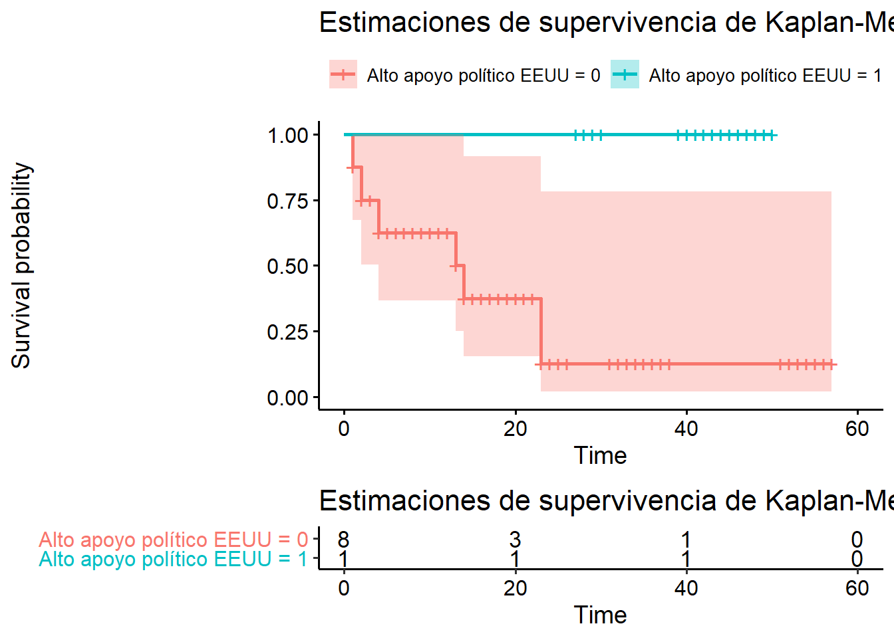
Hay una gran diferencia entre aquellos países que tienen alto apoyo político de Estados Unidos y aquellos que no. Los primeros tienen menos probabilidad de tener un quiebre demócratico, lo que se condice con la literatura e historia en América Latina. En la actualidad sabemos que Estados Unidos estuvo detrás de casi todos (sino todos) los golpes de estado previos a la tercera ola de democratización en la región.
Ejercicio 9D
Utilizando
survminergrafique una curva de Kaplan-Meier para la variablecolonia_gb.
Primero creamos los objetos de democracia_directa tal como se hicieron en el capítulo
data("democracia_directa")
democracia_directa_b <- democracia_directa %>%
group_by(pais_nombre) %>%
filter(cumsum(dem_directa) <= 1) %>%
ungroup()
democracia_directa_c <- democracia_directa_b %>%
group_by(pais_nombre) %>%
filter(anio != min(anio)) %>%
mutate(risk_time_at_end = c(1:n()),
risk_time_at_start = c(0:(n() - 1))) %>%
ungroup() %>%
dplyr::select(pais_nombre, anio, risk_time_at_start, risk_time_at_end,
everything())km_colonia_gb <- survfit(Surv(time = risk_time_at_start, time2 = risk_time_at_end,
event = dem_directa) ~ colonia_gb,
type = "kaplan-meier",
conf.type = "log",
data = democracia_directa_c)
ggsurvplot(km_colonia_gb, conf.int = T,
risk.table=T,
legend.title = "",
break.x.by = 20,
legend.labs = c("Colonia Gran Bretaña = 0",
"Colonia Gran Bretaña = 1"),
data = democracia_directa_c) +
labs(title = "Estimaciones de supervivencia de Kaplan-Meier ")
## Warning: Vectorized input to `element_text()` is not officially supported.
## Results may be unexpected or may change in future versions of ggplot2.
Los países que no fueron una colonia de Gran Bretaña son más rápidos en implementar mecanismos de democracia directa, aunque esta relación no es tan fuerte como la vista en el capítulo, donde se prueba el efecto de la democratización rápida en la variable dependiente.
- La variable
colonia_urssindica aquellos países que fueron parte de la Unión Soviética. Grafique una curva de Kaplan-Meier para la variable. Incorpore esta variable a un sexto modelo, haga su test de Grambsch y Therneau y rehaga la tabla de los modelos contexreg
km_colonia_urss <- survfit(Surv(time = risk_time_at_start, time2 = risk_time_at_end,
event = dem_directa) ~ colonia_urss,
type = "kaplan-meier",
conf.type = "log",
data = democracia_directa_c)
ggsurvplot(km_colonia_urss, conf.int = T,
risk.table=T,
legend.title = "",
break.x.by = 20,
legend.labs = c("Colonia URSS = 0",
"Colonia URSS = 1"),
data = democracia_directa_c) +
labs(title = "Estimaciones de supervivencia de Kaplan-Meier ")Ahora bien, los países que fueron parte de la Unión Soviética tienen una mayor probabilidad de implementar mecanismos de democracia directa. Esto contrasta fuertemente con el gráfico de las colonias británicas, en donde el efecto no es tan grande. Pasemos a crear el sexto modelo, incluyendo la variable de colonia_urss:
cox_m6 <- coxph(Surv(risk_time_at_start, risk_time_at_end, dem_directa) ~
dem_rapida_positiva + dem_rapida_negativa + memoria + vdem +
difusion_cap + difusion_ocurr + log_poblacion + colonia_gb + colonia_urss,
data = democracia_directa_c,
method ="breslow")
cox.zph(cox_m6)
## chisq df p
## dem_rapida_positiva 1.76e+00 1 0.185
## dem_rapida_negativa 3.92e-01 1 0.531
## memoria 9.51e-01 1 0.330
## vdem 4.18e+00 1 0.041
## difusion_cap 4.31e+00 1 0.038
## difusion_ocurr 1.92e+00 1 0.166
## [ reached getOption("max.print") -- omitted 4 rows ]Por el test de riesgo proporcional notamos que las variables vdem y difusion_cap están violando el supuesto de proporcionalidad de los riesgos, con valores-p de 0.041 y 0.038 respectivamente. Sin embargo, el valor-p global está justo por encima de 0.05, por lo que podríamos no corregir las violaciones de las variables mencionadas.
Ahora vamos a crear los modelos 1 a 5 para hacer la tabla con texreg. También haremos los test para ver si debemos hacer modificaciones:
cox_m1 <- coxph(Surv(risk_time_at_start, risk_time_at_end, dem_directa) ~
dem_rapida_positiva + dem_rapida_negativa + memoria + vdem,
data = democracia_directa_c,
method ="breslow")
cox_m2 <- coxph(Surv(risk_time_at_start, risk_time_at_end, dem_directa) ~
dem_rapida_positiva + dem_rapida_negativa + memoria + vdem +
difusion_cap,
data = democracia_directa_c,
method ="breslow")
cox_m3 <- coxph(Surv(risk_time_at_start, risk_time_at_end, dem_directa) ~
dem_rapida_positiva + dem_rapida_negativa + memoria + vdem +
difusion_cap + difusion_ocurr,
data = democracia_directa_c,
method ="breslow")
cox_m4 <- coxph(Surv(risk_time_at_start, risk_time_at_end, dem_directa) ~
dem_rapida_positiva + dem_rapida_negativa + memoria + vdem +
difusion_cap + difusion_ocurr + log_poblacion,
data = democracia_directa_c,
method = "breslow")
cox_m5 <- coxph(Surv(risk_time_at_start, risk_time_at_end, dem_directa) ~
dem_rapida_positiva + dem_rapida_negativa + memoria + vdem +
difusion_cap + difusion_ocurr + log_poblacion + colonia_gb,
data = democracia_directa_c,
method ="breslow")
cox.zph(cox_m1)
## chisq df p
## dem_rapida_positiva 2.33 1 0.127
## dem_rapida_negativa 0.45 1 0.502
## memoria 1.97 1 0.161
## vdem 5.33 1 0.021
## GLOBAL 9.37 4 0.052
cox.zph(cox_m2)
## chisq df p
## dem_rapida_positiva 1.693 1 0.1932
## dem_rapida_negativa 0.718 1 0.3968
## memoria 1.623 1 0.2026
## vdem 6.594 1 0.0102
## difusion_cap 8.135 1 0.0043
## GLOBAL 14.825 5 0.0111
cox.zph(cox_m3)
## chisq df p
## dem_rapida_positiva 2.092 1 0.148
## dem_rapida_negativa 0.473 1 0.491
## memoria 1.697 1 0.193
## vdem 4.515 1 0.034
## difusion_cap 4.264 1 0.039
## difusion_ocurr 2.089 1 0.148
## [ reached getOption("max.print") -- omitted 1 row ]
cox.zph(cox_m4)
## chisq df p
## dem_rapida_positiva 2.084 1 0.149
## dem_rapida_negativa 0.445 1 0.505
## memoria 1.677 1 0.195
## vdem 4.533 1 0.033
## difusion_cap 4.224 1 0.040
## difusion_ocurr 2.059 1 0.151
## [ reached getOption("max.print") -- omitted 2 rows ]
cox.zph(cox_m5)
## chisq df p
## dem_rapida_positiva 1.883 1 0.170
## dem_rapida_negativa 0.380 1 0.538
## memoria 1.274 1 0.259
## vdem 4.640 1 0.031
## difusion_cap 3.960 1 0.047
## difusion_ocurr 1.798 1 0.180
## [ reached getOption("max.print") -- omitted 3 rows ]Los modelos 2, 3, 4 y 5 tienen un valor-p global menor a 0.05, por lo que pasaremos a interactuar las variables problemáticas:
cox_m2_int <- coxph(Surv(risk_time_at_start, risk_time_at_end, dem_directa) ~
dem_rapida_positiva + dem_rapida_negativa + memoria + vdem +
difusion_cap + vdem:log(risk_time_at_end),
data = democracia_directa_c,
method ="breslow")
## Warning in coxph(Surv(risk_time_at_start, risk_time_at_end, dem_directa)
## ~ : a variable appears on both the left and right sides of the formula
cox.zph(cox_m2_int)
## chisq df p
## dem_rapida_positiva 1.69660 1 0.193
## dem_rapida_negativa 0.36998 1 0.543
## memoria 0.94922 1 0.330
## vdem 0.00658 1 0.935
## difusion_cap 6.14249 1 0.013
## vdem:log(risk_time_at_end) 0.09026 1 0.764
## [ reached getOption("max.print") -- omitted 1 row ]
cox_m3_int <- coxph(Surv(risk_time_at_start, risk_time_at_end, dem_directa) ~
dem_rapida_positiva + dem_rapida_negativa + memoria + vdem +
difusion_cap + difusion_ocurr + vdem:log(risk_time_at_end) +
difusion_cap:log(risk_time_at_end),
data = democracia_directa_c,
method ="breslow")
## Warning in coxph(Surv(risk_time_at_start, risk_time_at_end, dem_directa)
## ~ : a variable appears on both the left and right sides of the formula
cox.zph(cox_m3_int)
## chisq df p
## dem_rapida_positiva 3.12e+00 1 0.077
## dem_rapida_negativa 9.92e-02 1 0.753
## memoria 1.13e+00 1 0.287
## vdem 2.17e-02 1 0.883
## difusion_cap 6.03e-02 1 0.806
## difusion_ocurr 2.64e-02 1 0.871
## [ reached getOption("max.print") -- omitted 3 rows ]
cox_m4_int <- coxph(Surv(risk_time_at_start, risk_time_at_end, dem_directa) ~
dem_rapida_positiva + dem_rapida_negativa + memoria + vdem +
difusion_cap + difusion_ocurr + log_poblacion + vdem:log(risk_time_at_end) +
difusion_cap:log(risk_time_at_end),
data = democracia_directa_c,
method = "breslow")
## Warning in coxph(Surv(risk_time_at_start, risk_time_at_end, dem_directa)
## ~ : a variable appears on both the left and right sides of the formula
cox.zph(cox_m4_int)
## chisq df p
## dem_rapida_positiva 3.12e+00 1 0.077
## dem_rapida_negativa 9.01e-02 1 0.764
## memoria 1.12e+00 1 0.290
## vdem 2.36e-02 1 0.878
## difusion_cap 7.47e-02 1 0.785
## difusion_ocurr 3.65e-02 1 0.848
## [ reached getOption("max.print") -- omitted 4 rows ]
cox_m5_int <- coxph(Surv(risk_time_at_start, risk_time_at_end, dem_directa) ~
dem_rapida_positiva + dem_rapida_negativa + memoria + vdem +
difusion_cap + difusion_ocurr + log_poblacion +
colonia_gb + vdem:log(risk_time_at_end) +
log_poblacion:log(risk_time_at_end),
data = democracia_directa_c,
method = "breslow")
## Warning in coxph(Surv(risk_time_at_start, risk_time_at_end, dem_directa)
## ~ : a variable appears on both the left and right sides of the formula
cox.zph(cox_m5_int)
## chisq df p
## dem_rapida_positiva 1.13e+00 1 0.287
## dem_rapida_negativa 3.37e-01 1 0.562
## memoria 5.39e-01 1 0.463
## vdem 5.88e-05 1 0.994
## difusion_cap 4.16e+00 1 0.041
## difusion_ocurr 1.15e+00 1 0.284
## [ reached getOption("max.print") -- omitted 5 rows ]Por temas de espacio incluiremos sólo aquellos modelos con un valor-p global mayor o igual a 0.05:
lista_modelos_9d <- list(cox_m1, cox_m2_int, cox_m3_int, cox_m4_int, cox_m5_int, cox_m6)
tabla9d_1 <- htmlreg(l = lista_modelos_9d,
custom.model.names = c("Modelo 1", "Modelo 2b", "Modelo 3b", "Modelo 4b", "Modelo 5b",
"Modelo 6"),
custom.coef.names = c("Democratización Rápida", "Rápido Retroceso Democrático", "Memoria",
"Democracia", "Difusión de Capacidades",
"Democracia x tiempo en riesgo(ln)",
"Difusión capacidades x tiempo en riesgo(ln)",
"Difusión de Ocurrencias", "Población(ln)", "Fue Colonia Británica",
"Población(ln) x tiempo en riesgo(ln)", "Fue Colonia URSS"),
override.coef = map(lista_modelos_9d, ~ exp(coef(.x))),
override.se = map(lista_modelos_9d, ~ odds_se(.x)),
override.pvalues = map(lista_modelos_9d, ~ odds_pvalues(.x))
)
htmltools::HTML(tabla9d_1) # Con este comando hacemos que nuestra tabla se pueda ver en formato html| Modelo 1 | Modelo 2b | Modelo 3b | Modelo 4b | Modelo 5b | Modelo 6 | |
|---|---|---|---|---|---|---|
| Democratización Rápida | 5.48* | 4.54* | 4.82* | 4.75* | 3.93* | 5.22* |
| (2.28) | (1.95) | (2.11) | (2.10) | (1.81) | (2.27) | |
| Rápido Retroceso Democrático | 2.26 | 2.37 | 2.38 | 2.37 | 2.30 | 2.11 |
| (1.69) | (1.77) | (1.79) | (1.79) | (1.74) | (1.59) | |
| Memoria | 5.79** | 5.45** | 5.89** | 5.85** | 5.17** | 4.68** |
| (2.07) | (1.97) | (2.16) | (2.15) | (1.90) | (1.77) | |
| Democracia | 4.03 | 100.91 | 108.09 | 116.50 | 379.22 | 4.60 |
| (2.45) | (143.61) | (165.46) | (183.82) | (636.11) | (3.23) | |
| Difusión de Capacidades | 1.78*** | 4.68** | 4.67** | 2.70** | 2.77** | |
| (0.38) | (1.56) | (1.56) | (0.88) | (0.90) | ||
| Democracia x tiempo en riesgo(ln) | 0.32* | 0.35* | 0.35* | 0.26* | ||
| (0.13) | (0.15) | (0.15) | (0.12) | |||
| Difusión capacidades x tiempo en riesgo(ln) | 0.23 | 0.23 | 0.04 | 0.02 | ||
| (0.40) | (0.40) | (0.08) | (0.04) | |||
| Difusión de Ocurrencias | 0.77*** | 0.77*** | ||||
| (0.09) | (0.09) | |||||
| Población(ln) | 1.02*** | 1.57*** | 0.99*** | |||
| (0.10) | (0.37) | (0.10) | ||||
| Fue Colonia Británica | 0.49* | 0.48* | ||||
| (0.24) | (0.23) | |||||
| Población(ln) x tiempo en riesgo(ln) | 0.88*** | |||||
| (0.06) | ||||||
| Fue Colonia URSS | 1.63* | |||||
| (0.83) | ||||||
| AIC | 377.71 | 368.19 | 363.77 | 365.67 | 365.19 | 372.57 |
| R2 | 0.00 | 0.01 | 0.01 | 0.01 | 0.01 | 0.01 |
| Max. R2 | 0.04 | 0.04 | 0.04 | 0.04 | 0.04 | 0.04 |
| Num. events | 47 | 47 | 47 | 47 | 47 | 47 |
| Num. obs. | 11441 | 11269 | 11260 | 11229 | 11229 | 11229 |
| Missings | 554 | 726 | 735 | 766 | 766 | 766 |
| PH test | 0.05 | 0.08 | 0.56 | 0.19 | 0.19 | 0.05 |
| ***p < 0.001; **p < 0.01; *p < 0.05 | ||||||
¿Tenés tu propia base de datos de supervivencia? Sería genial que repitieras todo el ejercicio usando tus datos y compartas dudas en nuestro GitHub. Si no tienes base, usa la de Mainwaring y Pérez-Liñán (2013) para intentar identificar la variable que más aumenta los riesgos de quiebre democrático en América Latina.
Haremos el ejercicio con la base de Mainwaring y Pérez-Liñan que acotamos en el ejercicio 9A paraanalizar a partir de 1950. Recuerda que tu podrías hacerlo con otro período temporal o con tu propia base de datos!
quiebre_democracia_c <- quiebre_democracia_b %>% group_by(pais_nombre) %>%
filter(anio != min(anio)) %>%
mutate(risk_time_at_end = c(1:n()),
risk_time_at_start = c(0:(n() - 1))) %>%
ungroup() %>%
dplyr::select(pais_nombre, anio, risk_time_at_start, risk_time_at_end, everything())Haremos distintos modelos. En el primero incluiremos como variables explicativas el índice de poder presidencial y la edad del régimen (tal como se vió en el capítulo 8):
cox_quiebre_m1 <- coxph(Surv(risk_time_at_start, risk_time_at_end, quiebre_democracia) ~
poder_presid + edad_regimen ,
data = quiebre_democracia_c,
method ="breslow")
cox.zph(cox_quiebre_m1)
## chisq df p
## poder_presid 0.0246 1 0.88
## edad_regimen 0.2267 1 0.63
## GLOBAL 0.2280 2 0.89Todas las variables cumplen con el supuesto de de proporcionalidad. Sigamos con el siguiente modelo, en el cual agregaremos una variable económica (crecim_10a: crecimiento económico en los diez años anteriores al quiebre democrático).
cox_quiebre_m2 <- coxph(Surv(risk_time_at_start, risk_time_at_end, quiebre_democracia) ~
poder_presid + edad_regimen + crecim_10a,
data = quiebre_democracia_c,
method ="breslow")
cox.zph(cox_quiebre_m2)
## chisq df p
## poder_presid 0.000218 1 0.99
## edad_regimen 0.197345 1 0.66
## crecim_10a 0.315957 1 0.57
## GLOBAL 0.340278 3 0.95Nuevamente las variables no presentan problemas de proporcionalidad. Pasemos a hacer una tabla:
modelos_quiebre_dem <- list(cox_quiebre_m1, cox_quiebre_m2)
screenreg(modelos_quiebre_dem)
##
## ==============================
## Model 1 Model 2
## ------------------------------
## poder_presid -0.14 -0.17
## (0.19) (0.21)
## edad_regimen 0.03 0.05
## (0.06) (0.08)
## crecim_10a 12.73
## (29.72)
## ------------------------------
## AIC 25.40 27.22
## R^2 0.00 0.01
## Max. R^2 0.15 0.15
## Num. events 7 7
## Num. obs. 135 135
## Missings 5 5
## PH test 0.89 0.95
## ==============================
## *** p < 0.001; ** p < 0.01; * p < 0.05
tabla9d_2 <- htmlreg(l = modelos_quiebre_dem,
custom.model.names = c("Modelo 1", "Modelo 2"),
custom.coef.names = c("Poder presidencial", "Edad régimen",
"Crecimiento Económico 10 años antes"),
override.coef = map(modelos_quiebre_dem, ~ exp(coef(.x))),
override.se = map(modelos_quiebre_dem, ~ odds_se(.x)),
override.pvalues = map(modelos_quiebre_dem, ~ odds_pvalues(.x)))
htmltools::HTML(tabla9d_2)| Modelo 1 | Modelo 2 | |
|---|---|---|
| Poder presidencial | 0.87*** | 0.84*** |
| (0.16) | (0.17) | |
| Edad régimen | 1.03*** | 1.05*** |
| (0.06) | (0.08) | |
| Crecimiento Económico 10 años antes | 337537.26 | |
| (10032846.00) | ||
| AIC | 25.40 | 27.22 |
| R2 | 0.00 | 0.01 |
| Max. R2 | 0.15 | 0.15 |
| Num. events | 7 | 7 |
| Num. obs. | 135 | 135 |
| Missings | 5 | 5 |
| PH test | 0.89 | 0.95 |
| ***p < 0.001; **p < 0.01; *p < 0.05 | ||
Capítulo 10: Inferencia causal
Paquetes y carga de datos
library(tidyverse)
library(paqueteadp)
## install.packages("ggdag")
library(ggdag)
## install.packages("dagitty")
library(dagitty)
## install.packages("MatchIt")
library(MatchIt)
library(broom)
library(texreg)Ejercicio 10A
Consulta el manual en línea para obtener más detalles sobre las características de DAGitty, o pasa unos minutos jugando para acostumbrarte a agregar y conectar nodos.
A continuación hay un ejemplo muy básico de un tema que está surgiendo últimamente sobre la relación de China y países en desarrollo. Flores-Macías y Kreps (2013) investigan la relación que existe entre el comercio de un país con China y la relación que hay con la convergencia en política exterior. Se incluye como variable de control la relación del país con Estados Unidos, ya que esta podría influir tanto en el comercio como en la política exterior.
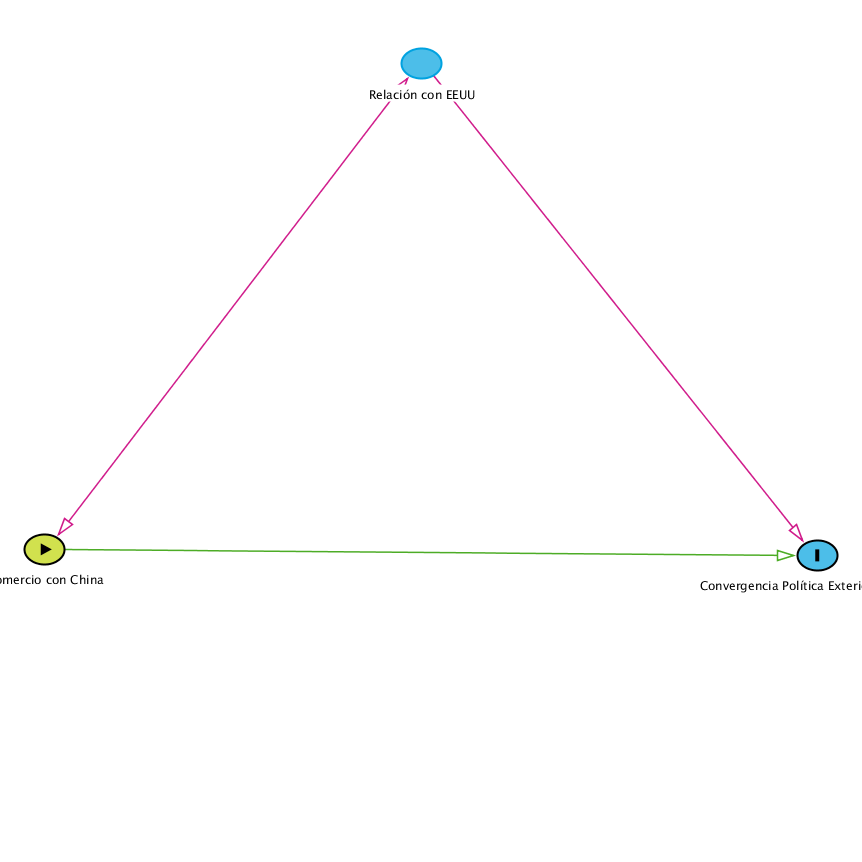
Ejercicio 10B
En el Capítulo 6, hiciste una regresión múltiple para estimar los determinantes de la desigualdad en América Latina y el Caribe (Huber et al. (2006)). Para este ejercicio, dibujarás un DAG que modele el efecto causal de la diversidad étnica sobre la desigualdad social. Haz lo siguiente:
## Primero cargamos la base de datos utilizada en el capitulo 6:
data("bienestar")Enumera todas las variables que utilizaste en ese capítulo (PIB, inversión extranjera directa, gasto en salud, etc.) y cualquier otra variable que parezca relevante para explicar la desigualdad social.
| Variable | Nombre variable |
|---|---|
| Diversidad étnica | diversidad_etnica |
| Desigualdad social | gini |
| PIB | pib |
| Tipo de régimen | tipo_regimen |
| Gasto en salud | gasto_salud |
| Gasto en educación | gasto_educ |
| Gasto en seguridad social | gasto_segsocial |
| Población | poblacion |
Dibuja un DAG inicial a mano en papel o en una pizarra y considera cuidadosamente las relaciones causales entre los diferentes nodos.
Dibuja el DAG con DAGitty. Asigne la desigualdad como el resultado y la diversidad étnica como la variable independiente. Si alguno de tus nodos no es observado, asígnelos como latentes. Determine para qué nodos deben ajustarse.

Dibuja el DAG en R con ggdag().
ejercicio10b_dag1 <- dagify(
gini ~ diversidad_etnica + tipo_regimen + gasto + represion,
diversidad_etnica ~ represion + tipo_regimen,
tipo_regimen ~ diversidad_etnica,
gasto ~ tipo_regimen,
exposure = "diversidad_etnica",
outcome = "gini",
labels = c(gini = "Desigualdad Social", diversidad_etnica = "Diversidad étnica",
tipo_regimen = "Tipo de régimen", gasto = "Gasto (salud, educación y seguridad social)", represion = "Represión"),
coords = list(x = c(gini = 5, diversidad_etnica = 0, tipo_regimen = 1, gasto = 3, represion = 3),
y = c(gini = 3, diversidad_etnica = 3, tipo_regimen = 1, gasto = 0, represion = 5))
)
ggdag_status(ejercicio10b_dag1,
use_labels = "label", text = FALSE) +
guides(fill = FALSE, color = FALSE) +
theme_dag()
Ejercicio 10C
En el ejercicio 10B, dibujaste un DAG que modeló la relación causal entre la diversidad étnica y la desigualdad social. En este ejercicio utilizarás el set de ajustes de ese DAG para intentar estimar el efecto causal de esa relación. Haz lo siguiente:
- Carga la base de datos de bienestar del paquete del libro:
library(paqueteadp)
data("bienestar")
- Use el DAG que hiciste anteriormente para determinar el ajuste mínimo suficiente. ¿Qué nodos deben ser ajustados para asegurar que se identifique el camino entre la diversidad étnica y la desigualdad?
ggdag_status(ejercicio10b_dag1,
use_labels = "label", text = FALSE) +
guides(fill = FALSE, color = FALSE) +
theme_dag()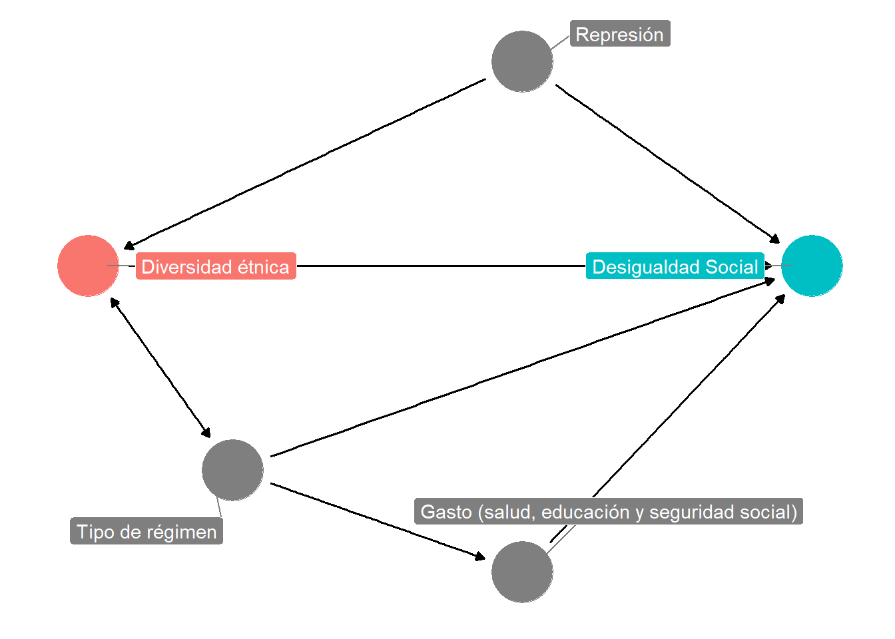
Se debería controlar por represión, tipo de régimen y gastos en salud, educación y seguridad social.
- Construye un modelo de correlación no causal (que llamamos de ingenuo o naive) para probar la relación entre la diversidad y la desigualdad (es decir,
lm(gini ~ diversidad_etnica, data = bienestar)).
¿Cómo se asocia la diversidad con la desigualdad? ¿Por qué esta estimación no es causal?
bienestar_cap10 <- bienestar %>%
drop_na(gini, gasto_salud, gasto_segsocial, diversidad_etnica, pib, tipo_regimen)
modelo10_naive <- lm(gini ~ diversidad_etnica, data = bienestar_cap10)
screenreg(modelo10_naive)
##
## =============================
## Model 1
## -----------------------------
## (Intercept) 46.54 ***
## (0.48)
## diversidad_etnica 7.64 ***
## (0.87)
## -----------------------------
## R^2 0.23
## Adj. R^2 0.23
## Num. obs. 258
## =============================
## *** p < 0.001; ** p < 0.01; * p < 0.05El coeficiente para diversidad étnica es positivo, por lo que pasar de una sociedad no diversa a unaque sí lo es aumenta en 7.64 puntos el coeficiente de Gini. Sin embargo, esta estimación no es causal debido a que pueden haber muchas otras variables que afectan a la medida de desigualdad.
- Usar una regresión múltiple para cerrar las puertas traseras. Incluya las variables de tu set de ajuste como variables explicativas en un modelo de regresión.
modelo10_gini <- lm(gini ~ diversidad_etnica + represion + tipo_regimen + gasto_educ +
gasto_salud + gasto_segsocial,
data = bienestar_cap10)
screenreg(modelo10_gini)
##
## =============================
## Model 1
## -----------------------------
## (Intercept) 45.81 ***
## (2.26)
## diversidad_etnica 6.23 ***
## (0.92)
## represion -0.39
## (1.40)
## tipo_regimen -1.43 **
## (0.54)
## gasto_educ 2.00 ***
## (0.35)
## gasto_salud -0.38
## (0.29)
## gasto_segsocial -0.13
## (0.12)
## -----------------------------
## R^2 0.35
## Adj. R^2 0.34
## Num. obs. 258
## =============================
## *** p < 0.001; ** p < 0.01; * p < 0.05Ahora el coeficiente de diversidad étnica disminuye levemente.
- Usa matching para cerrar las puertas traseras. Usa las variables de tu set de ajuste para hacer coincidir la asignación de las observaciones con el tratamiento, luego usa las observaciones emparejadas en un modelo de regresión.
Primero creamos un objeto llamado matched, en donde ocupamos la función matchit y donde la variable dependiente es el tratamiento. En este caso vendría a ser diversidad_etnica, y como variables independientes todas las demás.
matched <- matchit(diversidad_etnica ~ represion + tipo_regimen + gasto_educ +
gasto_salud + gasto_segsocial,
data = bienestar_cap10,
method = "nearest",
distance = "mahalanobis",
replace = TRUE)Con este modelo matcheado pasamos a crear un modelo de regresión lineal en donde ocuparemos los datos ya pareados. Es decir, debemos guardar los datos y ocuparlos en una nueva regresión:
bienestar_matched <- match.data(matched)
modelo10_matched <- lm(gini ~ diversidad_etnica + represion + tipo_regimen +
gasto_educ + gasto_salud + gasto_segsocial,
data = bienestar_matched,
weights = weights)
screenreg(modelo10_matched)
##
## =============================
## Model 1
## -----------------------------
## (Intercept) 42.26 ***
## (3.46)
## diversidad_etnica 5.94 ***
## (1.25)
## represion 2.09
## (2.11)
## tipo_regimen 1.59
## (1.17)
## gasto_educ -0.30
## (0.74)
## gasto_salud 1.08
## (0.86)
## gasto_segsocial 0.13
## (0.32)
## -----------------------------
## R^2 0.21
## Adj. R^2 0.16
## Num. obs. 108
## =============================
## *** p < 0.001; ** p < 0.01; * p < 0.05Y voilà, ya tenemos nuestro modelo matcheado!
- Usa la ponderación de probabilidad inversa para cerrar las puertas traseras. Usa las variables de tu conjunto de ajustes para generar puntuaciones de propensión para la asignación al tratamiento, y luego crea ponderaciones de probabilidad inversas y usa esas ponderaciones en un modelo de regresión.
bienestar_10c <- bienestar %>%
mutate(tratamiento_divetn = if_else(diversidad_etnica == 0, "Control", "Tratamiento"),
tratamiento_divetn = factor(tratamiento_divetn))
modelo10_tratamiento <- glm(tratamiento_divetn ~ represion + tipo_regimen +
gasto_educ + gasto_salud + gasto_segsocial,
data = bienestar_10c,
family = binomial(link = "logit"))
propensiones_10c <- broom::augment_columns(modelo10_tratamiento,
bienestar_10c,
type.predict = "response") %>%
rename(propension = .fitted)
bienestar_10c_peso_invertido <- propensiones_10c %>%
mutate(peso_invertido = (diversidad_etnica / propension) +
(1 - diversidad_etnica) / (1 - propension))Ahora que creamos los valores de probabilidad inversa los añadimos a un modelo de regresión:
modelo10_prob_inv <- lm(gini ~ diversidad_etnica,
data = bienestar_10c_peso_invertido,
weights = peso_invertido)
screenreg(modelo10_prob_inv)
##
## =============================
## Model 1
## -----------------------------
## (Intercept) 47.09 ***
## (0.50)
## diversidad_etnica 7.71 ***
## (0.78)
## -----------------------------
## R^2 0.28
## Adj. R^2 0.27
## Num. obs. 258
## =============================
## *** p < 0.001; ** p < 0.01; * p < 0.05
- ¿Cómo se comparan estos efectos ajustados con el modelo “ingenuo?” ¿Cuánta confianza tienes en que estos son efectos causales? ¿Por qué? ¿Qué podría hacer para mejorar su identificación causal?
screenreg(list(modelo10_naive, modelo10_gini, modelo10_matched, modelo10_prob_inv),
custom.model.names = c("Naive/Ingenuo", "Regresión", "Matching", "IPW"))
##
## ====================================================================
## Naive/Ingenuo Regresión Matching IPW
## --------------------------------------------------------------------
## (Intercept) 46.54 *** 45.81 *** 42.26 *** 47.09 ***
## (0.48) (2.26) (3.46) (0.50)
## diversidad_etnica 7.64 *** 6.23 *** 5.94 *** 7.71 ***
## (0.87) (0.92) (1.25) (0.78)
## represion -0.39 2.09
## (1.40) (2.11)
## tipo_regimen -1.43 ** 1.59
## (0.54) (1.17)
## gasto_educ 2.00 *** -0.30
## (0.35) (0.74)
## gasto_salud -0.38 1.08
## (0.29) (0.86)
## gasto_segsocial -0.13 0.13
## (0.12) (0.32)
## --------------------------------------------------------------------
## R^2 0.23 0.35 0.21 0.28
## Adj. R^2 0.23 0.34 0.16 0.27
## Num. obs. 258 258 108 258
## ====================================================================
## *** p < 0.001; ** p < 0.01; * p < 0.05En este ejemplo, el modelo ingenuo se acercó bastante al valor, y la diversidad étnica se mantiene en todos los modelos como una variable estadísticamente significativa.
Capítulo 11: Manejo avanzado de datos políticos
Paquetes y carga de datos
library(tidyverse)
library(paqueteadp)
library(skimr)
## install.packages("countrycode")
library(countrycode)
## install.packages("stringdist")
library(stringdist)
## install.packages("naniar")
library(naniar)
## install.packages("mice")
library(mice)
library(remotes)
library(texreg)
data("tratados")
data("pib_pc_america")Ejercicio 11A
Descargue el World Economics and Politics (WEP) Dataverse y elija diez variables de país-año, incluyendo tanto las características institucionales como económicas de los estados como nuevas variables que se añadirán a
tratados_con_piby unirlas.
¿Fue fácil encontrar los identificadores únicos (códigos, nombres)?
En primer lugar cargamos la base tratados del paquete paqueteadp y la exploramos con skimr:
data("tratados")
skim(tratados)| Name | tratados |
| Number of rows | 248 |
| Number of columns | 5 |
| _______________________ | |
| Column type frequency: | |
| character | 3 |
| numeric | 2 |
| ________________________ | |
| Group variables | None |
Variable type: character
| skim_variable | n_missing | complete_rate | min | max | empty | n_unique | whitespace |
|---|---|---|---|---|---|---|---|
| nombre_tratado | 0 | 1 | 48 | 163 | 0 | 4 | 0 |
| pais_nombre | 0 | 1 | 4 | 36 | 0 | 31 | 0 |
| accion_tipo | 0 | 1 | 5 | 12 | 0 | 2 | 0 |
Variable type: numeric
| skim_variable | n_missing | complete_rate | mean | sd | p0 | p25 | p50 | p75 | p100 | hist |
|---|---|---|---|---|---|---|---|---|---|---|
| anio_adopcion | 0 | 1.00 | 1997 | 0.83 | 1996 | 1997 | 1998 | 1998 | 1998 | ▃▁▃▁▇ |
| accion_anio | 82 | 0.67 | 2000 | 3.32 | 1996 | 1998 | 1999 | 2001 | 2012 | ▇▅▁▁▁ |
head(tratados, n = 10)
## # A tibble: 10 x 5
## nombre_tratado anio_adopcion pais_nombre accion_tipo accion_anio
## <chr> <dbl> <chr> <chr> <dbl>
## 1 Tratado de Prohibic~ 1996 Antigua y B~ Ratificaci~ 2006
## 2 Tratado de Prohibic~ 1996 Antigua y B~ Firma 1997
## 3 Tratado de Prohibic~ 1996 Argentina Ratificaci~ 1998
## # ... with 7 more rowsLuego descargamos la base de World Economics and Politics (WEP) Dataverse y la guardamos en la carpeta donde estemos trabajando el proyecto:
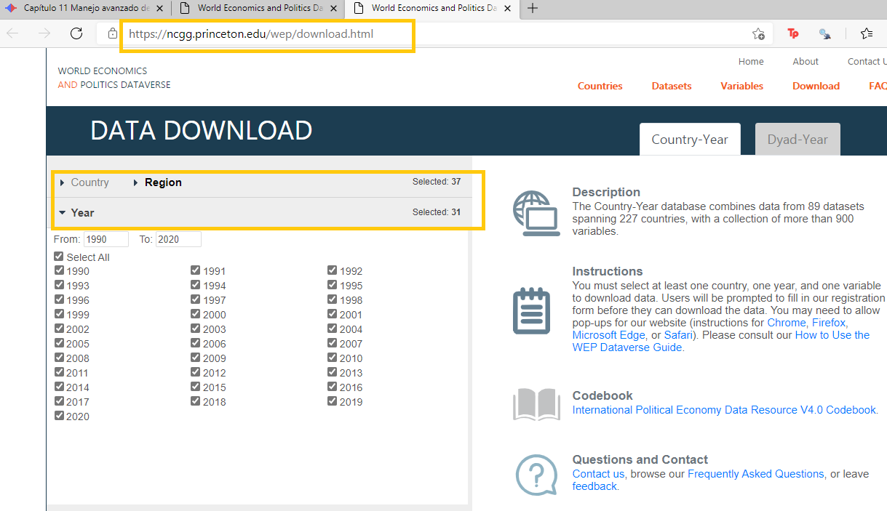
df_wep <- read_csv("00-archivos/ejercicios/datos/wep_data.csv")
glimpse(df_wep)
## Rows: 1,037
## Columns: 46
## $ country <chr> "United States of America", "United Stat~
## $ year <dbl> 1990, 1991, 1992, 1993, 1994, 1995, 1996~
## $ gwno <dbl> 2, 2, 2, 2, 2, 2, 2, 2, 2, 2, 2, 2, 2, 2~
## $ ccode <dbl> 2, 2, 2, 2, 2, 2, 2, 2, 2, 2, 2, 2, 2, 2~
## $ ifscode <dbl> 111, 111, 111, 111, 111, 111, 111, 111, ~
## $ ifs <chr> "USA", "USA", "USA", "USA", "USA", "USA"~
## $ gwabbrev <chr> "USA", "USA", "USA", "USA", "USA", "USA"~
## $ fdiflows_UNCTAD <dbl> 48422, 22799, 19222, 50663, 45095, 58772~
## $ fdistocks_UNCTAD <dbl> 539601, 669137, 696177, 768398, 757853, ~
## $ pl_FH <dbl> 1, 1, 1, 1, 1, 1, 1, 1, 1, 1, 1, 1, 1, 1~
## $ cl_FH <dbl> 1, 1, 1, 1, 1, 1, 1, 1, 1, 1, 1, 1, 1, 1~
## $ rulelaw_FH <dbl> NA, NA, NA, NA, NA, NA, NA, NA, NA, NA, ~
## $ exselec_DD <dbl> 1, 1, 1, 1, 1, 1, 1, 1, 1, 1, 1, 1, 1, 1~
## $ legselec_DD <dbl> 2, 2, 2, 2, 2, 2, 2, 2, 2, 2, 2, 2, 2, 2~
## $ closed_DD <dbl> 2, 2, 2, 2, 2, 2, 2, 2, 2, 2, 2, 2, 2, 2~
## $ dejure_DD <dbl> 2, 2, 2, 2, 2, 2, 2, 2, 2, 2, 2, 2, 2, 2~
## $ defacto_DD <dbl> 2, 2, 2, 2, 2, 2, 2, 2, 2, 2, 2, 2, 2, 2~
## $ defacto2_DD <dbl> 2, 2, 2, 2, 2, 2, 2, 2, 2, 2, 2, 2, 2, 2~
## $ democracy_DD <dbl> 1, 1, 1, 1, 1, 1, 1, 1, 1, 1, 1, 1, 1, 1~
## $ regime_DD <dbl> 2, 2, 2, 2, 2, 2, 2, 2, 2, 2, 2, 2, 2, 2~
## $ ttd_DD <dbl> 0, 0, 0, 0, 0, 0, 0, 0, 0, 0, 0, 0, 0, 0~
## $ tta_DD <dbl> 0, 0, 0, 0, 0, 0, 0, 0, 0, 0, 0, 0, 0, 0~
## $ transparencyindex_HR <dbl> 3.3, 3.4, 3.2, 3.5, 3.9, 4.0, 3.9, 3.7, ~
## $ transparencyindexub_HR <dbl> 2.7, 2.7, 2.6, 2.9, 3.3, 3.4, 3.2, 3.1, ~
## $ transparencyindexlb_HR <dbl> 3.9, 3.9, 3.8, 4.2, 4.6, 4.7, 4.5, 4.4, ~
## $ transparencyindexsd_HR <dbl> 0.30, 0.31, 0.30, 0.32, 0.33, 0.35, 0.33~
## $ transdiff_HR <dbl> 0.236, 0.019, -0.153, 0.292, 0.441, 0.10~
## $ transdifflb_HR <dbl> -0.43, -0.60, -0.76, -0.37, -0.27, -0.59~
## $ transdiffub_HR <dbl> 0.92, 0.66, 0.53, 1.00, 1.11, 0.83, 0.54~
## $ fragment_P4 <dbl> NA, NA, NA, NA, NA, NA, NA, NA, NA, NA, ~
## $ democ_P4 <dbl> 10, 10, 10, 10, 10, 10, 10, 10, 10, 10, ~
## $ autoc_P4 <dbl> 0, 0, 0, 0, 0, 0, 0, 0, 0, 0, 0, 0, 0, 0~
## $ polity_P4 <dbl> 10, 10, 10, 10, 10, 10, 10, 10, 10, 10, ~
## $ polity2_P4 <dbl> 10, 10, 10, 10, 10, 10, 10, 10, 10, 10, ~
## $ durable_P4 <dbl> 181, 182, 183, 184, 185, 186, 187, 188, ~
## $ xconst_P4 <dbl> 7, 7, 7, 7, 7, 7, 7, 7, 7, 7, 7, 7, 7, 7~
## $ parreg_P4 <dbl> 5, 5, 5, 5, 5, 5, 5, 5, 5, 5, 5, 5, 5, 5~
## $ parcomp_P4 <dbl> 5, 5, 5, 5, 5, 5, 5, 5, 5, 5, 5, 5, 5, 5~
## $ polcomp_P4 <dbl> 10, 10, 10, 10, 10, 10, 10, 10, 10, 10, ~
## $ change_P4 <dbl> NA, NA, NA, NA, NA, NA, NA, NA, NA, NA, ~
## $ sf_P4 <dbl> NA, NA, NA, NA, NA, NA, NA, NA, NA, NA, ~
## $ regtrans_P4 <dbl> NA, NA, NA, NA, NA, NA, NA, NA, NA, NA, ~
## $ corrupprev_SGI <dbl> NA, NA, NA, NA, NA, NA, NA, NA, NA, NA, ~
## $ democracy_share_DE <dbl> 0.42, 0.46, 0.51, 0.53, 0.54, 0.55, 0.54~
## $ democracy_count_DE <dbl> 69, 84, 93, 99, 103, 104, 103, 106, 105,~
## $ lndemsys_DE <dbl> 4.2, 4.4, 4.5, 4.6, 4.6, 4.6, 4.6, 4.7, ~En esta base tenemos 46 variables, pero tú podrías tener más o menos dependiendo de qué variables hayas elegido en la página Web.
Notamos que las primeras 7 variables son datos de identificación. Por ejemplo, tenemos el país ( y distintos códigos para este), y el año. A continuación vamos a seleccionar algunas variables para unirla a la base de tratados:
df_wep_reducido <- df_wep %>%
dplyr::select(1:9, rulelaw_FH, transparencyindex_HR, polity_P4, polity2_P4,corrupprev_SGI)
head(df_wep_reducido)
## # A tibble: 6 x 14
## country year gwno ccode ifscode ifs gwabbrev fdiflows_UNCTAD
## <chr> <dbl> <dbl> <dbl> <dbl> <chr> <chr> <dbl>
## 1 United~ 1990 2 2 111 USA USA 48422
## 2 United~ 1991 2 2 111 USA USA 22799
## 3 United~ 1992 2 2 111 USA USA 19222
## # ... with 3 more rows, and 6 more variablesPor último, pasaremos a unir las bases:
data("pib_pc_america")
## Primero creamos tratados_con_pib
tratados_con_pib <- left_join(x = tratados,
y = pib_pc_america,
by = c("pais_nombre", "anio_adopcion" = "anio"))
tratados_con_pib %>%
dplyr::select(pais_nombre, anio_adopcion, pib_pc)
## # A tibble: 248 x 3
## pais_nombre anio_adopcion pib_pc
## <chr> <dbl> <dbl>
## 1 Antigua y Barbuda 1996 NA
## 2 Antigua y Barbuda 1996 NA
## 3 Argentina 1996 14557.
## # ... with 245 more rows
## Luego le agregamos los datos de WEP
tratados_pib_wep <- left_join(x = tratados_con_pib,
y = df_wep_reducido,
by = c("pais_nombre" = "country",
"anio_adopcion" = "year"))
Ejercicio 11B
En vez de cinco imputaciones, repite el ejercicio de regresión usando diez imputaciones.
library(mice)
data("indice_cinc")
indice_cinc2 <- indice_cinc %>%
mutate(indice_capacidades = if_else(pais_iso3c == "USA" & anio %in% 1950:1970,
NA_real_, indice_capacidades))Ahora que tenemos la base de datos pasamos a hacer los pasos para la imputación:
imputacion_inicial <- mice(indice_cinc2, maxit = 0)
## Warning: Number of logged events: 1
predictor <- imputacion_inicial$predictorMatrix
predictor[, "pais_cown"] <- -2
predictor[, "anio"] <- 2
metodo_1 <- imputacion_inicial$method
metodo_1[which(metodo_1 == "pmm")] <- "2l.lmer" # Nuevamente ocupamos pmm
imputacion_mice10 <- mice(indice_cinc2, m = 10, seed = 1,
method = metodo_1, predictorMatrix = predictor)
##
## iter imp variable
## 1 1 gasto_militar poblacion_urb indice_capacidades
## 1 2 gasto_militar poblacion_urb indice_capacidades
## 1 3 gasto_militar poblacion_urb indice_capacidades
## 1 4 gasto_militar poblacion_urb indice_capacidades
## 1 5 gasto_militar poblacion_urb indice_capacidades
## 1 6 gasto_militar poblacion_urb indice_capacidades
## 1 7 gasto_militar poblacion_urb indice_capacidades
## 1 8 gasto_militar poblacion_urb indice_capacidades
## 1 9 gasto_militar poblacion_urb indice_capacidades
## 1 10 gasto_militar poblacion_urb indice_capacidades
## 2 1 gasto_militar poblacion_urb indice_capacidades
## 2 2 gasto_militar poblacion_urb indice_capacidades
## 2 3 gasto_militar poblacion_urb indice_capacidades
## 2 4 gasto_militar poblacion_urb indice_capacidades
## 2 5 gasto_militar poblacion_urb indice_capacidades
## 2 6 gasto_militar poblacion_urb indice_capacidades
## 2 7 gasto_militar poblacion_urb indice_capacidades
## 2 8 gasto_militar poblacion_urb indice_capacidades
## 2 9 gasto_militar poblacion_urb indice_capacidades
## 2 10 gasto_militar poblacion_urb indice_capacidades
## 3 1 gasto_militar poblacion_urb indice_capacidades
## 3 2 gasto_militar poblacion_urb indice_capacidades
## 3 3 gasto_militar poblacion_urb indice_capacidades
## 3 4 gasto_militar poblacion_urb indice_capacidades
## 3 5 gasto_militar poblacion_urb indice_capacidades
## 3 6 gasto_militar poblacion_urb indice_capacidades
## 3 7 gasto_militar poblacion_urb indice_capacidades
## 3 8 gasto_militar poblacion_urb indice_capacidades
## 3 9 gasto_militar poblacion_urb indice_capacidades
## 3 10 gasto_militar poblacion_urb indice_capacidades
## 4 1 gasto_militar poblacion_urb indice_capacidades
## 4 2 gasto_militar poblacion_urb indice_capacidades
## 4 3 gasto_militar poblacion_urb indice_capacidades
## 4 4 gasto_militar poblacion_urb indice_capacidades
## 4 5 gasto_militar poblacion_urb indice_capacidades
## 4 6 gasto_militar poblacion_urb indice_capacidades
## 4 7 gasto_militar poblacion_urb indice_capacidades
## 4 8 gasto_militar poblacion_urb indice_capacidades
## 4 9 gasto_militar poblacion_urb indice_capacidades
## 4 10 gasto_militar poblacion_urb indice_capacidades
## 5 1 gasto_militar poblacion_urb indice_capacidades
## 5 2 gasto_militar poblacion_urb indice_capacidades
## 5 3 gasto_militar poblacion_urb indice_capacidades
## 5 4 gasto_militar poblacion_urb indice_capacidades
## 5 5 gasto_militar poblacion_urb indice_capacidades
## 5 6 gasto_militar poblacion_urb indice_capacidades
## 5 7 gasto_militar poblacion_urb indice_capacidades
## 5 8 gasto_militar poblacion_urb indice_capacidades
## 5 9 gasto_militar poblacion_urb indice_capacidades
## 5 10 gasto_militar poblacion_urb indice_capacidades
imputacion_mice10$imp$indice_capacidades
## 1 2 3 4 5 6 7 8 9 10
## 91 24 21 17 22 24 17 22 25 24 22
## 92 20 27 23 21 19 15 26 19 27 25
## [ reached 'max' / getOption("max.print") -- omitted 19 rows ]Veamos los datos:
stripplot(imputacion_mice10, indice_capacidades, pch = 20)
Y las extraemos…
datos_completos <- bind_rows(
mice::complete(imputacion_mice10, 1) %>% mutate(num_imp = 1),
mice::complete(imputacion_mice10, 2) %>% mutate(num_imp = 2),
mice::complete(imputacion_mice10, 3) %>% mutate(num_imp = 3),
mice::complete(imputacion_mice10, 4) %>% mutate(num_imp = 4),
mice::complete(imputacion_mice10, 5) %>% mutate(num_imp = 5),
mice::complete(imputacion_mice10, 5) %>% mutate(num_imp = 5),
mice::complete(imputacion_mice10, 6) %>% mutate(num_imp = 6),
mice::complete(imputacion_mice10, 7) %>% mutate(num_imp = 7),
mice::complete(imputacion_mice10, 8) %>% mutate(num_imp = 8),
mice::complete(imputacion_mice10, 9) %>% mutate(num_imp = 9),
mice::complete(imputacion_mice10, 10) %>% mutate(num_imp = 10)
) %>%
dplyr::select(num_imp, everything()) %>%
mutate(fuente = "Imputación específica") %>%
filter(pais_iso3c == "USA" & anio %in% 1950:1970)media_imp <- datos_completos %>%
group_by(pais_iso3c, pais_cown, anio) %>%
dplyr::summarize(indice_capacidades = mean(indice_capacidades)) %>%
ungroup() %>%
mutate(fuente = "Average Imp.") %>%
filter(pais_iso3c == "USA" & anio %in% 1950:1970)
ggplot(mapping = aes(x = anio, y = indice_capacidades,
group = pais_iso3c, color = pais_iso3c)) +
geom_point(data = indice_cinc2) +
geom_point(data = datos_completos, color = "darkgray") +
geom_point(data = media_imp, color = "black") +
geom_vline(xintercept = c(1950, 1970), linetype = "dashed") +
scale_x_continuous(breaks = seq(1860, 2020, 10)) +
scale_color_manual(values = c("lightgray", "black")) +
theme(axis.text.x = element_text(angle = 90, hjust = 1)) +
labs(x = "Año", y = "Índice CINC")
## Warning: Removed 21 rows containing missing values (geom_point).
Ahora creamos los 10 modelos de regresión con imputaciones y el modelo incompleto:
modelo_incompleto <- lm(indice_capacidades ~ cons_energia + poblacion_urb,
data = indice_cinc2)
modelo_imp1 <- lm(indice_capacidades ~ cons_energia + poblacion_urb,
data = mice::complete(imputacion_mice10, 1))
modelo_imp2 <- lm(indice_capacidades ~ cons_energia + poblacion_urb,
data = mice::complete(imputacion_mice10, 2))
modelo_imp3 <- lm(indice_capacidades ~ cons_energia + poblacion_urb,
data = mice::complete(imputacion_mice10, 3))
modelo_imp4 <- lm(indice_capacidades ~ cons_energia + poblacion_urb,
data = mice::complete(imputacion_mice10, 4))
modelo_imp5 <- lm(indice_capacidades ~ cons_energia + poblacion_urb,
data = mice::complete(imputacion_mice10, 5))
modelo_imp6 <- lm(indice_capacidades ~ cons_energia + poblacion_urb,
data = mice::complete(imputacion_mice10, 6))
modelo_imp7 <- lm(indice_capacidades ~ cons_energia + poblacion_urb,
data = mice::complete(imputacion_mice10, 7))
modelo_imp8 <- lm(indice_capacidades ~ cons_energia + poblacion_urb,
data = mice::complete(imputacion_mice10, 8))
modelo_imp9 <- lm(indice_capacidades ~ cons_energia + poblacion_urb,
data = mice::complete(imputacion_mice10, 9))
modelo_imp10 <- lm(indice_capacidades ~ cons_energia + poblacion_urb,
data = mice::complete(imputacion_mice10, 10))
modelos_imputados <- list(modelo_incompleto, modelo_imp1, modelo_imp2, modelo_imp3, modelo_imp4,
modelo_imp5, modelo_imp6, modelo_imp7, modelo_imp8, modelo_imp9,
modelo_imp10)
tabla11c <- htmlreg(modelos_imputados,
custom.model.names = c("M incomp", "M imp 1", "M imp 2", "M imp 3",
"M imp 4", "M imp 5", "M imp 6", "M imp 7",
"M imp 8", "M imp 9", "M imp 10")
)
htmltools::HTML(tabla11c)| M incomp | M imp 1 | M imp 2 | M imp 3 | M imp 4 | M imp 5 | M imp 6 | M imp 7 | M imp 8 | M imp 9 | M imp 10 | |
|---|---|---|---|---|---|---|---|---|---|---|---|
| (Intercept) | 15.32*** | 15.60*** | 15.31*** | 14.84*** | 15.63*** | 15.51*** | 15.06*** | 15.10*** | 15.54*** | 15.36*** | 15.27*** |
| (0.54) | (0.41) | (0.39) | (0.37) | (0.42) | (0.41) | (0.38) | (0.37) | (0.41) | (0.40) | (0.39) | |
| cons_energia | 0.00** | 0.00*** | 0.00*** | 0.00*** | 0.00*** | 0.00*** | 0.00*** | 0.00*** | 0.00*** | 0.00*** | 0.00*** |
| (0.00) | (0.00) | (0.00) | (0.00) | (0.00) | (0.00) | (0.00) | (0.00) | (0.00) | (0.00) | (0.00) | |
| poblacion_urb | -0.01* | -0.01*** | -0.01** | -0.01* | -0.01** | -0.01** | -0.01* | -0.01* | -0.01** | -0.01** | -0.01* |
| (0.00) | (0.00) | (0.00) | (0.00) | (0.00) | (0.00) | (0.00) | (0.00) | (0.00) | (0.00) | (0.00) | |
| R2 | 0.04 | 0.08 | 0.07 | 0.05 | 0.07 | 0.08 | 0.05 | 0.06 | 0.08 | 0.08 | 0.06 |
| Adj. R2 | 0.03 | 0.07 | 0.06 | 0.04 | 0.06 | 0.07 | 0.04 | 0.05 | 0.07 | 0.07 | 0.06 |
| Num. obs. | 217 | 306 | 306 | 306 | 306 | 306 | 306 | 306 | 306 | 306 | 306 |
| ***p < 0.001; **p < 0.01; *p < 0.05 | |||||||||||
Por útlimo, creamos los pasos para ver el modelo combinado de las 10 imputaciones:
modelo_combinado_form <- with(
imputacion_mice10,
lm(indice_capacidades ~ cons_energia + poblacion_urb)
)
modelo_combinado <- summary(pool(modelo_combinado_form))
modelo_combinado
## term estimate std.error statistic df p.value
## 1 (Intercept) 15.3230 0.48069 31.9 61 0.00000
## 2 cons_energia 0.0015 0.00036 4.1 108 0.00009
## 3 poblacion_urb -0.0104 0.00405 -2.6 107 0.01138
tr_modelo_combinado <- texreg::createTexreg(
# nombres de los coeficientes:
coef.names = as.character(modelo_combinado$term),
# coeficientes, errores estándar y valores-p:
coef = modelo_combinado$estimate,
se = modelo_combinado$std.error,
pvalues = modelo_combinado$p.value,
# R^2 y número de observaciones:
gof.names = c("R^2", "Num. obs."),
gof = c(pool.r.squared(modelo_combinado_form)[1, 1], nrow(imputacion_mice10$data)),
gof.decimal = c(T, F)
)
tabla11c_2 <- htmlreg(list(modelo_incompleto, tr_modelo_combinado),
custom.model.names = c("M incomp", "M combinado"))
htmltools::HTML(tabla11c_2)| M incomp | M combinado | |
|---|---|---|
| (Intercept) | 15.32*** | 15.32*** |
| (0.54) | (0.48) | |
| cons_energia | 0.00** | 0.00*** |
| (0.00) | (0.00) | |
| poblacion_urb | -0.01* | -0.01* |
| (0.00) | (0.00) | |
| R2 | 0.04 | |
| Adj. R2 | 0.03 | |
| Num. obs. | 217 | 306 |
| R^2 | 0.07 | |
| ***p < 0.001; **p < 0.01; *p < 0.05 | ||
Capítulo 12: Minería de datos web
Paquetes y carga de datos
library(tidyverse)
library(paqueteadp)
library(glue)
library(rvest)
## install.packages("rtweet")
library(rtweet)
## install.packages("curl")
library(curl)
library(xml2)Ejercicio 12A
Consigue la fecha de cada comunicado de prensa de la OEA para octubre de 2019. Llama al vector “web_date_releases_10_2019.”
## Cuando pegues los links ten cuidado de no saltarte una línea si es que es muy largo
download_html("http://www.oas.org/es/centro_noticias/comunicados_prensa.asp?nMes=10&nAnio=2019",
"webs/comunicados_oea_10_2019.html") # carpeta a la que va el archivo html y nombre que tendrá
## Cargamos el archivo:
web_comunicados_10_2019 <- read_html("webs/comunicados_oea_10_2019.html",
encoding = "UTF-8")Antes de pasar a crear el objeto para leer las fechas de las noticias debemos ocupar Selector Gadget para saber cómo se llama el nodo que nos interesa:
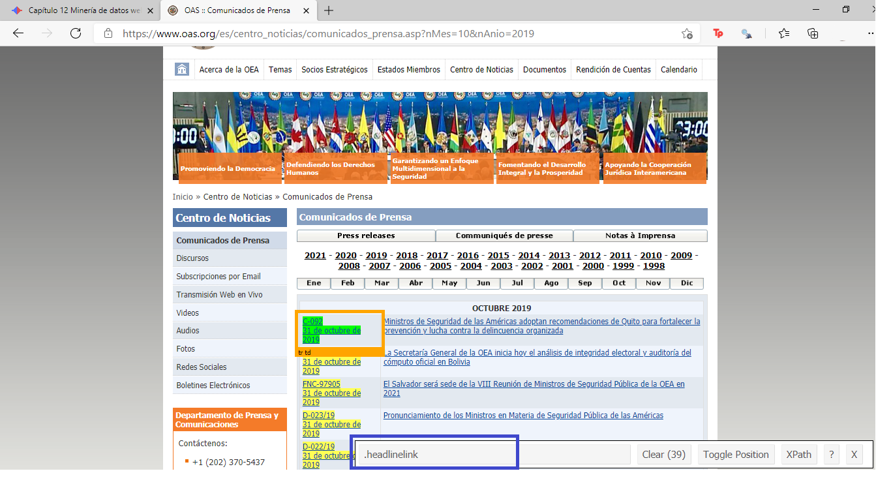
Resaltado en verde se ve el elemento que nos interesa (que pinchamos con el mouse), y en el cuadrado azul de abajo aparece el nombre que utilizaremos (.headlinelink):
web_date_releases_10_2019 <- web_comunicados_10_2019 %>%
html_nodes(".headlinelink") %>%
html_text()
## Podemos ver las fechas de publicaciones con la función head. n indica cuántas observaciones queremos que muestre
head(web_date_releases_10_2019, n = 16)
## [1] "C-09231 de octubre de 2019"
## [2] "C-09131 de octubre de 2019"
## [3] "FNC-9790531 de octubre de 2019"
## [4] "D-023/1931 de octubre de 2019"
## [5] "D-022/1931 de octubre de 2019"
## [6] "C-09030 de octubre de 2019"
## [7] "D-021/1930 de octubre de 2019"
## [8] "D-020/1929 de octubre de 2019"
## [9] "C-08928 de octubre de 2019"
## [10] "Aviso de Prensa28 de octubre de 2019"
## [11] "Aviso de Prensa28 de octubre de 2019"
## [12] "C-08724 de octubre de 2019"
## [13] "FNC-9784723 de octubre de 2019"
## [14] "D-019/1923 de octubre de 2019"
## [15] "Aviso de Prensa23 de octubre de 2019"
## [16] "C-08622 de octubre de 2019"Ejercicio 12B
Consigue los títulos de las noticias de la página web de la revista The Economist como su sección internacional
Repetimos los mismos pasos del ejercicio anterior:
download_html("https://www.economist.com/international/?page=1",
"webs/economist_internacional.html")
economist_internacional <- read_html("webs/economist_internacional.html",
encoding = "UTF-8")
economist_titulos <- economist_internacional %>%
html_nodes(".headline-link") %>%
html_text()
head(economist_titulos, n = 16)
## [1] "Women in warFemale soldiers are changing how armed forces work"
## [2] "India IncIndia has proved to be a popular—and clever—investor in poor countries"
## [3] "Here’s looking at meCovid-19 is fuelling a Zoom-boom in cosmetic surgery"
## [4] "Virtual insanityLove them or hate them, virtual meetings are here to stay"
## [5] "Tardius, Inferior, InfirmiorWhen brawn and technology ruin the spectacle of sports"
## [6] "Spreading the needleAlmost one billion doses of covid-19 vaccines have been produced"
## [7] "Banged upBrain injuries are startlingly common among those who have committed crimes"
## [8] "Blue-helmet bluesUN peacekeeping is hamstrung by national rules for its troops"
## [9] "It might seem crazyThe pandemic has changed the shape of global happiness"
## [10] "Hope for tomorrowNicaragua shows how poor countries can reduce domestic violence"
## [11] "A terrible tollViolence against women is a scourge on poor countries"
## [12] "Default optionPoor countries struggling with debt fight to get help"Ejercicio 12C
En lugar de usar AND, usa OR entre los diferentes términos de búsqueda. Ambas búsquedas devolverán tweets muy diferentes.
## Primero vemos la consulta con las menciones de Piñera Y Bachelet (como en la sección 12.4.2.1)
consulta_3 <- search_tweets(q = "piñera AND bachelet", n = 20)
head(consulta_3)
## Ahora ocupamos OR para ver las menciones de Piñera O Bachelet
consulta_12c <- search_tweets(q = "piñera OR bachelet", n = 20)
head(consulta_12c)Ejercicio 12D
Buscar tweets en español que no sean retweets
## Ocupamos el código de la sección 12.4.2.3
consulta_12d_pinera <- search_tweets("piñera", lang = "es", include_rts = FALSE, n=20)
consulta_12d_bachelet <- search_tweets("bachelet", lang = "es", include_rts = FALSE, n=20)
head(consulta_12d_pinera)
head(consulta_12d_bachelet)Capítulo 13: Análisis cuantitativo de textos políticos
(Este capítulo ha quedado en blanco, pues no fue factible adaptar las respuestas al formato de este documento. De todas formas, te sugerimos probar los ejercicios por tu cuenta.)
Capítulo 14: Análisis de redes
Paquetes y carga de datos
library(tidyverse)
library(paqueteadp)
## install.packages("tidygraph")
library(tidygraph)
library(ggraph)
library(ggcorrplot)
data("copatrocinio_arg")
data("senadores_arg")
tg_copatrocinio_arg <- tbl_graph(nodes = senadores_arg, edges = copatrocinio_arg,
directed = T)
tg_copatrocinio_arg <- tg_copatrocinio_arg %>%
activate("edges") %>%
mutate(d_copatrocinio = if_else(n_copatrocinio >= 1, 1, 0),
n_copatrocinio_inv = 1 / n_copatrocinio)Ejercicio 14A
Prueba la función
geom_edge_link()en lugar degeom_edge_arc(). ¿Cuál es la diferencia? ¿Qué visualización crees que es más clara?
Creamos el diseño gráfico:
set.seed(1)
layout_fr <- create_layout(tg_copatrocinio_arg, "fr", weights = n_copatrocinio)Gráfico con geom_edge_link():
ggraph(layout_fr) +
geom_edge_link(arrow = arrow(length = unit(3, 'mm')),
color = "lightgrey") +
geom_node_point(size = 5) +
theme_void()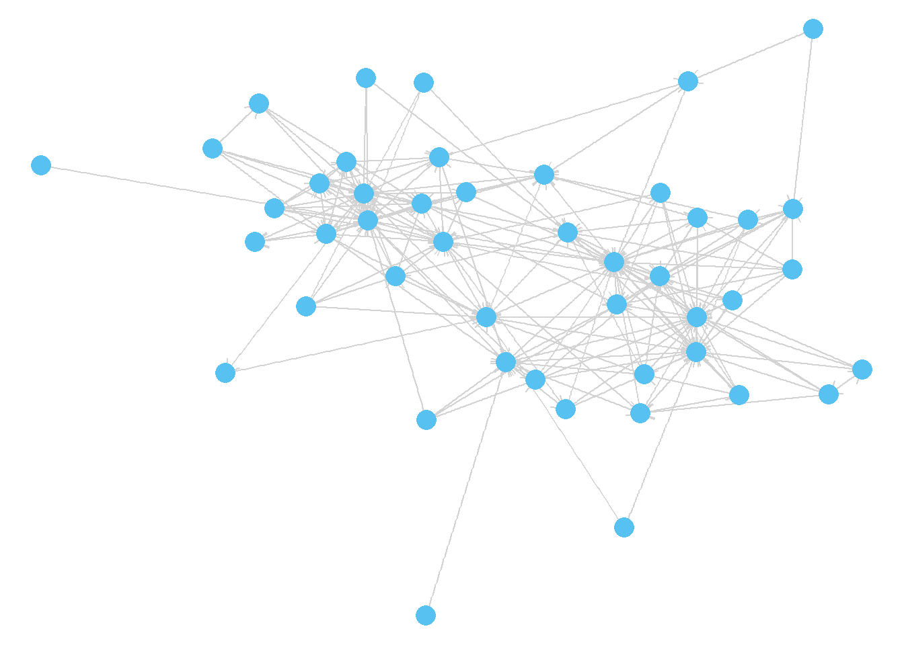
Gráfico con geom_edge_arc():
ggraph(layout_fr) +
geom_edge_arc(arrow = arrow(length = unit(3, 'mm')),
color = "black") +
geom_node_point(size = 5, color = "grey") +
theme_void()
Con geom_edge_arc() notamos que las líneas que conectan los nodos ya no son rectas, sino arqueadas y además podemos ver que se puede distinguir más la flecha de la dirección.
Ejercicio 14B
Edita la base de datos del nodo en el objeto
tidygraph, con una columna que distinga los senadores metropolitanos (provinciasCAP FEDERALyBUENOS AIRES) del resto. Luego, usa esta nueva variable para colorear los nodos de la representación visual de la red.
## Creamos la variable dummy en la base de senadores, el nuevo objeto tidygraph...
senadores_arg_14b <- senadores_arg %>%
mutate(d_metropolitano = case_when(provincia %in% c("CAP FEDERAL", "BUENOS AIRES") ~ 1,
TRUE ~ 0),
d_metropolitano = as.factor(d_metropolitano))
tg_copatrocinio_arg_14b <- tbl_graph(nodes = senadores_arg_14b, edges = copatrocinio_arg,
directed = T)
tg_copatrocinio_arg_14b <- tg_copatrocinio_arg_14b %>%
activate("edges") %>%
mutate(d_copatrocinio = if_else(n_copatrocinio >= 1, 1, 0),
n_copatrocinio_inv = 1 / n_copatrocinio)
## y el diseño gráfico
layout_fr <- create_layout(tg_copatrocinio_arg_14b, "fr", weights = n_copatrocinio)Ya tenemos un nuevo objeto tidygraph listo, ahora veremos cómo se ve resaltando aquellos senadores metropolitanos:
ggraph(layout_fr) +
geom_edge_link(mapping = aes(alpha = n_copatrocinio)) +
geom_node_point(mapping = aes(color = d_metropolitano, shape = bloque_politico), size = 5) +
scale_shape_manual(values = 15:18) + # Editar ligeramente las formas
theme_void()
Y listo! Ya tenemos nuestra red con los senadores metropolitanos diferenciados de aquellos de otras provincias.
Ejercicio 14C
Crea un gráfico para comparar algún puntaje de centralidad por si el legislador es del área metropolitana (como en el ejercicio anterior).
Ocuparemos el objeto tidygraph del ejercicio anterior ya que tiene creada la dummy de metropolitano:
tg_copatrocinio_arg_centr14c <- tg_copatrocinio_arg_14b %>%
activate("nodes") %>%
mutate(
c_in_degree = centrality_degree(mode = "in"),
c_out_degree = centrality_degree(mode = "out"),
c_in_strength = centrality_degree(mode = "in", weights = n_copatrocinio),
c_out_strength = centrality_degree(mode = "out", weights = n_copatrocinio),
c_pagerank = centrality_pagerank(weights = n_copatrocinio),
c_betweenness = centrality_betweenness(),
c_betweenness_w = centrality_betweenness(weights = n_copatrocinio_inv),
c_closeness = centrality_closeness(),
c_closeness_w = centrality_closeness(weights = n_copatrocinio_inv)
)
## Warning: Problem with `mutate()` input `c_closeness`.
## i At centrality.c:2784 :closeness centrality is not well-defined for disconnected graphs
## i Input `c_closeness` is `centrality_closeness()`.
## Warning in closeness(graph = graph, vids = V(graph), mode = mode, weights
## = weights, : At centrality.c:2784 :closeness centrality is not well-
## defined for disconnected graphs
## Warning: Problem with `mutate()` input `c_closeness_w`.
## i At centrality.c:2617 :closeness centrality is not well-defined for disconnected graphs
## i Input `c_closeness_w` is `centrality_closeness(weights = n_copatrocinio_inv)`.
## Warning in closeness(graph = graph, vids = V(graph), mode = mode, weights
## = weights, : At centrality.c:2617 :closeness centrality is not well-
## defined for disconnected graphsVeamos la correlación entre las medidas de centralidad:
library(ggcorrplot)
corr_centralidad14c <- tg_copatrocinio_arg_centr14c %>%
select(starts_with("c_")) %>%
as.data.frame() %>%
cor(use = "pairwise") %>%
round(1)
ggcorrplot(corr_centralidad14c, type = "lower", lab = T, show.legend = F)
Por último, graficamos algunas medidas de centralidad:
##PageRank
ggplot(data = tg_copatrocinio_arg_centr14c %>%
as_tibble(),
aes(x = d_metropolitano, y = c_pagerank)) +
geom_boxplot() +
labs(x = "Metropolitano",
y = "PageRank",
title = "PageRank por área")
## Betweenness
ggplot(data = tg_copatrocinio_arg_centr14c %>%
as_tibble(),
aes(x = d_metropolitano, y = c_betweenness)) +
geom_boxplot() +
labs(x = "Metropolitano",
y = "Betweenness",
title = "Betweenness por área") 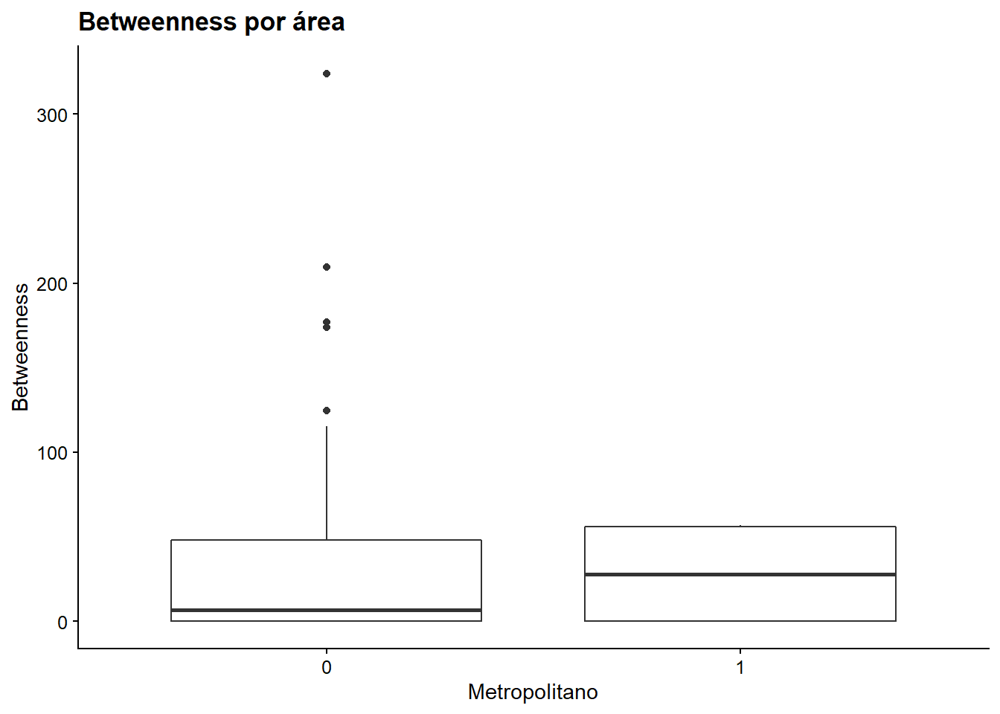
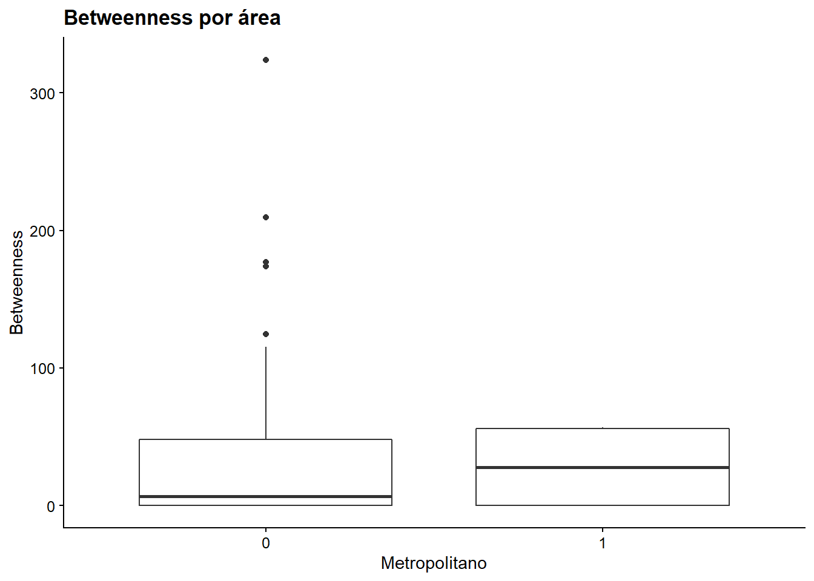
Capítulo 15: Análisis de componentes principales
Paquetes y carga de datos
library(tidyverse)
library(paqueteadp)
## install.packages("FactoMineR")
library(FactoMineR)
## install.packages("factoextra")
library(factoextra)
library(GGally)
library(ggcorrplot)
library(skimr)
data("lapop")Ejercicio 15A
Asumamos que se te pide que midas la valoración del autoritarismo en América Latina. ¿Cómo medirías este concepto? Elije 5 o más preguntas de la encuesta LAPOP (puedes consultar el libro de códigos aquí) que usarías para medir el antiamericanismo.
Nota: ocuparemos algunas de las variables que se vieron a lo largo del capítulo en los ejercicios
Algunas preguntas que podrían servir para medir la valoración del autoritarismo:
| Código variable | Pregunta | Medición |
|---|---|---|
| JC10 | Alguna gente dice que en ciertas circunstancias se justificaría que los militares de este país tomen el poder por un golpe de Estado. En su opinión se justificaría que hubiera un golpe de estado por los militares frente a mucha delincuencia | Variable dicotómica |
| JC13 | Alguna gente dice que en ciertas circunstancias se justificaría que los militares de este país tomen el poder por un golpe de Estado. En su opinión se justificaría que hubiera un golpe de estado por los militares frente a mucha corrupción | Variable dicotómica |
| JC15A | ¿Cree usted que cuando el país enfrenta momentos muy difíciles, se justifica que el presidente del país cierre el Congreso/Asamblea y gobierne sin Congreso/Asamblea? | Variable dicotómica |
| B12 | ¿Hasta qué punto tiene confianza usted en las Fuerzas Armadas o Ejército? | Escala de 1 a 7, donde 1 es nada y 7 mucho |
| B18 | ¿Hasta qué punto tiene confianza usted en la Policía Nacional? | Escala de 1 a 7, donde 1 es nada y 7 mucho |
| B47A | ¿Hasta qué punto tiene usted confianza en las elecciones en este país? | Escala de 1 a 7, donde 1 es nada y 7 mucho |
| ING4 | Puede que la democracia tenga problemas, pero es mejor que cualquier otra forma de gobierno. ¿Hasta qué punto está de acuerdo o en desacuerdo con esta frase? | Escala de 1 a 7, donde el número 1 representa “muy en desacuerdo” y el número 7 representa “muy de acuerdo” |
| PN4 | En general, ¿usted diría que está muy satisfecho(a), satisfecho(a), insatisfecho(a) o muy insatisfecho(a) con la forma en que la democracia funciona en su país? | Escala del 1 al 4, en donde 1 es Muy satisfecho(a) y 4 Muy insatisfecho(a) |
| L1 | Según el sentido que tengan para usted los términos “izquierda” y “derecha” cuando piensa sobre su punto de vista político, ¿dónde se encontraría usted en esta escala? | Escala del 1 al 10, donde 1 es izquierda y 10 derecha |
Para crear nuestro índice de valorización del autoritarismo ocuparemos las variables jc15a, b12, b18, ing4 y l1 pero tú puedes elegir las que te parezcan más apropiadas1
Ejercicio 15B
Estandariza y omite las NAs de las preguntas que elegiste en la primera parte para el sentimiento antiamericano.
Realiza un Análisis de Componentes Principales y responde las siguientes preguntas:
¿Cuáles son los componentes más importantes?
¿Qué variables los componen?
¿Qué dimensiones están involucradas en el concepto de valorización del autoritarismo que estás realizando?
skim(lapop)| Name | lapop |
| Number of rows | 7655 |
| Number of columns | 14 |
| _______________________ | |
| Column type frequency: | |
| character | 1 |
| numeric | 13 |
| ________________________ | |
| Group variables | None |
Variable type: character
| skim_variable | n_missing | complete_rate | min | max | empty | n_unique | whitespace |
|---|---|---|---|---|---|---|---|
| pais_nombre | 0 | 1 | 4 | 9 | 0 | 10 | 0 |
Variable type: numeric
| skim_variable | n_missing | complete_rate | mean | sd | p0 | p25 | p50 | p75 | p100 | hist |
|---|---|---|---|---|---|---|---|---|---|---|
| id | 0 | 1 | 3828.00 | 2209.95 | 1 | 1914 | 3828 | 5742 | 7655 | ▇▇▇▇▇ |
| justifica_golpe | 0 | 1 | 0.38 | 0.49 | 0 | 0 | 0 | 1 | 1 | ▇▁▁▁▅ |
| justifica_cierre_cong | 0 | 1 | 0.21 | 0.41 | 0 | 0 | 0 | 0 | 1 | ▇▁▁▁▂ |
| conf_cortes | 0 | 1 | 3.27 | 1.58 | 1 | 2 | 3 | 4 | 7 | ▇▆▅▃▂ |
| conf_instit | 0 | 1 | 4.40 | 1.92 | 1 | 3 | 5 | 6 | 7 | ▅▃▅▅▇ |
| conf_congreso | 0 | 1 | 3.44 | 1.84 | 1 | 2 | 3 | 5 | 7 | ▇▃▅▃▃ |
| conf_presidente | 0 | 1 | 3.30 | 2.05 | 1 | 1 | 3 | 5 | 7 | ▇▂▂▂▃ |
| conf_partidos | 0 | 1 | 2.65 | 1.65 | 1 | 1 | 2 | 4 | 7 | ▇▂▂▁▁ |
| conf_medios | 0 | 1 | 4.26 | 1.80 | 1 | 3 | 4 | 6 | 7 | ▆▃▆▆▇ |
| conf_elecciones | 0 | 1 | 3.87 | 1.91 | 1 | 2 | 4 | 5 | 7 | ▇▅▆▅▆ |
| satisfecho_dem | 0 | 1 | 0.38 | 0.48 | 0 | 0 | 0 | 1 | 1 | ▇▁▁▁▅ |
| voto_opositor | 0 | 1 | 6.07 | 2.73 | 1 | 4 | 6 | 8 | 10 | ▃▅▇▆▆ |
| manifestaciones | 0 | 1 | 6.66 | 2.74 | 1 | 5 | 7 | 9 | 10 | ▂▃▆▆▇ |
Vamos a descargar la base desde la página oficial y elegiremos la primera opción:

Luego guardamos el archivo y lo extraemos en la carpeta donde estemos trabajando.

library(janitor)Nota: Si te costó mucho cargar el dataset tenemos una versión mas acotada. De aquí en adelante puedes ocupar la base lapop2 que se encuentra en el paqueteadp.
lapop2 <- read_csv("00-archivos/ejercicios/capitulo 15/lapop2.csv")
## data("lapop2")La base lapop2 contiene las siguientes variables, puedes ver lo que mide cada una en la respuesta del ejercicio 15A:
| Variable | Código original |
|---|---|
| pos_ideologica | l1 |
| conf_ffaa | b12 |
| conf_policia | b18 |
| conf_elecciones | b47a |
| satisfaccion_dem | pn4 |
| preferencia_dem | ing4 |
| justifica_golpe_delincuencia | jc10 |
| justifica_golpe_corrupcion | jc13 |
| justifica_cierre_cong | jc15a |
Ahora si pasemos a quitar los NA de nuestra base:
## Primero seleccionamos las variables de nuestro interés:
lapop2_num <- lapop2 %>%
select(pos_ideologica,
conf_ffaa,
conf_policia,
preferencia_dem,
justifica_cierre_cong) %>%
mutate_all(as.numeric)
lapop2_num <- lapop2_num %>%
scale() %>%
na.omit() %>%
as_tibble()Primero veamos las correlaciones entre las variables elegidas:
corr_lapop2 <- lapop2_num %>%
cor(use = "pairwise") %>%
round(1)
ggcorrplot(corr_lapop2, type = "lower", lab = T, show.legend = F)
Salta a la vista que las variables con mayor correlación son aquellas referentes a la confianza en las FFAA y la policía nacional. También hay una correlación negativa entre aquellos que prefieren la democracia y quienes justifican un cierre del congreso a manos del presidente.
Ahora creamos el PCA:
pca_15b <- princomp(lapop2_num)
summary(pca_15b, loadings = T, cutoff = 0.3)
## Importance of components:
## Comp.1 Comp.2 Comp.3 Comp.4 Comp.5
## Standard deviation 1.2 1.05 0.98 0.93 0.71
## Proportion of Variance 0.3 0.22 0.19 0.17 0.10
## Cumulative Proportion 0.3 0.53 0.72 0.90 1.00
##
## Loadings:
## Comp.1 Comp.2 Comp.3 Comp.4 Comp.5
## pos_ideologica 0.966
## conf_ffaa 0.653 0.692
## conf_policia 0.672 -0.708
## preferencia_dem 0.587 -0.761
## [ reached getOption("max.print") -- omitted 1 row ]
eig_val <- get_eigenvalue(pca_15b)
eig_val
## eigenvalue variance.percent cumulative.variance.percent
## Dim.1 1.50 30 30
## Dim.2 1.11 22 53
## Dim.3 0.95 19 72
## Dim.4 0.86 17 90
## Dim.5 0.51 10 100Según lo anterior nos quedaríamos con el primer y segundo componente.
Ahora para saber qué variables los componentes ocupamos los siguientes comandos:
fviz_pca_biplot(pca_15b, repel = F, col.var = "black", col.ind = "gray")
fviz_contrib(pca_15b, choice = "var", axes = 1, top = 10)
fviz_contrib(pca_15b, choice = "var", axes = 2, top = 10)


Para el primer componente las variables que más aportan son la confianza en la policía y en las Fuerzas Armadas. Para el segundo son si se justifica el cierre del congreso y la preferencia por la democracia.
Respecto a las dimensiones medidas, el primer componente se relaciona más con la confianza en las fuerzas del orden y armadas, mientras que el segundo está mas relacionado con los sentimientos hacia las instituciones políticas y la percepción de la democracia.
Ejercicio 15C
Utilizando el índice de confianza en la democracia en América Latina que acabamos de crear, analiza con modelos de regresión lineal qué variables tienen un alto poder explicativo sobre esta variable, son las variables de ideología, ingresos o edad importantes?
En primer lugar hacemos las modificaciones que se vieron durante el capítulo:
data("lapop")
## Creamos la media de confianza en elecciones por país
lapop <- lapop %>%
group_by(pais_nombre) %>%
mutate(conf_elecciones_prom = mean(conf_elecciones)) %>%
ungroup()
## Modificamos las variables para que sean numéricas
lapop_num <- lapop %>%
select(justifica_golpe, justifica_cierre_cong, conf_cortes, conf_instit, conf_congreso,
conf_presidente, conf_partidos, conf_medios, conf_elecciones, satisfecho_dem,
voto_opositor, manifestaciones) %>%
mutate_all(as.numeric)
## y quitamos los valores perdidos
lapop_num <- lapop_num %>%
scale() %>%
na.omit() %>%
as_tibble()
## Generamos valores PCA
pca <- princomp(lapop_num)
summary(pca, loadings = T, cutoff = 0.3)
## Importance of components:
## Comp.1 Comp.2 Comp.3 Comp.4 Comp.5 Comp.6 Comp.7
## Standard deviation 1.86 1.22 1.11 0.976 0.893 0.882 0.827
## Comp.8 Comp.9 Comp.10 Comp.11 Comp.12
## Standard deviation 0.800 0.750 0.725 0.686 0.657
## [ reached getOption("max.print") -- omitted 2 rows ]
##
## Loadings:
## Comp.1 Comp.2 Comp.3 Comp.4 Comp.5 Comp.6 Comp.7
## justifica_golpe 0.693 0.501
## Comp.8 Comp.9 Comp.10 Comp.11 Comp.12
## justifica_golpe 0.304
## [ reached getOption("max.print") -- omitted 11 rows ]
pca_1 <- PCA(lapop_num, graph = F)
## Obtenemos los Eigenvalores
eig <- get_eigenvalue(pca)
eig_1 <- get_eig(pca_1)
## Añadimos los valores de PCA a la base original
lapop <- bind_cols(lapop, as_tibble(pca$scores))
data_pca <- pca_1$ind$coord%>%
as_tibble() %>%
mutate(pca_01 = (Dim.1 * 28.7 + Dim.2 * 12.3 + Dim.3 * 10.3 +
Dim.4 * 7.9) / 60)
lapop <- bind_cols(lapop, data_pca %>% select(pca_01))
## Por último reescalamos el índice de democracia
lapop <- lapop %>%
mutate(democracy_index = GGally::rescale01(pca_01) * 100)%>%
select(democracy_index, everything())Teniendo el índice de democracia pasamos a crear un modelo de regresión. La variable dependiente en este caso sería democracy_index
modelo_15c <- lm(democracy_index ~ justifica_golpe + justifica_cierre_cong +
conf_cortes + conf_instit + conf_congreso +
conf_presidente + conf_partidos + conf_medios + conf_elecciones +
satisfecho_dem + voto_opositor + manifestaciones,
data = lapop)
library(texreg)
screenreg(modelo_15c)
##
## ==================================
## Model 1
## ----------------------------------
## (Intercept) -13.28 ***
## (0.00)
## justifica_golpe 1.35 ***
## (0.00)
## justifica_cierre_cong 5.88 ***
## (0.00)
## conf_cortes 1.81 ***
## (0.00)
## conf_instit 1.23 ***
## (0.00)
## conf_congreso 1.41 ***
## (0.00)
## conf_presidente 1.61 ***
## (0.00)
## conf_partidos 1.96 ***
## (0.00)
## conf_medios 0.94 ***
## (0.00)
## conf_elecciones 1.91 ***
## (0.00)
## satisfecho_dem 5.88 ***
## (0.00)
## voto_opositor 1.26 ***
## (0.00)
## manifestaciones 1.14 ***
## (0.00)
## ----------------------------------
## R^2 1.00
## Adj. R^2 1.00
## Num. obs. 7655
## ==================================
## *** p < 0.001; ** p < 0.01; * p < 0.05Capítulo 16: Mapas y datos espaciales
Paquetes y carga de datos
library(tidyverse)
library(paqueteadp)
## install.packages("sf")
library(sf)
library(ggrepel)
library(gridExtra)
## install.packages("devtools")
library(devtools)
## install.packages("cli")
library(cli)
## install_github("ropensci/rnaturalearthhires") # para instalar rnaturalearthhires
library(rnaturalearthhires)
## install.packages("spdep")
library(spdep)Ejercicio 16A
- Descarga el shapefile de Sudamérica de ArcGIS y cárgalo en R usando
read_sf(). Selecciona sólo las variables “CNTRY_NAME,” “ISO_3DIGIT” y “geometry.”
Primero descargamos el shapefile, haciendo clic en el botón de “Descargar,” como se ve en la imagen

Luego lo cargamos en R y seleccionamos las variables de interés:
shp_sudamerica <- read_sf("00-archivos/ejercicios/capitulo 16/SouthAmerica/SouthAmerica.shp")
shp_sudamerica <- shp_sudamerica %>%
select(CNTRY_NAME, ISO_3DIGIT, geometry)
- Filtra la base de datos por la variable ‘CNTRY_NAME’ para eliminar las observaciones de “South Georgia & the South Sandwich Is.” y “Falkland Is.”
shp_sudamerica <- shp_sudamerica %>%
filter(CNTRY_NAME != "South Georgia & the South Sandwich Is." & CNTRY_NAME != "Falkland Is.")
shp_sudamerica
## Simple feature collection with 13 features and 2 fields
## geometry type: MULTIPOLYGON
## dimension: XY
## bbox: xmin: -1e+07 ymin: -7500000 xmax: -3900000 ymax: 1400000
## projected CRS: Sphere_Mercator
## # A tibble: 13 x 3
## CNTRY_NAME ISO_3DIGIT geometry
## * <chr> <chr> <MULTIPOLYGON [m]>
## 1 French Guia~ GUF (((-5747006 448950, -5820491 351265, -5848237 ~
## 2 Guyana GUY (((-6279248 216260, -6375021 219344, -6396829 ~
## 3 Suriname SUR (((-6279248 216260, -6302761 225413, -6360443 ~
## # ... with 10 more rows
- Trazar el shapefile usando
ggplot()ygeom_sf().
ggplot(data = shp_sudamerica) +
geom_sf()
Ejercicio 16B
- Selecciona los países del Cono Sur (Chile, Argentina y Uruguay) y grafícalos.
shp_conosur <- shp_sudamerica %>%
filter(CNTRY_NAME == "Chile" | CNTRY_NAME == "Argentina" | CNTRY_NAME == "Uruguay")
ggplot(data = shp_conosur) +
geom_sf() +
theme_bw() #Podemos cambiar el tema de fondo
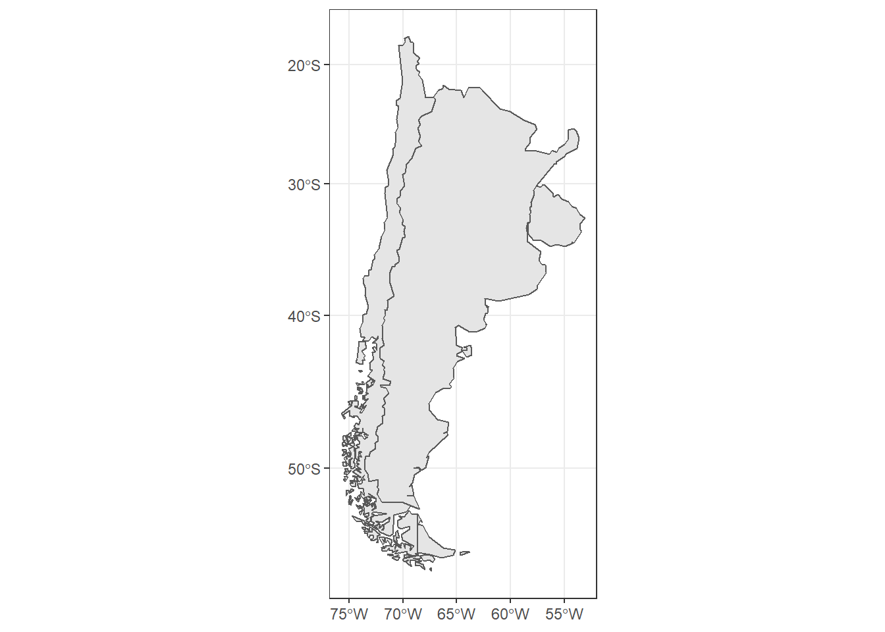
- Genera un nuevo shapefile con las subregiones de América del Sur. Sugerimos lo siguiente:
- Mar Caribe, correspondiente a Colombia, Venezuela, Surinam, Guayana y Guayana Francesa.
- Región Andina, correspondiente a Bolivia, Ecuador, Perú y Colombia.
- Región Oriental, correspondiente a Brasil y a Paraguay.
- Cono Sur, correspondiente a Chile, Argentina y Uruguay.
Siguiendo las indicaciones creamos el nuevo shapefile con las nuevas subregiones:
## Vemos cómo están escritos los nombres de los países para que no hayan errores al clasificarlos
shp_sudamerica$CNTRY_NAME
## [1] "French Guiana" "Guyana" "Suriname" "Venezuela"
## [5] "Argentina" "Bolivia" "Brazil" "Chile"
## [9] "Ecuador" "Paraguay" "Peru" "Uruguay"
## [13] "Colombia"
shp_subregiones <- shp_sudamerica %>%
mutate(subregion = case_when(
CNTRY_NAME %in% c("Colombia",
"Venezuela",
"Suriname",
"Guyana",
"French Guiana") ~ "Mar Caribe",
CNTRY_NAME %in% c("Bolivia",
"Ecuador",
"Peru",
"Colombia") ~ "Región Andina",
CNTRY_NAME %in% c("Brazil",
"Paraguay") ~ "Región Oriental",
CNTRY_NAME %in% c("Chile",
"Argentina",
"Uruguay") ~ "Cono Sur"
))
- Descarga la base de datos ampliada (‘Country-Year: V-Dem Full+Others’) de V-Dem y selecciona sólo las siguientes variables: ‘country_name,’ ‘country_text_id,’ ‘year,’ ‘v2x_polyarchy,’’ e_migdppc’. Fíltralas para considerar sólo el período entre 1996 y 2016 (los últimos 20 años, para los que hay datos disponibles para todas las variables).
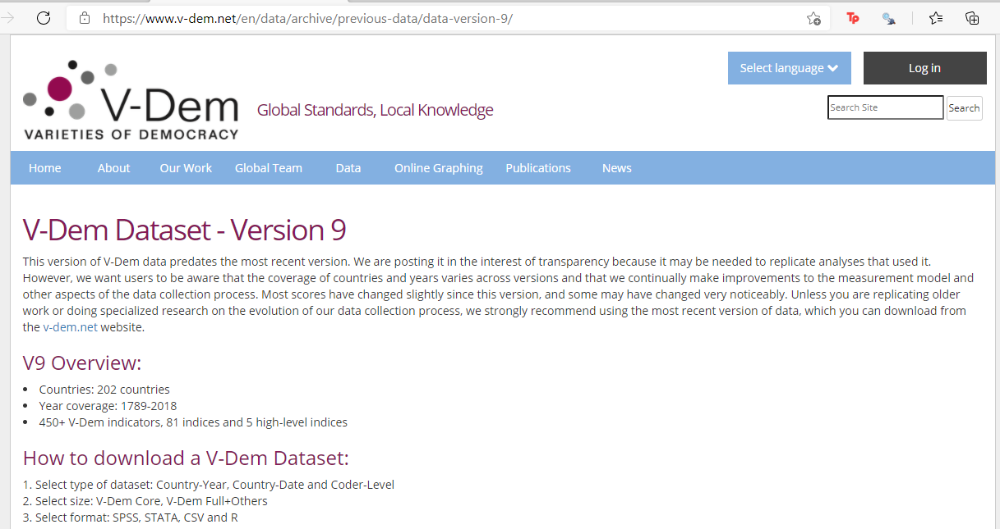
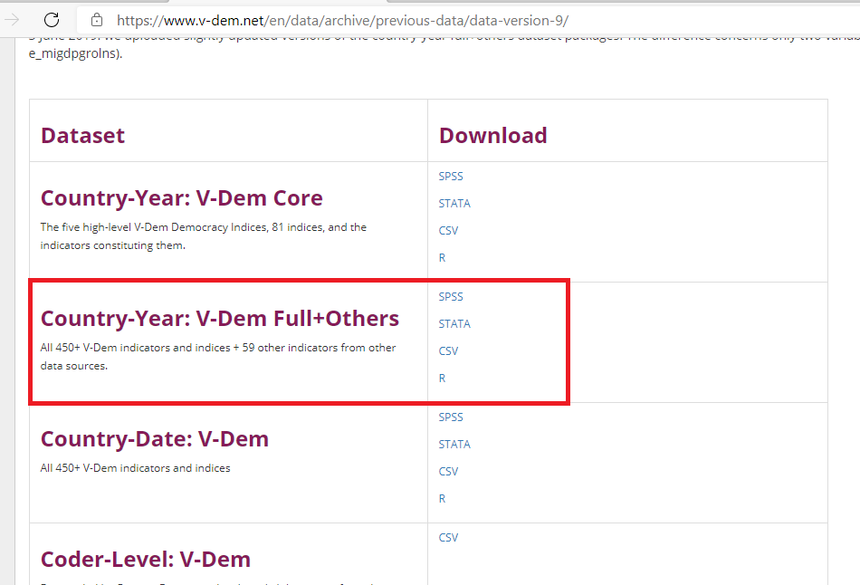
v_dem <- read_rds("00-archivos/ejercicios/capitulo 16/V-Dem/V-Dem-CY-Full+Others-v9.rds")
v_dem_reducida <- v_dem %>%
select(country_name, country_text_id, year, v2x_polyarchy, e_migdppc) %>%
filter(year >= 1996 & year <= 2016)
- Usando
left_join(), añade el shapefile original a la base de datos cargada del ejercicio anterior. Consejo: utiliza los argumentosby.x="ISO_3DIGIT"yby.y="country_text_id". Revisa la base de datos. Notarás que falta un país. ¿Cuál es?
shp_sudamerica_data <- shp_sudamerica %>%
left_join(v_dem_reducida,
by = c("ISO_3DIGIT" = "country_text_id"))
head(shp_sudamerica_data)
## Simple feature collection with 6 features and 6 fields
## geometry type: MULTIPOLYGON
## dimension: XY
## bbox: xmin: -6800000 ymin: 130000 xmax: -5700000 ymax: 950000
## projected CRS: Sphere_Mercator
## # A tibble: 6 x 7
## CNTRY_NAME ISO_3DIGIT geometry country_name year
## <chr> <chr> <MULTIPOLYGON [m]> <chr> <dbl>
## 1 French Gu~ GUF (((-5747006 448950, -582~ <NA> NA
## 2 Guyana GUY (((-6279248 216260, -637~ Guyana 1996
## 3 Guyana GUY (((-6279248 216260, -637~ Guyana 1997
## # ... with 3 more rows, and 2 more variables
unique(shp_sudamerica_data$CNTRY_NAME)
## [1] "French Guiana" "Guyana" "Suriname" "Venezuela"
## [5] "Argentina" "Bolivia" "Brazil" "Chile"
## [9] "Ecuador" "Paraguay" "Peru" "Uruguay"
## [13] "Colombia"Ejercicio 16C
- Generar centroides para los países (Tip: usar
CNTRY_NAME).
shp_sudamerica_16c <- shp_sudamerica %>%
mutate(centroid = map(geometry, st_centroid),
coords = map(centroid, st_coordinates), coords_x = map_dbl(coords, 1),
coords_y = map_dbl(coords, 2))
ggplot(data = shp_sudamerica_16c) +
geom_sf()+
geom_text_repel(mapping = aes(coords_x, coords_y, label = CNTRY_NAME),
size = 4, min.segment.length = 0)+
labs(x = "", y = "")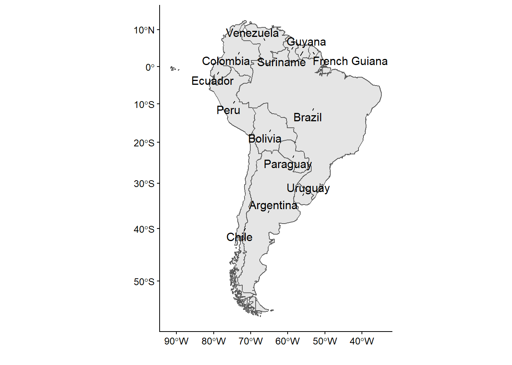
- Generar un mapa usando el argumento
filldeggplot()para usar un color diferente para cada país.
## Mapa simple, sin ningún tema
ggplot(data = shp_sudamerica_16c) +
geom_sf(aes(fill = CNTRY_NAME)) +
labs(x = "",
y = "",
fill = "") # Le quitamos la etiqueta de la leyenda del argumento `fill`
## Mapa con tema de `ggthemes`
library(maps)
library(ggthemes)
ggplot(data = shp_sudamerica_16c) +
geom_sf(aes(fill = CNTRY_NAME)) +
labs(x = "",
y = "",
fill = "") +
theme_map()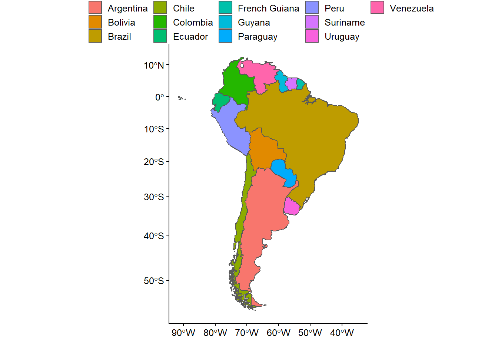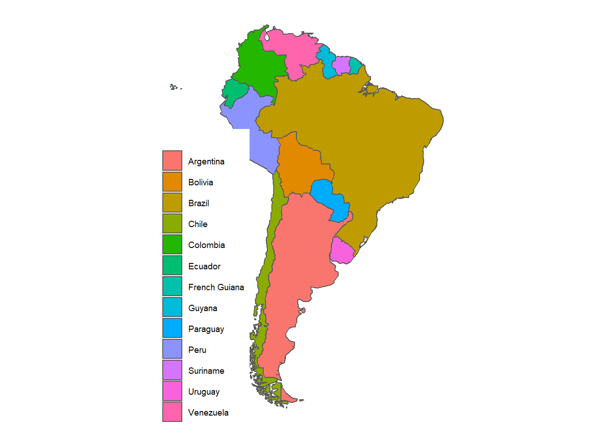
El paquete ggthemes tiene muchos fondos y temas que son compatibles con gráficos creados con ggplot. Puedes explorar más en este link.
- Grafique un mapa combinando los atributos de los dos ejercicios anteriores.
Ahora creamos un mapa con etiquetas para los distintos países en conjunto con diferentes colores:
## Mapa con `geom_text_repel`
ggplot(data = shp_sudamerica_16c) +
geom_sf(aes(fill = CNTRY_NAME)) +
geom_text_repel(mapping = aes(coords_x,
coords_y,
label = CNTRY_NAME),
size = 4,
min.segment.length = 0)+
labs(x = "",
y = "",
fill = "") +
theme_bw()
## Mapa con `geom_label_repel`
ggplot(data = shp_sudamerica_16c) +
geom_sf(aes(fill = CNTRY_NAME),
show.legend = FALSE) + # Le quitamos la leyenda del significado de `fill`
geom_label_repel(mapping = aes(coords_x,
coords_y,
label = CNTRY_NAME),
size = 3,
min.segment.length = 0)+
labs(x = "",
y = "",
fill = "") +
theme_bw()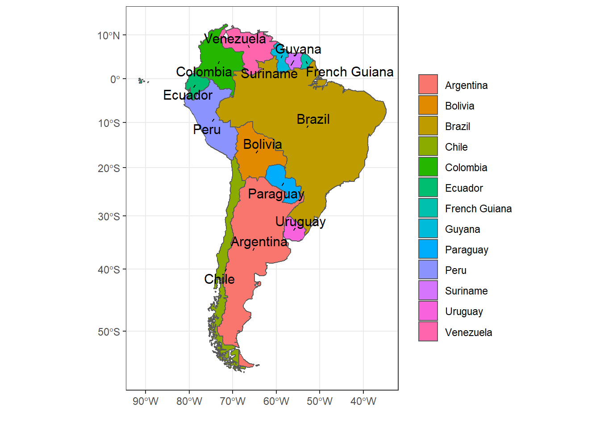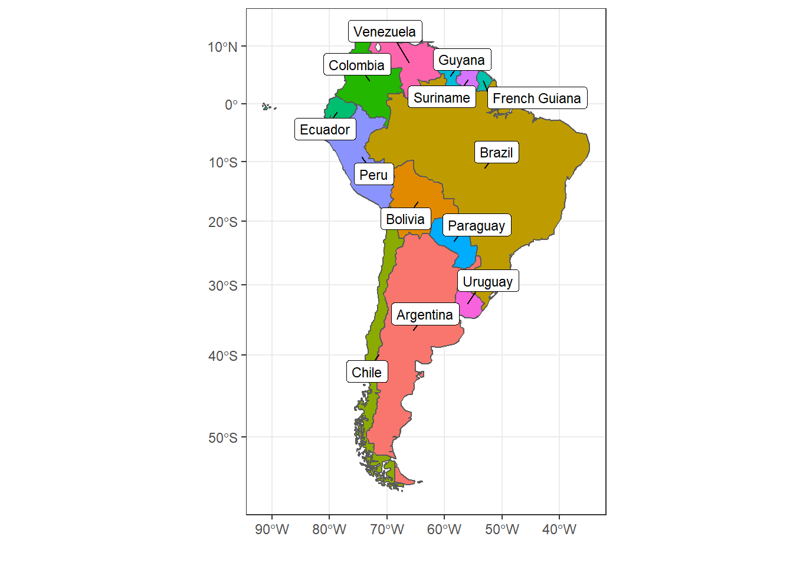
- Crear un mapa con el PIB per cápita (
e_migdppc) de cada país en el año 2016. ¿Cuáles son los países que no tienen datos para el 2016?
## Primero revisamos nuestros datos:
shp_sudamerica_data %>%
filter(year == 2016) %>%
dplyr::select(CNTRY_NAME, e_migdppc)
## Simple feature collection with 12 features and 2 fields
## geometry type: MULTIPOLYGON
## dimension: XY
## bbox: xmin: -1e+07 ymin: -7500000 xmax: -3900000 ymax: 1400000
## projected CRS: Sphere_Mercator
## # A tibble: 12 x 3
## CNTRY_NAME e_migdppc geometry
## <chr> <dbl> <MULTIPOLYGON [m]>
## 1 Guyana NA (((-6279248 216260, -6375021 219344, -6396829 190~
## 2 Suriname NA (((-6279248 216260, -6302761 225413, -6360443 314~
## 3 Venezuela 13159 (((-7e+06 1134769, -7e+06 1129739, -7e+06 1129492~
## # ... with 9 more rowsGuayana y Surinam son los países que no tienen información sobre el PIB per cápita para el año 2016.
ggplot(data = shp_sudamerica_data %>%
filter(year == 2016)) +
geom_sf(aes(fill = e_migdppc)) +
labs(x = "",
y = "",
fill = "PIB p/c") +
theme_bw()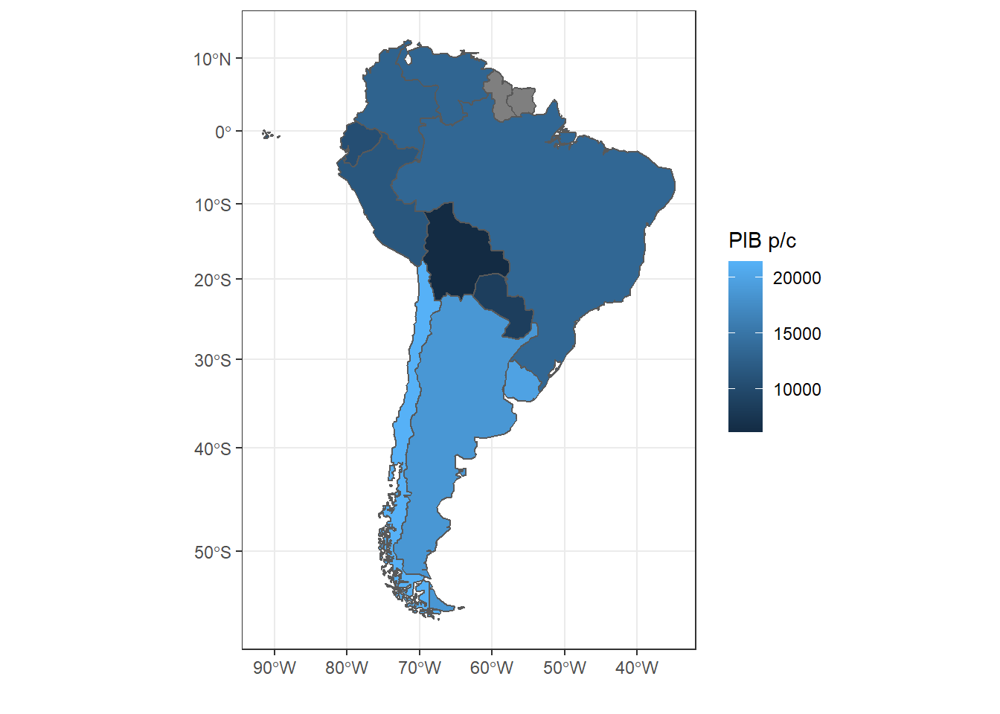
- Crear una tabla con el valor de Democracia (
v2x_polyarchy) de cada país en los años 2013, 2014, 2015 y 2016.
## Primero seleccionamos los datos que nos interesan
datos_16c <- shp_sudamerica_data %>%
filter(year <= 2016 & year >= 2013) %>%
dplyr::select(CNTRY_NAME, year, v2x_polyarchy) %>%
arrange(CNTRY_NAME) # Ordenamos por nombre del país
datos_16c
## Simple feature collection with 48 features and 3 fields
## geometry type: MULTIPOLYGON
## dimension: XY
## bbox: xmin: -1e+07 ymin: -7500000 xmax: -3900000 ymax: 1400000
## projected CRS: Sphere_Mercator
## # A tibble: 48 x 4
## CNTRY_NAME year v2x_polyarchy geometry
## <chr> <dbl> <dbl> <MULTIPOLYGON [m]>
## 1 Argentina 2013 0.778 (((-8e+06 -5438740, -8e+06 -5422816, -8~
## 2 Argentina 2014 0.792 (((-8e+06 -5438740, -8e+06 -5422816, -8~
## 3 Argentina 2015 0.811 (((-8e+06 -5438740, -8e+06 -5422816, -8~
## # ... with 45 more rowsNotamos que la última columna contiene la información de las geometrías. No queremos incluirla en nuestra tabla, por lo que tendremos que eliminar esta columna.
Para crear la tabla ocuparemos los paquetes knitr y kableExtra, que funcionan muy bien con RMarkdown para hacer tablas simples.
library(knitr)
##install.packages("kableExtra")
library(kableExtra)
kable(datos_16c)| CNTRY_NAME | year | v2x_polyarchy | geometry |
|---|---|---|---|
| Argentina | 2013 | 0.78 | MULTIPOLYGON (((-8e+06 -543… |
| Argentina | 2014 | 0.79 | MULTIPOLYGON (((-8e+06 -543… |
| Argentina | 2015 | 0.81 | MULTIPOLYGON (((-8e+06 -543… |
| Argentina | 2016 | 0.78 | MULTIPOLYGON (((-8e+06 -543… |
| Bolivia | 2013 | 0.66 | MULTIPOLYGON (((-7728017 -2… |
| Bolivia | 2014 | 0.65 | MULTIPOLYGON (((-7728017 -2… |
| Bolivia | 2015 | 0.63 | MULTIPOLYGON (((-7728017 -2… |
| Bolivia | 2016 | 0.65 | MULTIPOLYGON (((-7728017 -2… |
| Brazil | 2013 | 0.89 | MULTIPOLYGON (((-5e+06 -2e+… |
| Brazil | 2014 | 0.89 | MULTIPOLYGON (((-5e+06 -2e+… |
| Brazil | 2015 | 0.87 | MULTIPOLYGON (((-5e+06 -2e+… |
| Brazil | 2016 | 0.81 | MULTIPOLYGON (((-5e+06 -2e+… |
| Chile | 2013 | 0.90 | MULTIPOLYGON (((-8246122 -5… |
| Chile | 2014 | 0.90 | MULTIPOLYGON (((-8246122 -5… |
| Chile | 2015 | 0.87 | MULTIPOLYGON (((-8246122 -5… |
| Chile | 2016 | 0.86 | MULTIPOLYGON (((-8246122 -5… |
| Colombia | 2013 | 0.64 | MULTIPOLYGON (((-8371404 -1… |
| Colombia | 2014 | 0.66 | MULTIPOLYGON (((-8371404 -1… |
| Colombia | 2015 | 0.65 | MULTIPOLYGON (((-8371404 -1… |
| Colombia | 2016 | 0.69 | MULTIPOLYGON (((-8371404 -1… |
| Ecuador | 2013 | 0.63 | MULTIPOLYGON (((-8763241 15… |
| Ecuador | 2014 | 0.62 | MULTIPOLYGON (((-8763241 15… |
| Ecuador | 2015 | 0.60 | MULTIPOLYGON (((-8763241 15… |
| Ecuador | 2016 | 0.58 | MULTIPOLYGON (((-8763241 15… |
| Guyana | 2013 | 0.57 | MULTIPOLYGON (((-6279248 21… |
| Guyana | 2014 | 0.55 | MULTIPOLYGON (((-6279248 21… |
| Guyana | 2015 | 0.56 | MULTIPOLYGON (((-6279248 21… |
| Guyana | 2016 | 0.60 | MULTIPOLYGON (((-6279248 21… |
| Paraguay | 2013 | 0.60 | MULTIPOLYGON (((-7e+06 -253… |
| Paraguay | 2014 | 0.60 | MULTIPOLYGON (((-7e+06 -253… |
| Paraguay | 2015 | 0.62 | MULTIPOLYGON (((-7e+06 -253… |
| Paraguay | 2016 | 0.62 | MULTIPOLYGON (((-7e+06 -253… |
| Peru | 2013 | 0.79 | MULTIPOLYGON (((-7735554 -1… |
| Peru | 2014 | 0.78 | MULTIPOLYGON (((-7735554 -1… |
| Peru | 2015 | 0.78 | MULTIPOLYGON (((-7735554 -1… |
| Peru | 2016 | 0.77 | MULTIPOLYGON (((-7735554 -1… |
| Suriname | 2013 | 0.80 | MULTIPOLYGON (((-6279248 21… |
| Suriname | 2014 | 0.80 | MULTIPOLYGON (((-6279248 21… |
| Suriname | 2015 | 0.80 | MULTIPOLYGON (((-6279248 21… |
| Suriname | 2016 | 0.81 | MULTIPOLYGON (((-6279248 21… |
| Uruguay | 2013 | 0.90 | MULTIPOLYGON (((-5934951 -4… |
| Uruguay | 2014 | 0.90 | MULTIPOLYGON (((-5934951 -4… |
| Uruguay | 2015 | 0.85 | MULTIPOLYGON (((-5934951 -4… |
| Uruguay | 2016 | 0.87 | MULTIPOLYGON (((-5934951 -4… |
| Venezuela | 2013 | 0.36 | MULTIPOLYGON (((-7e+06 1134… |
| Venezuela | 2014 | 0.33 | MULTIPOLYGON (((-7e+06 1134… |
| Venezuela | 2015 | 0.31 | MULTIPOLYGON (((-7e+06 1134… |
| Venezuela | 2016 | 0.30 | MULTIPOLYGON (((-7e+06 1134… |
## Le cambiamos los nombres a las columnas
kable(datos_16c, col.names = c("Pais", "Año", "Democracia (V-Dem)", "Geometría"))| Pais | Año | Democracia (V-Dem) | Geometría |
|---|---|---|---|
| Argentina | 2013 | 0.78 | MULTIPOLYGON (((-8e+06 -543… |
| Argentina | 2014 | 0.79 | MULTIPOLYGON (((-8e+06 -543… |
| Argentina | 2015 | 0.81 | MULTIPOLYGON (((-8e+06 -543… |
| Argentina | 2016 | 0.78 | MULTIPOLYGON (((-8e+06 -543… |
| Bolivia | 2013 | 0.66 | MULTIPOLYGON (((-7728017 -2… |
| Bolivia | 2014 | 0.65 | MULTIPOLYGON (((-7728017 -2… |
| Bolivia | 2015 | 0.63 | MULTIPOLYGON (((-7728017 -2… |
| Bolivia | 2016 | 0.65 | MULTIPOLYGON (((-7728017 -2… |
| Brazil | 2013 | 0.89 | MULTIPOLYGON (((-5e+06 -2e+… |
| Brazil | 2014 | 0.89 | MULTIPOLYGON (((-5e+06 -2e+… |
| Brazil | 2015 | 0.87 | MULTIPOLYGON (((-5e+06 -2e+… |
| Brazil | 2016 | 0.81 | MULTIPOLYGON (((-5e+06 -2e+… |
| Chile | 2013 | 0.90 | MULTIPOLYGON (((-8246122 -5… |
| Chile | 2014 | 0.90 | MULTIPOLYGON (((-8246122 -5… |
| Chile | 2015 | 0.87 | MULTIPOLYGON (((-8246122 -5… |
| Chile | 2016 | 0.86 | MULTIPOLYGON (((-8246122 -5… |
| Colombia | 2013 | 0.64 | MULTIPOLYGON (((-8371404 -1… |
| Colombia | 2014 | 0.66 | MULTIPOLYGON (((-8371404 -1… |
| Colombia | 2015 | 0.65 | MULTIPOLYGON (((-8371404 -1… |
| Colombia | 2016 | 0.69 | MULTIPOLYGON (((-8371404 -1… |
| Ecuador | 2013 | 0.63 | MULTIPOLYGON (((-8763241 15… |
| Ecuador | 2014 | 0.62 | MULTIPOLYGON (((-8763241 15… |
| Ecuador | 2015 | 0.60 | MULTIPOLYGON (((-8763241 15… |
| Ecuador | 2016 | 0.58 | MULTIPOLYGON (((-8763241 15… |
| Guyana | 2013 | 0.57 | MULTIPOLYGON (((-6279248 21… |
| Guyana | 2014 | 0.55 | MULTIPOLYGON (((-6279248 21… |
| Guyana | 2015 | 0.56 | MULTIPOLYGON (((-6279248 21… |
| Guyana | 2016 | 0.60 | MULTIPOLYGON (((-6279248 21… |
| Paraguay | 2013 | 0.60 | MULTIPOLYGON (((-7e+06 -253… |
| Paraguay | 2014 | 0.60 | MULTIPOLYGON (((-7e+06 -253… |
| Paraguay | 2015 | 0.62 | MULTIPOLYGON (((-7e+06 -253… |
| Paraguay | 2016 | 0.62 | MULTIPOLYGON (((-7e+06 -253… |
| Peru | 2013 | 0.79 | MULTIPOLYGON (((-7735554 -1… |
| Peru | 2014 | 0.78 | MULTIPOLYGON (((-7735554 -1… |
| Peru | 2015 | 0.78 | MULTIPOLYGON (((-7735554 -1… |
| Peru | 2016 | 0.77 | MULTIPOLYGON (((-7735554 -1… |
| Suriname | 2013 | 0.80 | MULTIPOLYGON (((-6279248 21… |
| Suriname | 2014 | 0.80 | MULTIPOLYGON (((-6279248 21… |
| Suriname | 2015 | 0.80 | MULTIPOLYGON (((-6279248 21… |
| Suriname | 2016 | 0.81 | MULTIPOLYGON (((-6279248 21… |
| Uruguay | 2013 | 0.90 | MULTIPOLYGON (((-5934951 -4… |
| Uruguay | 2014 | 0.90 | MULTIPOLYGON (((-5934951 -4… |
| Uruguay | 2015 | 0.85 | MULTIPOLYGON (((-5934951 -4… |
| Uruguay | 2016 | 0.87 | MULTIPOLYGON (((-5934951 -4… |
| Venezuela | 2013 | 0.36 | MULTIPOLYGON (((-7e+06 1134… |
| Venezuela | 2014 | 0.33 | MULTIPOLYGON (((-7e+06 1134… |
| Venezuela | 2015 | 0.31 | MULTIPOLYGON (((-7e+06 1134… |
| Venezuela | 2016 | 0.30 | MULTIPOLYGON (((-7e+06 1134… |
## Indicamos que queremos eliminar la columna numero 4
remove_column(kable(datos_16c), 4)| CNTRY_NAME | year | v2x_polyarchy |
|---|---|---|
| Argentina | 2013 | 0.78 |
| Argentina | 2014 | 0.79 |
| Argentina | 2015 | 0.81 |
| Argentina | 2016 | 0.78 |
| Bolivia | 2013 | 0.66 |
| Bolivia | 2014 | 0.65 |
| Bolivia | 2015 | 0.63 |
| Bolivia | 2016 | 0.65 |
| Brazil | 2013 | 0.89 |
| Brazil | 2014 | 0.89 |
| Brazil | 2015 | 0.87 |
| Brazil | 2016 | 0.81 |
| Chile | 2013 | 0.90 |
| Chile | 2014 | 0.90 |
| Chile | 2015 | 0.87 |
| Chile | 2016 | 0.86 |
| Colombia | 2013 | 0.64 |
| Colombia | 2014 | 0.66 |
| Colombia | 2015 | 0.65 |
| Colombia | 2016 | 0.69 |
| Ecuador | 2013 | 0.63 |
| Ecuador | 2014 | 0.62 |
| Ecuador | 2015 | 0.60 |
| Ecuador | 2016 | 0.58 |
| Guyana | 2013 | 0.57 |
| Guyana | 2014 | 0.55 |
| Guyana | 2015 | 0.56 |
| Guyana | 2016 | 0.60 |
| Paraguay | 2013 | 0.60 |
| Paraguay | 2014 | 0.60 |
| Paraguay | 2015 | 0.62 |
| Paraguay | 2016 | 0.62 |
| Peru | 2013 | 0.79 |
| Peru | 2014 | 0.78 |
| Peru | 2015 | 0.78 |
| Peru | 2016 | 0.77 |
| Suriname | 2013 | 0.80 |
| Suriname | 2014 | 0.80 |
| Suriname | 2015 | 0.80 |
| Suriname | 2016 | 0.81 |
| Uruguay | 2013 | 0.90 |
| Uruguay | 2014 | 0.90 |
| Uruguay | 2015 | 0.85 |
| Uruguay | 2016 | 0.87 |
| Venezuela | 2013 | 0.36 |
| Venezuela | 2014 | 0.33 |
| Venezuela | 2015 | 0.31 |
| Venezuela | 2016 | 0.30 |
## Creamos la tabla como objeto y eliminamos la Geometría y añadimos nombres a las columnas
tabla_16c <- remove_column(kable(datos_16c,
col.names = c("Pais",
"Año",
"Democracia (V-Dem)",
"Geometria")),
4)
tabla_16c| Pais | Año | Democracia (V-Dem) |
|---|---|---|
| Argentina | 2013 | 0.78 |
| Argentina | 2014 | 0.79 |
| Argentina | 2015 | 0.81 |
| Argentina | 2016 | 0.78 |
| Bolivia | 2013 | 0.66 |
| Bolivia | 2014 | 0.65 |
| Bolivia | 2015 | 0.63 |
| Bolivia | 2016 | 0.65 |
| Brazil | 2013 | 0.89 |
| Brazil | 2014 | 0.89 |
| Brazil | 2015 | 0.87 |
| Brazil | 2016 | 0.81 |
| Chile | 2013 | 0.90 |
| Chile | 2014 | 0.90 |
| Chile | 2015 | 0.87 |
| Chile | 2016 | 0.86 |
| Colombia | 2013 | 0.64 |
| Colombia | 2014 | 0.66 |
| Colombia | 2015 | 0.65 |
| Colombia | 2016 | 0.69 |
| Ecuador | 2013 | 0.63 |
| Ecuador | 2014 | 0.62 |
| Ecuador | 2015 | 0.60 |
| Ecuador | 2016 | 0.58 |
| Guyana | 2013 | 0.57 |
| Guyana | 2014 | 0.55 |
| Guyana | 2015 | 0.56 |
| Guyana | 2016 | 0.60 |
| Paraguay | 2013 | 0.60 |
| Paraguay | 2014 | 0.60 |
| Paraguay | 2015 | 0.62 |
| Paraguay | 2016 | 0.62 |
| Peru | 2013 | 0.79 |
| Peru | 2014 | 0.78 |
| Peru | 2015 | 0.78 |
| Peru | 2016 | 0.77 |
| Suriname | 2013 | 0.80 |
| Suriname | 2014 | 0.80 |
| Suriname | 2015 | 0.80 |
| Suriname | 2016 | 0.81 |
| Uruguay | 2013 | 0.90 |
| Uruguay | 2014 | 0.90 |
| Uruguay | 2015 | 0.85 |
| Uruguay | 2016 | 0.87 |
| Venezuela | 2013 | 0.36 |
| Venezuela | 2014 | 0.33 |
| Venezuela | 2015 | 0.31 |
| Venezuela | 2016 | 0.30 |
Ejercicio 16D
- Genera y objeta con las coordenadas del shapefile usando la función
coordinates().
coords <- coordinates(as((shp_sudamerica), 'Spatial'))
- Filtra la base de datos para usar sólo los datos del 2018.
data16d <- v_dem_reducida %>% filter(year == 2016)
shp_sudamerica_data16d <- shp_sudamerica %>%
left_join(data16d,
by = c("CNTRY_NAME" = "country_name"))
## Quitamos los NA de democracia electoral
shp_sudamerica_data16d <- shp_sudamerica_data16d %>%
filter(!is.na(v2x_polyarchy))
- Genera una matriz de peso siguiendo el criterio Queen usando poly2nb. Genera el marco de datos usando nb_to_df() y grafícalo usando geom_point() y geom_segment().
nb_to_df <- function(nb, coords){
x <- coords[, 1]
y <- coords[, 2]
n <- length(nb)
cardnb <- card(nb)
i <- rep(1:n, cardnb)
j <- unlist(nb)
return(data.frame(x = x[i], xend = x[j],
y = y[i], yend = y[j]))
}
queen_sudamerica <- poly2nb(as(shp_sudamerica_data16d, 'Spatial'), queen = TRUE)
queen_sudamerica_df <- nb_to_df(queen_sudamerica, coords)Graficamos:
ggplot(shp_sudamerica_data16d) +
geom_sf()+
geom_point(data = queen_sudamerica_df,
mapping = aes(x = x, y = y))+
geom_segment(data = queen_sudamerica_df,
mapping = aes(x = x, xend = xend, y = y, yend = yend))+
labs(x = "", y = "")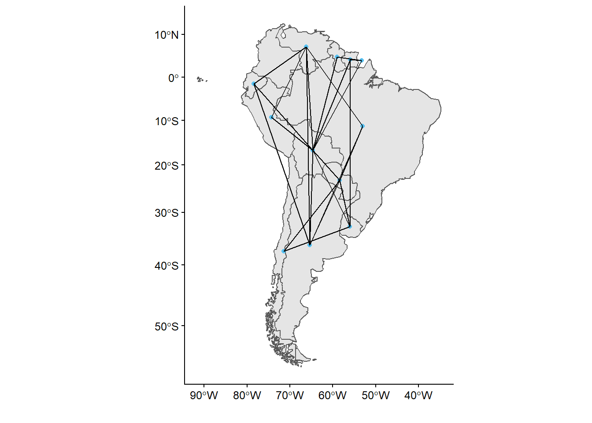
- Realiza el test I de Moran con el comando moran.test() usando la base de datos y la variable de Democracia Electoral. Grafícalo usando moran.plot().
queen_sudamerica_lw <- nb2listw(queen_sudamerica)
moran.test(shp_sudamerica_data16d$v2x_polyarchy, listw = queen_sudamerica_lw)
##
## Moran I test under randomisation
##
## data: shp_sudamerica_data16d$v2x_polyarchy
## weights: queen_sudamerica_lw
##
## Moran I statistic standard deviate = 1, p-value = 0.1
## alternative hypothesis: greater
## sample estimates:
## Moran I statistic Expectation Variance
## 0.079 -0.091 0.024El valor-p del test I de Moran es superior a 0.05, por lo que habría un grado de autocorrelación espacial a nivel de democracia electoral por país en Sudamérica.
moran.plot(shp_sudamerica_data16d$v2x_polyarchy, listw = queen_sudamerica_lw,
xlab = "Democracia Electoral",
ylab = "Democracia Electoral (con corr. espacial)")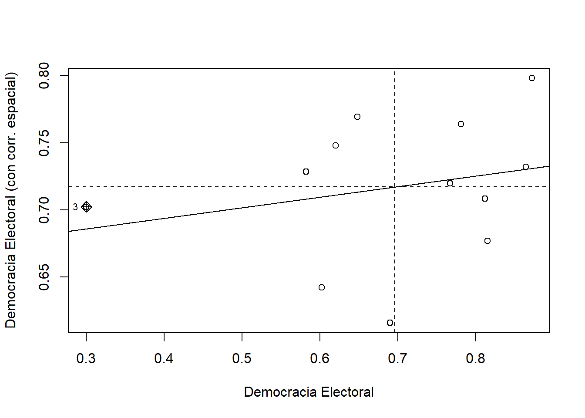
- Realiza el test I de Moran local con el comando localmoran (usa los parámetros del ejercicio anterior), Átalo al conjunto de datos con cbind() y grafica el resultado con ggplot().
queen_sudamerica_b_lw <- nb2listw(queen_sudamerica, style = "B")
shp_sudamerica_data16d <- shp_sudamerica_data16d %>%
mutate(lmoran = localmoran(x = v2x_polyarchy, listw = queen_sudamerica_b_lw)[, 1],
lmoran_pval = localmoran(x = v2x_polyarchy, listw = queen_sudamerica_b_lw)[, 5]
)
ggplot(shp_sudamerica_data16d) +
geom_sf(aes(fill = lmoran))+
labs(fill = "Estadística local de Moran") +
scale_fill_viridis_c()
E-mail: epjung@uc.cl↩︎